1The Past I Carry Within Me
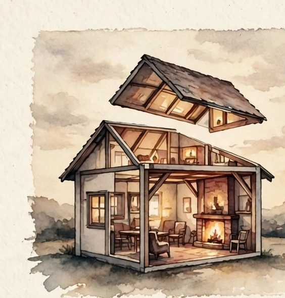
A small house with its roof lifted in cutaway, warm rooms glowing inside, under an evening cream sky.
The past I carry within me is not a place I visit on certain days and leave behind on others. It travels with me into every kitchen, every road, every ordinary morning, arranged inside like rooms in a small house whose roof I never quite see from outside. Some rooms are bright and often entered. Some are quieter, their curtains drawn, their furniture covered against dust. All of them are mine, and all of them are lived in, whether I open their doors daily or pass them for months along a familiar corridor without turning a handle. The Keeper, hearing this, writes nothing down yet, because some arrivals in a life are best received first in silence and ordinary lamplight.
This house makes a plain distinction at its entrance, and the Keeper repeats it to every arrival. What is carried is not a sentence, and it is not a display arranged for visitors to admire in order. It is a lived past, kept in parcels and pockets and shelves, changing slowly as the person who carries it changes. A room that once felt crowded may, in a later year, feel simply furnished. A door that once stuck may open easily, not because anything was forced, but because time and use have eased its frame. The distinction matters because it frees the carrier from arguing with the whole past at once, which no single morning was ever built to hold.
To carry the past with care begins with knowing that it is there at all. Many people move through their days accompanied by rooms they have never named, reacting to a weight or a warmth whose source they have not paused to notice. This hall asks for a slower first step. Walk the inner corridor. Notice which doors stand open, which are closed, which pocket holds something small and smooth from long handling. Nothing needs to be rearranged on the first walk. The inventory can wait. Recognition comes first, quiet and unhurried, like lamplight reaching a room. It is a beginning that asks for honesty rather than effort, and honesty, practised quietly, is enough work for the first room of any house.
2The House I Carry Inside
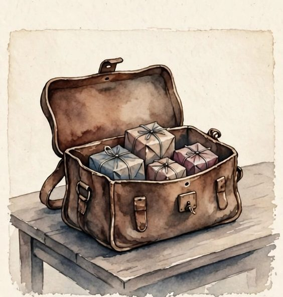
A worn leather satchel open on a table, small wrapped parcels resting quietly inside it.
The house I carry inside was not built in a single year, and no single season explains its shape. It grew the way ordinary houses grow, room by room, as life required more space for what had happened and what had been learned. A childhood added the first rooms, low ceilinged and close. Later years added others, some generous, some narrow, some reached only by a staircase that turns twice. The Keeper keeps no plan of it on paper. The plan is the walking itself, learned by feet that have crossed these boards for decades. Its rooms hold their temperatures separately, so a cold year does not chill a warm one unless a door is left open between them carelessly.
From outside, nothing of this house is visible, and that privacy is part of its design. A person may stand in a queue or sit across a table carrying whole corridors that no companion will ever see, and this is not secrecy in any dishonest sense. It is simply the nature of an inner house. Its windows glow from within. Its doors open inward. What a person chooses to describe to others is a matter of courtesy and trust, decided case by case, and the house respects every honest decision its carrier makes about showing a room. Guests are welcome at the threshold of a description, rarely further, and the house considers that boundary a form of respect in both directions.
The house is carried, which means it is also maintained, lightly and over time. Roofs are noticed when they leak into the present. Rooms are aired when they have stood shut too long and grown stale in the mind. Parcels are rewrapped when their string wears thin. None of this maintenance is dramatic work. It is the steady housekeeping of a life attended to, done in passing, often while doing something else entirely. A house carried inside lasts exactly as long as its carrier, and it asks only to be kept in reasonable repair. Reasonable repair, repeated over years, is how a carried house remains habitable long after grander plans for it have been quietly set aside.
3Rooms You Inhabit From Within
Most rooms are entered from outside, with a key, a knock, a threshold crossed by the feet. The rooms of the carried past are different, because a person inhabits them from within, already inside before any decision to enter has been made. A scent in a street can place someone, without warning, in a room they occupied at nine years old. A sentence overheard can open a door behind the eyes. The inhabitant does not travel to these rooms. The inhabitant discovers, sometimes mid-sentence, that the room is where they have been standing all along. That discovery is not always welcome, but it is seldom entirely unwelcome either, since the room discovered is at least known ground underfoot.
Inhabiting a room from within changes what can be known about it. There is no view of the whole from a distance, no facade to study, no plan to consult. Knowledge comes from use: where the floor dips, which chair is taken without thinking, where the light falls at a particular hour of remembering. This is intimate knowledge, and it can be trusted in the way practical knowledge is trusted. A person may not be able to describe an inner room neatly to a stranger, and still know it completely, the way hands know a familiar tool in the dark. Familiarity of this kind is a resource on difficult days, when newer rooms offer nothing the hands can find without looking in the dark.
Because these rooms are inhabited rather than visited, they shape the weather of ordinary days. A person carries their rooms into every new place, and new places are quietly measured against old ones: this kitchen is wider, that doorway is lower, this road turns the way another road once turned. Comparison is not longing, and this house is careful with the difference. It is simply how an inhabited past works. The rooms travel, the inhabitant lives among them, and the present is furnished, more than most people notice, from stock that was gathered years ago. The house does not apologise for this inward architecture, which every carrier shares and no two carriers have ever furnished in the same way.
4The Keeper of the Carried Past
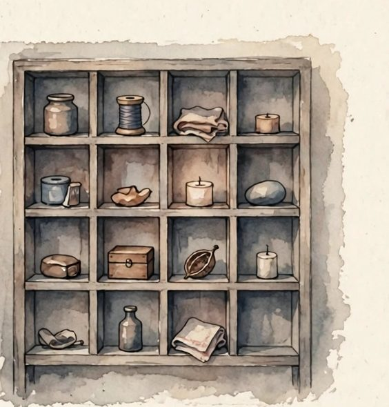
A shelf of small compartments, each compartment holding one quiet object in soft light.
The Keeper of the Carried Past keeps an unassuming post at the Carrying Desk, a wooden desk near the entrance of the inner house, with a lamp, a ledger of ruled and mostly blank pages, and a satchel resting beside it. The Keeper does not own anything that is carried here. Ownership remains, always, with the person who lives in these rooms. The Keeper's work is custodial and clerical: to notice what has been brought in, to record it in plain words, and to keep the corridors passable for the inhabitant's own walking. The desk itself is kept deliberately ordinary, so that nothing about the setting suggests ceremony where plain attention is all that is required.
What the Keeper refuses to do is written as clearly as what the Keeper does. The Keeper does not grade a past, rank its rooms, or suggest which parcels a person should treasure and which they should regret. No entry in the ledger carries a mark of approval or disapproval. When a carrier asks whether a room is a good room, the Keeper answers with description rather than judgement: how long it has been kept, how often it is entered, what it seems to hold. The judgement, if any is needed, belongs to the person whose life it is. A description received without flinching is a rare courtesy, and carriers remember it the way they remember any room where they were not hurried.
If the Keeper has a manner, it is patience with a pencil. Arrivals are received without surprise, whether they are joyful, heavy, or difficult to name in the moment they appear. The Keeper writes slowly, asks few questions, and never hurries a description toward a conclusion it has not reached on its own. Citizens of this inner house learn, over years, that the desk is a safe place to set something down for examination: not to be judged, not to be taken away, only to be seen clearly, in lamplight, for as long as seeing takes. That slowness is not delay for its own sake, but respect for the fact that accurate words about a life take time to arrive.
5Carried, Not Stored Away
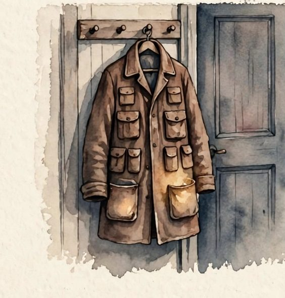
A coat with many pockets hanging by a door, one pocket glowing faintly in the dim.
There is a difference between carrying a past and storing one away, and this house keeps the difference visible. Storage is what happens in attics and cellars, where things are placed out of sight, out of use, and largely out of mind, under dust sheets and behind other boxes. Carrying is closer and more active. What is carried remains within reach of the day. It is handled, however briefly, in the course of living. It influences the route taken, the sentence chosen, the kindness offered, because it is present rather than archived. A stored thing can be forgotten by accident, while a carried thing is remembered by contact, even on days when remembering was never intended.
A carried past is therefore not a tidier past, only a nearer one. Some of what travels in the satchel is worn smooth from handling, like a stone kept in a pocket and turned over by a thumb during long walks. Some of it remains awkward in shape and is carried anyway, wrapped carefully so its edges do less harm to the other contents. The Keeper distinguishes these cases in the ledger without preferring one. Nearness is not a virtue in itself. It is simply the honest condition this house describes: the past is here, in the coat, in the bag, in the room. Proximity also means the carried past is available without ceremony, in the middle of a task, exactly when an older lesson is suddenly needed.
Storage has its honest uses, and nothing in this hall argues against a closed drawer or a high shelf. Later halls will consider things set down, and things set by, with the same respect given here to things carried close. The point of this room is narrower. It asks the carrier to notice the difference in their own life: which parts of the past ride in the pocket, touched every day, and which rest in storage, untouched for years. The two lists are rarely the ones a person expects, and noticing that is useful knowledge. The Keeper regards the distinction as one of the most useful in the house, because so many later decisions depend on knowing it clearly.
6Carrying Is Not the Same as Weight
Carrying and weight are often spoken of as if they were the same word, and this house separates them with care. Everything carried has some substance, but not everything carried is heavy, and not everything heavy is carried in the same place or in the same way. A loaf and a stone may occupy a satchel of the same size. One sustains the carrier along the road. The other simply presses, mile after mile, against the same small place in the lining. The difference is not in the carrying. It is in what the thing does while it travels. The ledger keeps the two columns apart on purpose, and carriers are often surprised by how little the columns resemble each other once separated.
Weight, in this house, is described rather than assumed. A memory may be large and light, filling a whole room yet resting easy in the mind, like a story told so often it has become part of the furniture. Another may be small and dense, a single sentence with the specific gravity of lead, carried in a pocket for decades. Size is a poor guide. The Keeper's ledger therefore records weight separately from size, in the carrier's own terms, and revises the entry when the carrier reports a change. Weights do shift, slowly, in both directions, over a life. That shift, when it happens, is usually credited to time, though the house suspects arrangement deserves at least half of the credit given.
To say that carrying is not the same as weight is to open a practical question rather than to offer comfort. If the two were identical, the only choices would be to carry everything heavily or to carry nothing at all, and this house recognises neither as a description of a real life. Instead there are grips, shelves, pockets and shoulders, parcels rewrapped and loads redistributed. A thing may remain fully carried and become lighter to bear, because its place has changed. Nothing has been denied. The satchel is the same satchel. The arrangement is wiser. It also means companions can help with a load without removing anything from it, simply by changing where and how the weight is borne.
7A Satchel, a Shelf, a Pocket
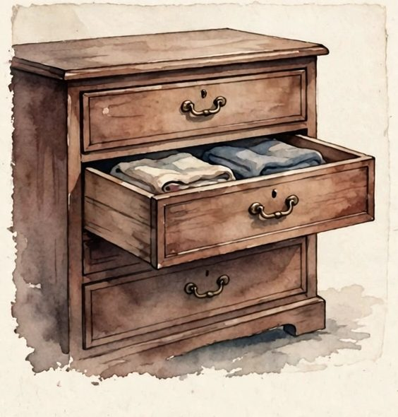
A chest of drawers with one drawer open, folded cloth lying neatly inside it.
The carried past is kept in more places than one, and this room names the commonest of them. There is the satchel, which travels everywhere and holds what the day may need. There is the shelf, which stays in its room and holds what should be reachable but not constantly in hand. There is the pocket, smallest and closest, which holds the few things a person touches without thinking: a sentence, a face, a skill, a smooth small fact about who they are and where they have been. Each place has its own logic, and its own dignity. The pocket, especially, reveals a carrier, since what is kept closest is usually what a life uses most, for comfort or for warning.
Confusion begins when a thing is kept in the wrong place for its nature. A heavy item carried daily in a pocket wears a hole in a life, rubbing at the same thought a hundred times a day, when a shelf would have held it safely and left the pocket free. A sustaining item stored too far away is no help on the road where it is needed. The Keeper sees these mismatches often and treats them as matters of arrangement, not character. Moving a thing from pocket to shelf is housekeeping. It accuses nobody of anything. Children carry almost everything in their pockets, having few shelves as yet, and the house reads that fact with tenderness rather than concern.
No single arrangement suits a whole life, and the house expects the furniture to change with the years. What a young carrier keeps in the pocket, an older one may shelve, and what was shelved for a decade may be taken down and carried close again when its season returns. The satchel, the shelf and the pocket are not ranks. Nothing is demoted by being shelved, and nothing is honoured, particularly, by being carried in the hand. They are places, each suited to a kind of keeping, and the wisdom is in the matching. Seen this way, tidiness in the inner house is not neatness for its own sake, but kindness toward the person who must live there.
8The Past Travels Where I Travel
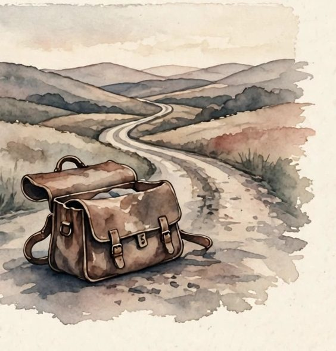
A road winding from a satchel in the foreground toward distant hills in pale light.
Wherever the carrier goes, the carried past goes too, and this simple fact explains more of a life than most maps do. A person may change towns, countries, languages and trades, and still unpack, in the first week in a new place, the same inner furniture they have always owned. The street outside is new. The rooms inside are familiar. This is not failure to arrive, and the house is firm about it. Arrival was never going to mean travelling empty. It means setting the same satchel down, for a while, in a new doorway. Customs at real borders ask what a traveller is carrying, and the inner answer, if it were ever required, would take considerably longer to give.
Travelling with a past has its courtesies and its costs, and both deserve plain description. The costs are the known ones: a heavy parcel does not grow lighter in a new climate, and an inner room can cast its shadow across a bright new place until the carrier notices and turns it toward the light. The courtesies are quieter. A carried past brings its own provisions to unfamiliar ground: skills learned in harder years, sentences kept for cold weather, the steady knowledge that other roads, equally strange at first, were walked and survived. The satchel provides as well as presses. Provision and pressure travel in the same bag, and unpacking in a new place means meeting both again, usually on the very first evening.
The Keeper keeps a small register of journeys at the desk, and its entries share a pattern worth noticing. Carriers rarely report that the past stayed behind, and rarely ask that it should. What they report is learning, slowly, to travel well with what they carry: to pack with more care, to rest at sensible intervals, to know which pocket holds what before the road demands it suddenly. The road and the load grow familiar together. In time, the carrier and the carried past are less like a traveller and a burden, and more like old companions who know each other's pace. Pace, once known, settles many arguments before they begin, including the argument about whether the journey should have been made at all.
9Known by Its Inventory
A carried past becomes known, this house teaches, by its inventory: the slow, plain work of finding out what is actually in the satchel. Most carriers have only a rough idea. They know the famous items, the ones with stories attached, and the heavy ones, which announce themselves. But a satchel kept for decades accumulates smaller contents in its corners: a skill never credited, a kindness never thanked, a warning absorbed so young its source is forgotten. The inventory is how these come into view, one item at a time, held up to the lamplight and named. Corners deserve particular attention, since small items roll there and wait, patient as seeds, for the year in which they are finally noticed.
An inventory is not an interrogation, and the Keeper conducts it at the pace of unpacking a bag after a long journey, not at the pace of a search. Items are lifted out, looked at, described in a sentence or two, and set in a row. Some are recognised at once. Some require a moment: where did this come from, and how long has it been travelling with me. There is no requirement to decide anything about an item while it sits in the row. Knowing it is there, and being able to name it, is the whole of this stage. An item named incorrectly can be renamed later without embarrassment, because the inventory is a working list and not a record set in stone.
What surprises carriers most, the ledger records, is rarely the heavy item they expected to find. It is the proportion of the whole. How much of the satchel is sustaining, how much is simply neutral, travelling quietly, how much is glad. A past imagined as mostly weight sometimes inventories as mostly provision, with the weight concentrated in a few parcels that have been carried at the top, against the shoulder, for years. The inventory changes nothing by itself. It changes what the carrier knows, and knowledge, in this house, is the beginning of every honest rearrangement that follows. After an honest inventory, carriers often report an unexpected plainness, as if the satchel, once feared as mysterious, had become merely full and known.
10Nothing Inside Is on Trial
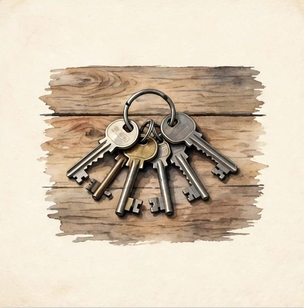
A key ring with several keys resting on a wooden table in warm afternoon light.
Nothing inside this house is on trial, and the rule is stated early because so much depends on it. The rooms, the parcels, the shelves and the pockets are here to be described, not prosecuted. A carrier may bring any part of the past to the Carrying Desk and set it under the lamp without preparing a defence. The Keeper will record what it is, where it is kept, and how long it has travelled. No verdict will be entered in the ledger. The ledger has no column for verdicts, and the Keeper has checked, more than once, to be certain. The absence of a trial does not make the house careless about truth, but far stricter about it, since nothing here is softened for a defence.
The rule protects the inventory, which cannot be made honestly under threat of judgement. A person who expects each item to be weighed for approval will hide the awkward ones, minimise the heavy ones, and present the satchel as lighter and tidier than it is. The inventory then fails at its single purpose, which is truth. In a house without trials, an item can be what it is: a year that aches, a debt unpaid in memory, a sentence never said aloud. None of these are charges. They are contents, and contents can be arranged once they can be admitted. Admitted contents can be discussed with companions, moved between rooms, or simply left in peace, and each of those fates begins with admission.
Visitors sometimes ask what replaces judgement, if it is set aside so completely, and the Keeper's answer is description, which is harder and more useful. To describe a thing plainly, without defending or condemning it, is a discipline most people were never taught. It takes practice to say: this happened, this is where I keep it, this is what it weighs now. The sentence ends there, without a therefore. This house believes that a past described truthfully is already better carried than a past endlessly argued about, and it keeps its rooms quiet so the describing can be done. The Keeper has found that description, practised long enough, quiets the inner courtroom more reliably than any verdict its sessions ever produced.
11The Inner Doors Stay Unlocked
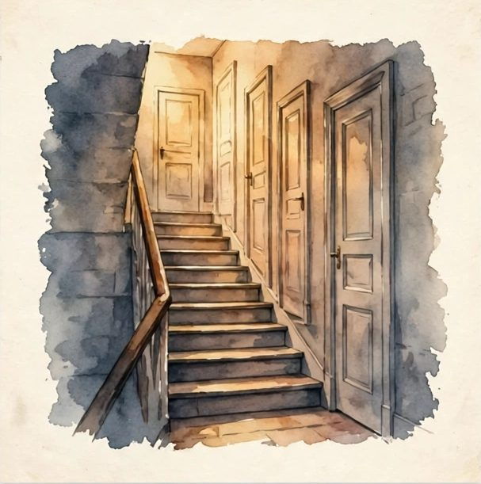
An inner staircase in warm light, doors along it closed gently, none of them barred.
The doors of the inner house are closed, many of them, but they are not locked, and the distinction is one of the house's quiet foundations. A closed door is an ordinary arrangement: it keeps a room's weather in its room, gives privacy to what rests inside, and lets the corridor stay clear for daily walking. A locked door is a different statement. It declares that what is inside must not be reached, even by the person who lives here, even in need. This house keeps very few locks, and regards each one as a decision to be revisited, gently, over time. A carrier who trusts the doors tends to walk the whole house more freely, including the bright rooms, which locked houses often reach last.
Unlocked does not mean open, and it certainly does not mean entered on any schedule but the carrier's own. A door may stay closed for years, its room unvisited, its contents undisturbed, and the house records no fault in that. What matters is that the key, where a key exists at all, hangs on its hook beside the door, in the carrier's own keeping. Access is a possibility held in reserve. A room that can be entered, if a day ever requires it, rests differently in a house than a room sealed against its own inhabitant. The hook by each door is as much a part of the doctrine as the door itself, since a key mislaid becomes a lock by accident.
The Keeper's evening round includes the doors, and the task is simple: walk the staircase, touch each handle, confirm that nothing has seized. Doors stick for ordinary reasons. Paint swells, hinges dry, a corridor goes long unwalked in that direction. A handle turned once a year, without any obligation to open what lies behind it, keeps the mechanism honest. Carriers who adopt the practice report the same modest finding. The house feels less haunted, though nothing in it has changed, because haunting, the Keeper suspects, is mostly the sound of doors that will not move. That sound, the Keeper notes in the margin, is more often complained of than any actual room in the entire inner house.
12The First Rule of the Inner House
Every house in this estate keeps one rule first, from which the others follow, and the inner house states its rule at the desk rather than over the door. It is this: what you carry, carry with care. Care is not a feeling the house attempts to command. It is a manner of handling, visible in small decisions: how a parcel is wrapped, where a heavy thing is placed, how often a pocket is checked for wear. A past carried carelessly is dropped, dragged and knocked against doorframes. A past carried with care arrives, year after year, in working order. Care also extends to pace, since a past carried at a constant run is handled roughly no matter how good the carrier's intentions are.
The rule is first because it governs before any other question can be usefully asked. Before deciding what weighs and what sustains, before moving anything to a shelf or setting anything down for a season, the carrier is asked only to handle the whole load as something that belongs to them and matters. Even the heavy rooms are included in the rule. Even the parcels a person would not have chosen, given a choice, are carried matter, part of the one life that is actually being lived, and care is owed to the carrying even where gratitude is not owed to the contents. The rule protects other people as well, because a carelessly carried past is the one most often dropped, loudly, into somebody else's afternoon.
The Keeper enforces the rule the way good rules are usually enforced here, by example and by repetition in an ordinary voice. The lamp is lit at the desk each evening. The ledger is opened to a clean page. The satchel by the desk is set down straight, not dropped in a heap, and its strap is laid flat so it will not twist in the night. None of this is ceremony. It is the house showing its inhabitant, daily, what careful carrying looks like at close range, until the manner becomes the carrier's own. In that daily example the whole teaching of the hall is contained, small enough to practise and large enough to organise a life around.
13The Heaviest Room
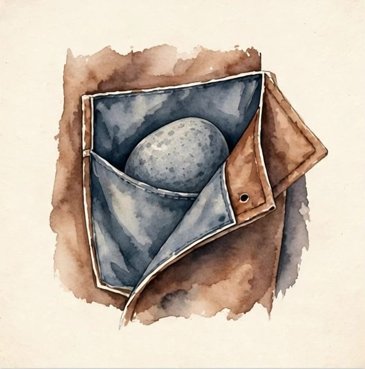
A smooth river stone resting in a coat pocket, shown in cutaway against dark cloth.
Every inner house has a heaviest room, and carriers usually know its door without being told. It is not always the largest room, and it is rarely the one with the most sorrow in it by any measure a stranger could take. It is the room whose weight is felt in the corridor, through the wall, on ordinary days when it has not been opened at all. Its heaviness is a property of placement as much as content: it sits, in many houses, directly over the entrance, so that every coming and going passes underneath it. Visitors to the desk often lower their voices naming it, though the Keeper never asks them to, and answers always in an ordinary tone.
This hall does not ask what is in anyone's heaviest room, and the Keeper's ledger leaves that page to the carrier alone. What can be described in general is the experience of living under weight: the way it sets a background note to the day, the way tiredness arrives earlier than the day's work explains, the way a person learns, without deciding to, to walk certain corridors and avoid others. Description of this kind is already useful. A weight that can be located can be considered. A weight that is everywhere and nowhere permits no thought at all. Location, once agreed, can be marked in the ledger, and a marked weight is carried differently from one that drifts unnamed through every room.
The heaviest room is not an enemy of the house, and this doctrine is stated plainly because carriers often assume otherwise. The room is part of the structure now; houses settle around their heaviest rooms over decades, and floors, stairs and habits have all taken its measure. To carry on living well in such a house is not a matter of pretending the room is light. It is a matter of knowing its weight honestly, keeping its door in good repair, and arranging the rest of the house so that one heavy room does not darken every other. Houses manage this. So, given time, do carriers. Arrangement is not solution, and the house does not confuse them, but arrangement is what a carrier can actually do on an ordinary Tuesday.
14What I Carry on the Shoulders
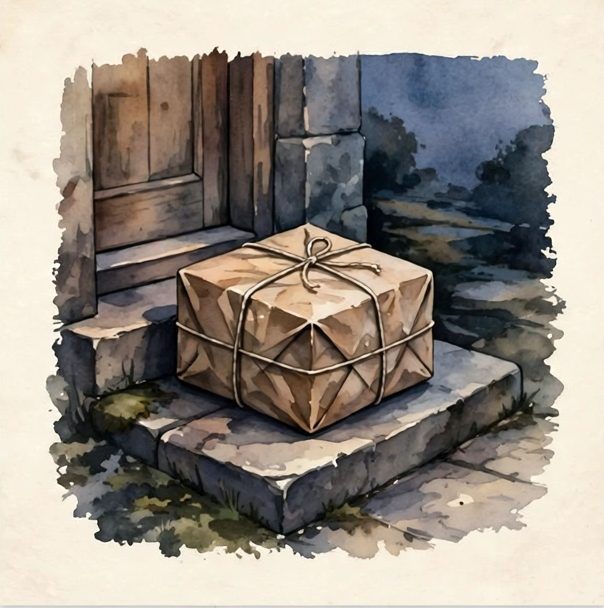
A heavy parcel tied with string on a doorstep at dusk, its corners worn from handling.
Some of the past is carried on the shoulders, and the shoulders know it before the mind has words for it. Shoulder-carried things are the duties and memories that ride high and close: responsibilities taken up young and never since examined, loyalties held past the season that asked for them, promises made in one decade and honoured, at cost, in another. They sit where a yoke sits. A person can grow so used to the pressure that its absence, on a rare light day, feels less like relief than like something forgotten at home. The body keeps its own ledger of such arrangements, written in posture and habit, and it is often read more easily than the paper one.
The Keeper asks carriers, now and then, a plain question about the shoulders: which of these were chosen, and which were simply handed over and never set down long enough to be considered. The question is not an invitation to shrug anything off in the doorway of the desk. It is an inventory question, asked in the same tone as any other. Some shoulder loads, examined, are re-chosen with open eyes and carried more easily for having been chosen. Others are found to belong, in fairness, to a younger carrier who no longer lives here, and that finding alone changes the grip. Re-choosing also restores proportion, since a load carried on purpose sits differently from the same load carried only because it was never examined.
Shoulders, the house notes, were made for loads that shift and settle, not for loads that are never lifted off at night. Even the most willingly carried responsibility in this hall is set down while its carrier sleeps, eats, laughs and rests, and is taken up again in the morning by an act that can stay unexamined or become, occasionally, deliberate. The doctrine here is modest. Notice the shoulders. Notice what rides there and since when. A load noticed is a load that can be rested, rearranged, shared or re-chosen. A load never noticed simply rides, and the shoulders pay in silence. The morning act, noticed even occasionally, reminds the carrier that carrying is something they do, and not merely something that happens to them.
15A Stone in the Pocket
Almost every carrier has a stone in the pocket: one small, dense item of the past that goes everywhere because it has never been placed anywhere in particular. It is rarely the largest sorrow. It is often something compact: a sentence that landed once and stayed, a small shame kept polished by handling, a fact that cannot be altered and is turned over by the thumb of the mind whenever the hand is idle. Its power is in its portability. Rooms can be left. A pocket is left only when the coat comes off, and the coat is worn daily. Some carriers name the stone, privately, and report that a named stone is turned over less often, as if naming were a kind of rest.
A stone is not carried by accident for twenty years, and the Keeper is honest about the reasons carriers give for keeping it close. Some stones are kept as reminders, deliberately, against repeating an old error. Some are kept as proof, as if setting the stone down would mean agreeing that what it stands for did not matter. Some are simply never decided about, and an undecided thing defaults, in most lives, to the pocket. The ledger records the reason given, without ranking the reasons. A stone kept for any of them still weighs what it weighs, and costs what it costs, daily. The reasons are kept with the stone, in effect, since a carrier who forgets the reason will handle it as mere weight and nothing more.
This room offers no instruction about stones, only a clearer view of the pocket. A carrier who knows the stone is there, knows its weight, and knows the reason it rides where it rides is already carrying differently from one who discovers it afresh each time a hand slips into the pocket and closes around something hard. Later rooms in this hall will speak of resting and of setting down. Here it is enough to take the stone out, once, in lamplight, and look at it properly: its size, its smoothness, the exact shape of the years of handling. Then the pocket, for one evening, is empty and noticed. Most stones, properly seen, turn out to be smaller than their reputation in the pocket, though none has yet turned out to be imaginary.
The Carrying Desk
One desk receives all correspondence for this house — questions, corrections, and word of anything carried within: what weighs, what sustains, a person or a place inside, a lesson, or something set down. It is read in the order it arrives.
16The Year That Still Aches Quietly
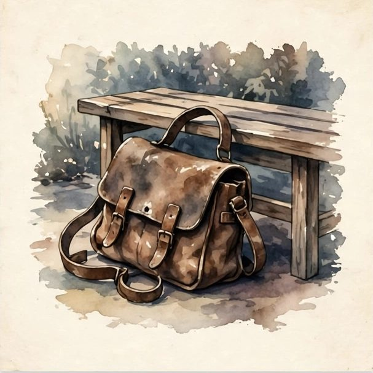
A satchel with its strap worn thin, set down beside a bench in quiet light.
Some years do not finish when the calendar says they did. They remain in the inner house as a room that aches quietly, the way an old joint aches before rain: not sharply, not constantly, but reliably, in certain weather, at certain turns of the stair. The carrier learns the pattern over time. An anniversary passes through the corridor. A place, a song, a quality of light in a particular month, and the ache is present again, low and familiar, asking for nothing dramatic: only acknowledgement that the year is still carried, and still tender in one place. Companions learn the pattern too, in kind houses, and plan around the tender month without making a speech about it to anyone.
A quiet ache is often misread, by carriers and companions alike, as a sign that something was done wrongly or left unfinished. This house records a plainer view. Some years ache because of what they contained, and their aching is proportionate, honest, and slow to fade in the way deep bruises are slow. The ache is information about depth, not evidence of failure. The Keeper has never entered, in any ledger, an expected date by which a year should stop aching. The ledger has a column for how the ache is now, and that column is filled in pencil, in the carrier's own words. The column is sometimes left unchanged for years at a stretch, and the Keeper accepts the unchanged entry as information rather than failure.
Living with a year that aches is mostly a matter of accommodations, small and practical, like those made in any house with an old stair. The carrier stops demanding that particular month feel like other months. Rest is planned the way rest is planned around weather. The room is entered when it must be, kept clean and aired, and not camped in. Other rooms, in time, grow warmer around it. The ache may lessen across decades, and it may not, and the house promises neither. What it describes, from long observation, is carriers who live full lives in houses that contain one tender room. What they cannot do, looking back, is point to a season when the tender room prevented the rest of the house from being lived in.
17Carried Debts of Memory
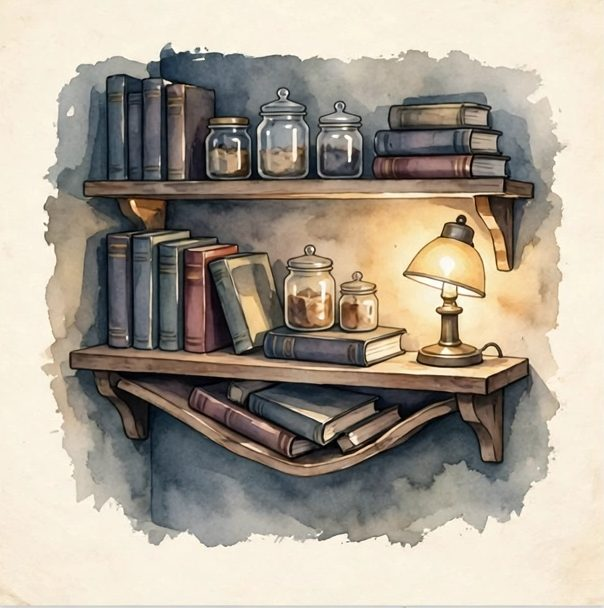
A shelf bowing slightly under books and jars, held in warm lamplight at evening.
Among the heavier contents of the satchel, most carriers find a small number of debts: kindnesses never repaid, apologies never delivered, thanks that were felt and never spoken while speaking was possible. Memory keeps these accounts with uncomfortable precision. The sum is usually remembered to the sentence. The person to whom it is owed may be gone, or distant, or unaware that anything is owed at all, and still the entry sits in the ledger the carrier keeps privately, gathering the particular weight that unpaid things gather, which is heavier than their size suggests. Interest, in these accounts, is mostly self-assessed, and the Keeper gently notes how much harsher carriers are as their own creditors than anyone else.
This house distinguishes, carefully, between a debt of memory and a fault that can still be acted on. Some entries can be settled in the present tense: a letter written late is still a letter, a thanks offered after years still lands as thanks. Others belong to circumstances that no longer exist, and can be carried honestly only as knowledge: that the kindness mattered, that it was received, that it shaped the carrier's own conduct toward others. Many carriers find that a debt of memory, unpayable to its original creditor, is paid outward instead, to strangers, in the same currency. Payment outward has an old and honourable history in this house, and the ledger never marks it as anything less than payment in full.
What the Keeper will not do is total the account and present it as a judgement on the carrier. Debts of memory are nearly universal, and their presence in a satchel says more about a conscience that kept records than about a life badly lived. The entry is recorded, its weight noted, and the question left open for the carrier to consider in their own time: what, if anything, can still be done, and what must simply be carried as a true account of owing. A debt described honestly weighs less strangely than a debt denied, which tends to charge interest in the dark. Honesty about owing, it turns out, is itself a form of respect toward the person to whom the debt was originally owed.
18What Was Never Said Aloud
Every carried past includes a small archive of things that were never said aloud: the sentence composed a hundred times and never delivered, the question rehearsed in doorways and swallowed at thresholds, the farewell that was owed a better wording than the one the moment allowed. These unsaid things do not vanish for having stayed unspoken. They are kept, often with surprising fidelity, in a quiet part of the house, and they surface at idle moments with their wording intact, as if still waiting for an occasion that the calendar has already passed. Occasionally an unsaid thing turns out, on inspection, to have been received anyway, through conduct, through presence, through years of wordless evidence.
The Keeper treats the unsaid as contents, not as accusations. Much was never said for reasons that were sound at the time: kindness, timing, the plain impossibility of saying a true thing to a person who could not have heard it then. Some was left unsaid from fear, and the ledger records that, too, without sharpening it. The archive is mixed, like everything else in the house. Its weight comes less from any single item than from the total: a person can carry a surprising number of undelivered sentences before the satchel begins to pull noticeably at one side. Carriers sometimes measure that total for the first time at the desk and sit quietly with the sum, surprised less by it than expected.
What can be done with the unsaid, in this house, begins with saying it once somewhere it can be heard plainly: at the desk, in a letter never sent, in description to a trusted listener. The content does not change. The carrying does. A sentence that has been spoken aloud, even once, even late, even to the lamplight, joins the ordinary contents of the past, while a sentence kept perfectly sealed keeps the pressure of all sealed things. Later rooms will consider what is set down. This room records only that the unsaid has weight, that the weight is real, and that naming it is a beginning. Other halls will take up particular unsaid things one at a time, at a pace their carrier can choose and change without explanation.
19The Weight No One Else Sees
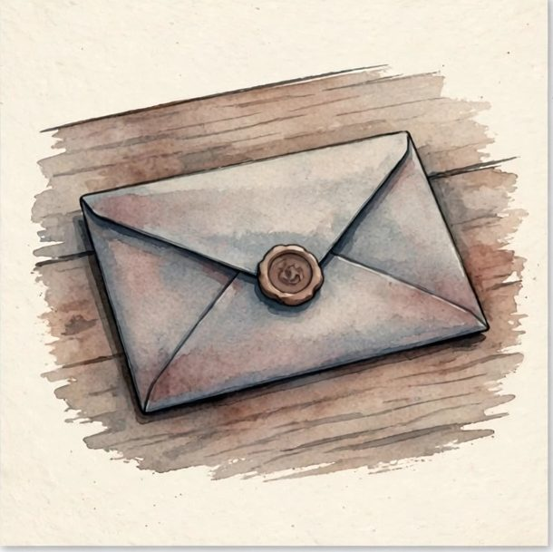
A sealed envelope resting on a table, its face blank, its edges softened by long keeping.
Some weight is carried where no one else can see it, and the invisibility is itself part of the load. From outside, the carrier walks evenly, works, answers, laughs in the right places, and gives no evidence of effort, because the effort is interior and practised. Companions may sense, at most, an unexplained tiredness, or a care taken with certain subjects, like a person stepping around a place in a floor they know to be tender. The weight is not performed and not hidden in any dramatic sense. It is simply carried privately, as most serious things are. Sympathy offered without sight of the weight is therefore never refused at the desk, but it is recorded accurately as sympathy, not as understanding.
This house is careful with the phrase no one else sees, because it is rarely entirely true and often entirely felt. Usually someone, once, glimpsed the weight: a person who was there in the heavy year, a companion who learned to read the carrier's silences. But felt truth matters here too. To carry a weight that cannot be pointed to, explained briefly, or set down in company is to carry it without the ordinary reliefs of witness. The Keeper's desk exists partly as an answer to this. At the desk, the weight can be described once, in full, to a listener whose whole work is receiving descriptions. A single full description, believed, does not lighten the load itself, but it ends the additional labour of carrying it entirely unwitnessed.
Nothing in this room suggests that invisible weight should be displayed, or that privacy is a problem to be corrected. Many carriers prefer their arrangement and keep it with dignity. The doctrine is narrower and kinder: a weight does not need to be seen to be real, and its reality does not depend on witnesses, explanations, or the success of any attempt to describe it. It weighs what it weighs. The ledger enters it on the carrier's word alone, and that entry, made plainly and believed completely, is sometimes the first rest the weight has ever been given. The entry stands in the ledger in the same ink as every visible achievement in the house, and neither entry is given larger letters.
20Heavy Does Not Mean False
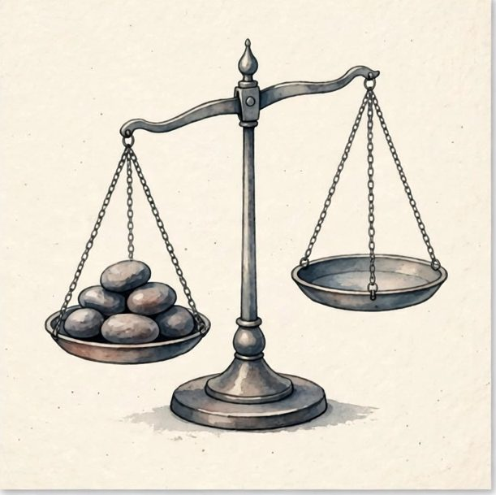
A pair of scales with stones on one side only, that side low, the other empty in lamplight.
A closing doctrine governs this hall of what weighs, and it is entered in the ledger in the Keeper's plainest hand: heavy does not mean false. A memory that weighs on its carrier is sometimes doubted for exactly that reason, as if pain were a distortion and only light memories could be trusted to report the past accurately. This house rejects the reasoning. Heaviness is a property of carrying, not a measure of truth. A stone is heavy and entirely real. So is a loaf. The scales at the desk register both with the same indifference to everything except weight. Falsehood exists in the house, of course, but it is identified by examination, never by the simple route of weighing what is presented.
The companion error is also recorded: that what is light must be slight, and what sustains must matter less than what presses. Later halls will give the sustaining contents their full due. Here it is enough to keep the scales honest in both directions. The heavy rooms report truly on the years that built them. The glad contents report truly as well. A carrier does not have to choose which half of the evidence to believe. The whole satchel is testimony, and the house receives all of it, the stones and the provisions, without discounting either for its weight or its lightness. Neither report corrects the other, and the Keeper, entering both, considers the ledger richer rather than more difficult for holding them together.
To describe weight honestly, which is where this hall has been travelling, is to be able to say of a heavy thing: it is heavy, and it is true, and both facts can be carried in the same hand. No conclusion is forced by the saying. The item is not thereby excused, condemned, lightened or enshrined. It is placed accurately, perhaps for the first time, on the scales that this house keeps for exactly this purpose. Accuracy is a modest achievement. The Keeper, who has watched carriers arrive unable to say even that much, regards it as the solid ground on which every later rearrangement stands. From that ground, carriers have set down, rearranged, shared and re-chosen, in later rooms, with a steadiness that argument alone never gave them.
21Resting Without Dropping It
There is a kind of rest that does not require putting a thing down for good. A carrier on a long road stops at a bench, eases the satchel from the shoulder, and sits beside it for a while with empty hands. Nothing has been abandoned in that pause. Nothing has been denied or decided in haste. The load is still there, within reach, still honestly theirs, and the shoulder is simply allowed to remember what it feels like unburdened for the length of one quiet sitting. This house counts that pause as part of carrying, not as a failure of it, and it keeps benches along every inner road for exactly that purpose.
Resting without dropping asks for a certain honesty in both directions. The carrier does not pretend the satchel is gone merely because the strap is off for an hour, and does not pretend to be carrying well merely because they have refused every bench for a year. There is a middle practice, plainer than either performance. Sit. Breathe at a slower pace. Notice which part of the weight was the thing itself and which part was the uninterrupted grip. Often the thing has not changed at all during the rest, and yet the carrying of it afterwards is different, because the hands that take it up again are steadier and the shoulder has been reminded that rest was permitted.
The Keeper of the Carried Past keeps no tally of rests taken or refused. A rest is not a verdict on a life, and it is not a promise about what happens next on the road. Some carriers rest and then lift the same load in the same way, content that the pause was enough. Some rest and notice, sitting there, that a different grip has been possible all along. Both are recorded in the same plain hand, without preference. What matters to this house is only that the bench was there, that using it carried no shame, and that what was rested beside a person was never, in that quiet hour, mistaken for what had been thrown away.
22When the Load Shifts
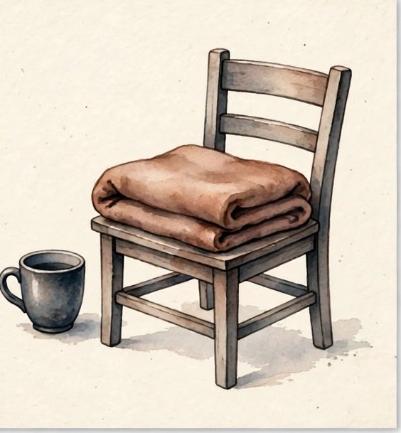
A chair with a folded blanket and a cup gone cold beside it, in quiet light.
A load does not always change by growing heavier or lighter. Sometimes it changes by moving. What was carried for years high on the shoulders, close to the neck, felt in every step, settles one season lower, into the arms, or into a pocket, or onto a shelf of the inner house where it is met less often. The carrier may notice the shift only in retrospect, the way a person notices a room has been rearranged by living in it differently for a month. Nothing was announced. The weight simply found a new place to rest inside the same life, and the life adjusted around it quietly, in the ordinary course of its days.
Shifts of this kind are not always chosen, and this house is careful not to call every one of them progress. A load may shift because the carrier has grown stronger in one place and tired in another. It may shift because a new thing has arrived and the older things have made room, the way parcels on a shelf are nudged along by a hand that is thinking of something else. It may shift because a person who once helped to carry it is no longer there. The register records the new arrangement as it is found, in the present tense, and resists drawing a lesson from it before the carrier has had time to live inside the change.
What can be done, when a shift is noticed, is simple housekeeping of an honest kind. Walk the inner rooms and learn the new geography. Note what is now carried close and what has moved to a distance, what asks for attention daily and what has gone quiet in a farther room. A carrier who knows where things presently stand is less likely to reach, out of old habit, for a weight that is no longer on that shoulder, and less likely to be surprised by one that has settled somewhere new. The house asks for no more than that knowledge, kept current, the way a map is kept current by walking the ground it describes.
23Help Carrying, Asked Plainly
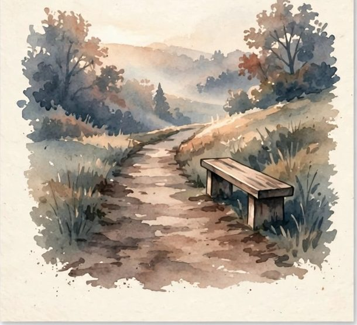
A path uphill with a resting bench halfway, morning light on the stones.
There are stretches of the inner road where the honest sentence is a short one: this is more than I can carry alone just now. This house treats that sentence as ordinary speech, no more dramatic than noting that a parcel needs two hands. Asking for help carrying is not a confession about the worth of the carrier or the worth of what is carried. It is a practical arrangement between people, made for a particular weight and a particular distance, and it can be as limited as that. A hand under one corner of the load, for one hill, is a complete and respectable form of help, wherever it is honestly offered.
Plain asking has its own craft, and the Keeper describes it without ceremony. Say what the thing is, as far as it can be said. Say how far the help is wanted, and in what form, and what is not being asked for along with it. The person asked remains free, and their answer, whichever way it goes, is information rather than judgment. Some loads, it turns out, can be shared simply by being described aloud in trustworthy company, the weight unchanged and yet differently distributed, the way a heavy table is the same table and yet movable once a second person takes the far end of it, at last, without strain.
Help received does not rewrite who owns the past. The carrier still carries their own years, and the helper carries only what they agreed to lift, for as long as they agreed to lift it. This house is firm about the boundary, because help that quietly becomes a transfer breeds confusion in both directions. When the stretch of road is done, thanks can be plain too, and the arrangement can end without ceremony or debt beyond what was honestly spoken. What remains afterwards is often modest and durable: the knowledge, kept in a pocket, that asking was possible once, in plain words, and that the sky did not fall when it was done.
24Weight, Described Honestly
The last room of this hall is given to description, because description is where honest carrying begins and where it returns. To describe a weight honestly is to say what it is and what it is not, in words that neither swell it into the whole of a life nor shrink it into nothing for the comfort of listeners. The year was hard in these ways, and not in those. This part still aches when it is touched, and that part, surprisingly, does not. Such sentences are unglamorous. They are also the only foundation on which a carrier can arrange an inner house that matches the life actually being lived.
Honest description refuses two easy temptations that wait at the Carrying Desk. The first is the grand summary, in which one heavy chapter is allowed to name the entire book, and every lighter room in the house is quietly reclassified as an exception. The second is the tidy summary, in which the weight is spoken of so smoothly that no one, including the speaker, can find its edges anymore. The Keeper listens for edges. A weight with edges can be set on a shelf, moved to another room, rested beside a bench. A weight without edges is carried everywhere at once, including into rooms it was never part of, and that is a harder life than the facts require.
Nothing in this hall ranks one carrier's weight against another's, and honest description is part of why. Weighed truly, each load belongs to the life that produced it, and comparisons drawn at the desk are politely returned unopened. What the register keeps is simpler: the carrier's own account, in the carrier's own words, revised whenever the carrier revises it. A description written five years ago may be read again and corrected in the margin, not because it was false then, but because describing is done by a living person in the present. The hall closes with the ledger open, the pencil beside it, and the weight neither worshipped nor wished away, only named.
25The Room That Holds Me Up
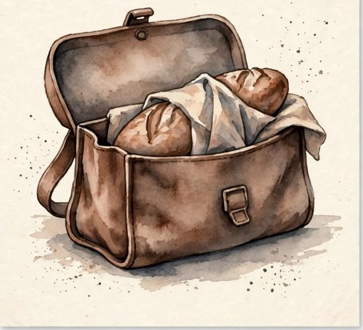
A loaf of bread wrapped in cloth inside an open satchel, ready for the road.
Every inner house has one room that is not only carried but does some of the carrying. It is rarely the grandest room, and visitors expecting monuments are sometimes puzzled to be shown a plain chamber with good light and a floor that does not complain. This is the room that holds the carrier up. What is kept there differs from life to life: a piece of work done properly and remembered, a place where one was welcome, a season in which one's own competence was plain. The room does not argue that everything else was easy. It simply stands, structurally, under the rest of the house, and bears its share without being thanked very often.
A sustaining room is used differently from the other rooms. The carrier does not visit it to admire the past or to win an argument with the heavier chambers down the corridor. They visit it the way a person steps onto a firm stair in the dark, by habit and with trust, on the way to somewhere else. In a difficult week, the room is where the carrier goes to remember the plain fact of their own continuity: that they have been a person before this week, in rooms of their own, doing things that stood up when tested. The register calls this remembering a form of standing on one's own floor, and it is available at any hour.
Such rooms need ordinary maintenance, like any load-bearing part of a house. The carrier keeps the room aired by revisiting what is in it now and then, adds to it when a new sustaining thing honestly arrives, and allows its contents to age without demanding that they shine. A room that holds a person up at thirty may hold them differently at sixty, and that is not a failure of the room. It is the normal history of a house that is lived in. The Keeper's only instruction for this hall is carved nowhere and practised everywhere: know which room it is, keep the path to it clear, and do not apologise for standing in it.
26Carried Strengths, Earned Slowly
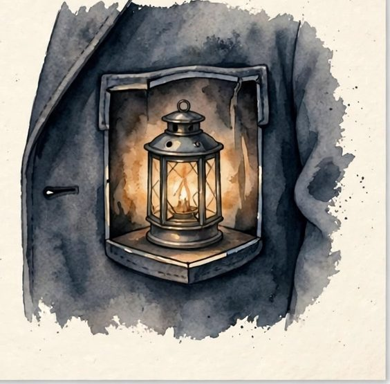
A small lantern glowing in a dark coat pocket, shown in cutaway, its light steady.
Strength, in the inner house, is seldom stored in the shape in which it first arrived. What a carrier keeps is rarely the dramatic moment itself. It is the slower residue: the patience that remained after a long wait was survived, the steadiness practised through a season of bad news, the ability to begin again on an ordinary morning that was learned across many unremarkable ones. Carried strengths are earned slowly almost by definition, because the earning and the carrying are the same motion repeated. A strength lifted once, in a crisis, may be real enough, but the ones this hall honours are the ones that stayed, and were used, and stayed again.
The Keeper is careful about how strengths are described in the register, because carriers are prone to two errors at this desk. Some dismiss what they carry, calling it nothing, merely what anyone would have done, as if a strength widely shared were somehow not a strength at all. Others speak of theirs as a finished possession, sealed and beyond revision, and are then bewildered when a new season asks for a kind they do not have. The register takes the middle road. A strength is recorded as it is presently known, in plain words, with its limits left in the sentence where the carrier honestly put them, neither polished nor apologised for.
There is a quiet satisfaction available in this room that this house does not begrudge anyone. To look along the shelf and recognise what is there, and to know the price at which each item was earned, is not boasting. It is inventory. The carrier who knows their strengths can lend them deliberately, rest them when they are worn, and notice in good time when a task is asking for one they have never claimed to own. The hall makes no promise that what was earned will be sufficient for everything ahead. It records only that what is on this shelf was truly earned, is truly there, and travels with the carrier into every new room.
27A Kind Sentence, Kept for Years
Some of the smallest things in the satchel are carried the longest. A kind sentence, said once by the right person at the right hour, can be kept for decades with almost no effort, folded smaller than a card and riding in a pocket through every change of coat and country. It was not, at the time, a grand pronouncement. Someone looked at the work, or at the person, and said the true encouraging thing in an ordinary voice, and then the moment passed and was not mentioned again. But the sentence stayed. The carrier has taken it out more times than they could count, in worse weather than the speaker ever knew about.
What makes a sentence keepable, the register observes, is not elegance. The sentences that last are usually plain to the point of being unquotable at a dinner table, and their power is in their accuracy. They named something real that the carrier had begun to doubt was real. Because they were accurate, they did not expire when circumstances changed; a compliment about a lucky season fades with the season, but a true sentence about a person's character or work remains true in weather its speaker never saw. The Keeper files such sentences under sustaining, however small they look beside the larger furniture of a life, and the file, over the years, has grown surprisingly thick.
A kept sentence can also be carried onward, and this hall notes the traffic with approval. The carrier, standing one day where the speaker once stood, finds the old words arriving in their own mouth, addressed to someone who is doubting something real. Nothing about this is theft. It is closer to a lantern being lit from another lantern, the first flame undiminished. The original speaker may never learn how far their sentence travelled, through how many pockets, into how many hard seasons. The register does not require that they be told. It records only the route, as far as it is known, and leaves the sentence travelling, still in working order.
28The Skill the Hard Years Taught
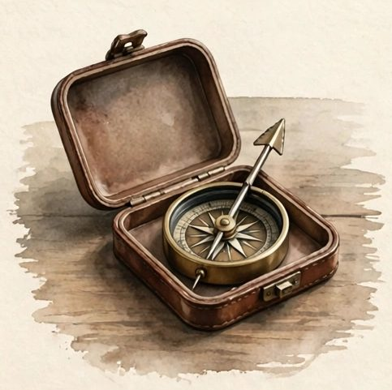
A compass resting in an open palm-sized case on a table, the case worn at the edges.
The hard years were expensive, and this house does not pretend otherwise in any room. But they were also, in the plainest sense, instructional, and what they taught is carried now as skill rather than as story. A carrier who lived through scarcity may know, in their hands and habits, how to make a small amount serve. A carrier who lived through uncertainty may be able to work without a guarantee, calmly, in a way colleagues find mysterious. These skills were not chosen from a catalogue. They were the by-product of years that would not have been chosen either, and they are kept here without gratitude being demanded for the years themselves.
Skill of this kind has a particular texture that the Keeper has learned to recognise. It is quiet, and it is specific, and it often goes unnamed by its owner precisely because it was learned before there was any distance from it. The carrier simply does the thing: reads a room, repairs the object, stretches the provisions, waits without panic. It falls to the register, sometimes, to point out that this ease was not always ease, and that the years it cost are part of the skill's honest description. Naming it does not diminish it. A tool does not become less useful for its owner remembering the forge, and the memory, kept plainly, keeps the skill from being mistaken for luck.
Nothing in this room requires the carrier to be thankful for what taught them. That transaction is not the house's business, and the Keeper does not propose it at the desk. The skill is here, it is real, it is used, and it lightens other people's loads as often as its owner's. That is the whole entry. If anything further is owed to the hard years, it is accuracy: to describe them as they were, to keep the skill they left without gilding the leaving of it, and to pass the skill on, when the occasion comes, in the same unsentimental spirit in which it was acquired, as something useful that cost something.
29Bread in the Satchel
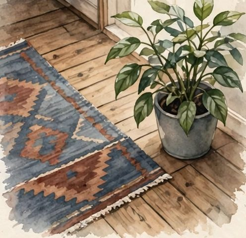
A sturdy floor of boards with a rug, a houseplant thriving beside it in soft light.
Bread is the register's shorthand for the most basic kind of sustaining: the carried knowledge that one can be fed, and can feed others, from what is actually at hand. In the satchel of the inner house it takes many forms. There is the recipe known by heart that has steadied more than one household. There is the remembered table where there was always, somehow, enough. There is the practical confidence, learned in leaner years, that a meal and a welcome can be made from modest materials without apology. Whatever its form in a given life, bread in the satchel is the past arriving as provision rather than as commentary.
Provision differs from nostalgia in a way this hall is careful to preserve. A carrier does not keep the memory of bread in order to live in the kitchen where it was first broken. They keep it because the knowledge travels: into new kitchens, new countries, new households assembled later in life from different people. The loaf is baked again, altered by whatever the present pantry holds, and it feeds the present company, who may know nothing of its route. The register considers this one of the healthiest motions the carried past can make, from keeping into giving, without the gift requiring a speech about where it came from or what it cost.
There is also bread carried purely for the carrier, and the house honours that without requiring it to be shared. Some sustaining memories are a private ration, kept against a hard stretch of road that no one else may ever see. To know that one has been fed before, by love or by ingenuity or by the kindness of a table, is itself a form of nourishment on a day when the road offers little. The Keeper closes this entry with the hall's plain arithmetic: what sustains need not be large, it need not be displayed, and it need not last forever. It needs only to be real, and remembered accurately, and eaten in its season.
30What My Hands Remember
Not everything carried within is carried in words. The hands have their own archive, and it is consulted without sentences. A carrier who has not done a piece of work for thirty years may find, given the tools, that the sequence is still there: the order of operations, the pressure, the small correction made before an error quite happens. The body kept what the narrating mind might have dropped. This house regards that keeping as fully part of the carried past, no less real for being stored in habit and muscle rather than in story, and the register leaves a deliberate space in each entry for what the hands know.
What the hands remember is often older than what the tongue can tell. Many carriers learned their first skills standing beside someone, watching, long before they were trusted with the whole task. The memory therefore carries people inside it in a way that can catch a carrier by surprise: to knead, to plane, to mend, to type, to play, is to be accompanied, briefly, by the manner of the person who taught the motion. The house does not make a doctrine out of this. It simply notes that a skill practised is sometimes also a visit, and that a carrier may keep a piece of work in their life partly for the company it keeps them in.
Hand knowledge also has a steadiness that serves the carrier in new country. A person may arrive somewhere with little of their former life intact and still be able, on the first morning, to cook, to repair, to build, to make. The hands do not require the old surroundings in order to remember. In the register's plain language, they are the part of the satchel that unpacks itself. The Keeper's advice for this room is accordingly practical: keep the hands in practice where practice is possible, teach what they know before it is only theirs, and trust their memory, on the days when the other kinds of memory are tired, as an honest witness to who the carrier has been.
The Carrying Desk
One desk receives all correspondence for this house — questions, corrections, and word of anything carried within: what weighs, what sustains, a person or a place inside, a lesson, or something set down. It is read in the order it arrives.
31A Laugh Carried Like a Lantern
A workbench with worn tools laid in a row, in kind and steady light.
A laugh, carried well, does work that heavier provisions cannot. It does not argue with a dark stretch of road and it does not deny that the stretch is dark. It simply burns, the way a lantern burns, in the immediate circle around the carrier, and makes the next few steps visible and ordinary. The laughs kept in this hall are specific: a particular person's helpless laughter at a particular disaster of a picnic, a family's standing joke arriving, as always, at the worst and therefore best moment. Abstract good humour is not stored here. What is stored is evidence, with names and places attached, that laughter has happened in this life before and can be located again.
Carrying a laugh like a lantern is an active practice, and the Keeper distinguishes it from merely remembering good times. The carrier brings the laugh out on purpose, tells the story in the kitchen, does the voice, allows the old moment to light the present company. Used this way, the laugh is not an escape from the present room but a lamp carried into it. People who never met the original laugher find themselves laughing too, and the circle of the light widens by one more generation of hearers. The register notes that laughs, alone among the satchel's contents, reliably increase by being spent, and require no rationing even in hard seasons.
There is a discretion to this carrying that the hall is careful to teach. A lantern is not carried into every room. There are hours in any house where laughter, however well meant, would be a wrong light, and the carrier who knows their laugh well also knows when to keep it shaded. That restraint is part of what makes the laugh trustworthy when it does appear. It has not been used carelessly, or as a performance, or as a way of declining to hear something heavy. It has been kept the way a good tool is kept, clean and ready, and brought out when light is what the moment honestly needs.
32The Floor Under the Inner House
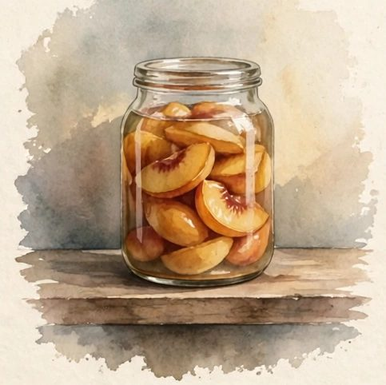
A jar of preserved fruit on a shelf, summer colour kept behind the glass.
Before the inner house can be rearranged, rested in, or honestly described, it must be stood upon, and this room is about the standing. The floor under the inner house is made of the most basic carried facts: that the carrier has a history at all, continuous and theirs, that they have survived the whole of it so far, and that the present moment is not the first room they have ever occupied. These facts are too plain to be displayed and too structural to be removed. Every other thing in the house, heavy or sustaining, is furniture arranged on this floor, and the floor is noticed mostly when a carrier doubts, briefly, that there is anything under the furniture at all.
Floors are maintained by use rather than by inspection. The carrier keeps this one sound by the ordinary act of proceeding: making the morning drink in the knowledge of all the other mornings, answering to their own name, recognising their life as one life when its chapters are laid end to end. The register warns against a particular error here, which is demanding that the floor also be a view. It is not the brightest part of the house and it does not try to be. Its virtue is that it holds. A carrier who expects every sustaining thing to also be inspiring will overlook the plain support that has been under them, unthanked, the entire time.
In the Keeper's rounds, the floor is checked the way a careful householder checks it, by walking it. Room by room, the carrier is invited to notice that the boards are there under the heaviest shelf as well as under the lightest chair, unchanged in their offer. Nothing in this entry promises that the house will never creak, or that a board will never need attention in some season. Houses that are lived in require exactly that kind of honesty. What is recorded is the standing arrangement: the past, carried within, is not a pit under the present. It is, at its most basic, the ground the present is built on, and it has held this far.
33Proof I Have Done This Before
In a discouraging season, argument is rarely what a carrier needs, and this room does not offer it. It offers something quieter and harder to dismiss: proof, from the carrier's own history, that a version of this difficulty has been met before and come through. Not triumphed over, necessarily, and not gracefully in every case. Come through. The entry might be small in the telling: a previous winter of the same kind, a previous debt, a previous goodbye at a previous station. Its smallness is part of its credibility. The register keeps these proofs in ordinary language, dated where they can be dated, with the difficulty left in at its true size.
Proof of this kind is not a prediction, and the house is precise about the difference. That a carrier managed once does not guarantee the terms of the present attempt, and the Keeper strikes out any entry that begins to sound like a promise. What the proof changes is narrower and more useful: it corrects the particular falsehood that discouragement specialises in, which is the claim that this has never been faced, that there is no precedent, that the carrier is attempting something entirely outside their own record. Against that claim, one plain remembered fact is sufficient. The precedent exists. It is in the house. It can be visited, in detail, whenever the claim is heard.
Carriers are encouraged to keep this shelf in good order before it is urgently needed, the way provisions are laid in before a journey rather than during one. Write the precedent down while it is easy to remember. Keep the letter, the date, the name of the town, the unglamorous sequence of what was actually done. In a later season, details are what make the proof usable; a vague assurance that things once improved persuades nobody, least of all the person who lived it. The Keeper's closing note for the room is modest: the proof is not there to make the present difficulty small. It is there to make the carrier, accurately, larger than the difficulty's first description of them.
34Carried Warmth in Cold Weather
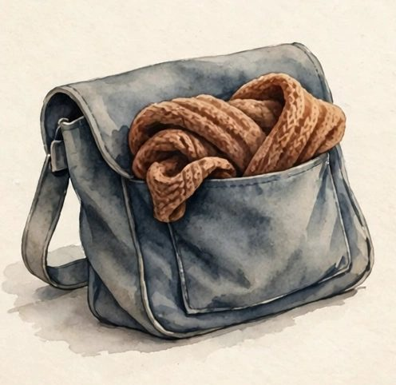
A warm scarf folded in a satchel pocket, its wool soft with years of use.
Cold weather, in the language of the inner house, is any season in which the world offers a carrier little warmth of its own: a place where they are unknown, a stretch of work without thanks, a year in which the news from every direction seems written in the same grey hand. Against such seasons the satchel holds carried warmth, and this room inventories it. There is the remembered welcome of a particular house. There is the knowledge of being, somewhere in one's history, thoroughly glad to be exactly who one was. There is, in many lives, a person whose good opinion was earned and has never been withdrawn, and whose regard can be remembered accurately on a day when no new regard is arriving.
Carried warmth is not a denial of the weather, and the Keeper is strict on the point at this desk. The carrier who takes out a warm memory in a cold season is not pretending the season is other than it is. They are dressing for it. No one accuses a traveller of dishonesty for wearing a coat brought from home, and the coat does not claim that the wind is not blowing. It simply makes the road walkable at the temperature that actually obtains. Warmth carried within works at exactly that level: practical, personal, and silent about the forecast. It neither argues with the cold nor surrenders the day's walking to it.
Like other sustaining things, warmth keeps best when it is used plainly and put away dry. The carrier is advised not to ask one remembered welcome to heat an entire winter; that is how good memories are worn out, by being made to do the work of a whole climate. Take it out for the cold stretch. Be warm in it, honestly and without apology. Then let the present, when it offers its own small warmths, as most seasons eventually do, add them to the pocket for a future road. The inventory grows that way, one true warm thing at a time, none of them exaggerated, all of them ready.
35The Compass in the Pocket
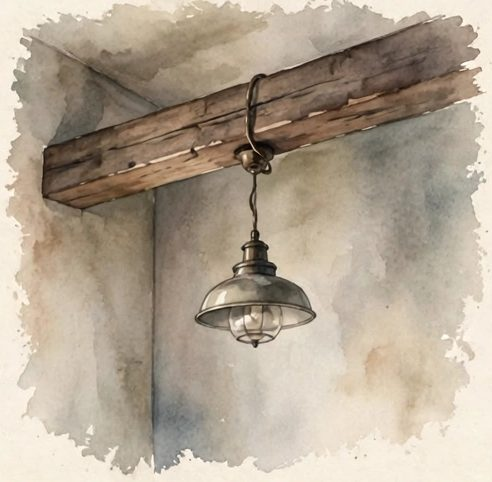
A strong beam across a small room, a lamp hanging from it in the warm dark.
A compass is not a map, and this room begins by honouring the difference. A map claims to know the country in advance. A compass makes a humbler offer: it keeps one direction available, in any country, including country the carrier has never seen. What is carried in the pocket under this heading is the carrier's own kept sense of direction, formed across the years out of choices made and corrected. It might be a standard they decided, once, never to trade away. It might be a knowledge of what kind of life they are walking toward, held loosely enough to survive detours. It is consulted, not obeyed blindly, and it travels lighter than any plan.
The Keeper notes that a carried compass is calibrated by experience rather than issued by authority. Each time a carrier chose the harder true thing over the easier false one, each time a road was left because of where it was plainly heading, the needle settled a little more reliably. This is why the compass cannot be borrowed whole from another life, however admired. Another person's direction may be described, and the description may help, but the instrument in the pocket must be one's own, its small errors known, its behaviour in strange weather familiar from use. The register records the calibration as an ongoing entry, never a completed one.
In an unfamiliar season the compass earns its pocket. The carrier takes it out not to be told where to go, since it cannot know, but to remember which way they face when they are thinking clearly. From that single recovered direction, ordinary judgment can do the rest: this step is roughly toward, that one is roughly away, and a third can wait until the light improves. Nothing grander is claimed for it in this house. A direction kept is not a destination guaranteed, and the hall sells no arrivals. It records only that carriers who know their own direction are harder to lose, even in country where every visible landmark is new.
36Sustaining Is Also Carrying
The closing room of this hall makes a correction that the whole hall has been quietly depending on. Sustaining things are sometimes spoken of as if they were not quite part of the carried past, as if the satchel's true contents were only its weights and the rest were scenery. This house disagrees in plain terms. The bread, the lantern, the warm scarf, the kind sentence, the floor itself: all of it is carried, all of it has weight of a kind, all of it takes room in the inner house and asks for the same honest housekeeping as anything heavier. Sustaining is also carrying. The sentence is short because the Keeper has found that it needs to be said exactly that plainly.
Recognising sustaining things as carried things changes the inventory in a useful way. A carrier who counts only the heavy rooms will misdescribe their own house, and may conclude that the past within them is a burden with decorations. A carrier who counts everything describes a mixed and ordinary household: some rooms hard to enter, some rooms doing quiet structural work, some pockets holding provisions for the road. Neither description is more sentimental than the other. The second is simply more accurate, and accuracy, in this house, is the form that respect for one's own history usually takes. The register is kept accordingly, all rooms in the same book, in the same hand.
The hall ends, as the heavier hall ended, without a ranking. Sustaining things are not promoted above the rest of the house, and they are not required to compensate for it. They are carried, they sustain, and on many ordinary days that is the greater part of what the past within a person is actually doing: not demanding, not glittering, simply holding the household up from inside, meal by meal and winter by winter. The Keeper closes the register for this hall and leaves the shelf as it was found, everything within reach, nothing relabelled. The carrier knows where things are. That knowledge, this house maintains, is itself one of the sustaining things.
37The People I Carry With Me
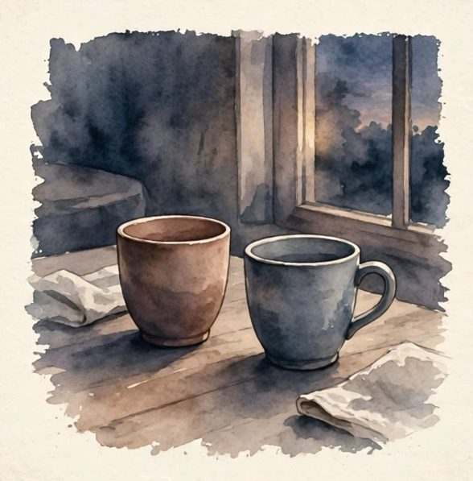
Two cups on a table, one kept ready, in evening light.
The inner house is not occupied by the carrier alone. Walk its rooms in memory and the population becomes plain: a parent at a stove, a friend on a step, a teacher by a window, people whose faces arrive before their names do and people met only once, decades ago, who took up a small room and never left it. This hall is given to them, not as exhibits and not as symbols, but as residents. The carrier did not issue most of the invitations. A shared season issued them, or a single afternoon, and the house has kept the rooms aired ever since, the way a real house keeps a chair where a habitual guest has always sat.
To carry a person within is a different motion from remembering an event, and the Keeper marks the difference carefully in the register. An event is visited. A person, carried, is accompanied by: their judgement is consulted in imagination, their humour is available at the right moment, their way of doing a thing lives in the carrier's hands. None of this requires any claim about where those people are now, or what they would say, and the house makes none. It records the residence, not a correspondence. The chair is kept, the cup is ready, and the terms of the tenancy are understood to be memory's own, honest and one-sided and sufficient.
This hall also holds a gentler truth that carriers sometimes need stated aloud at the desk. The people within are carried as they were known, which is to say partially, from one side of the table. The carrier's mother, carried, is the mother as a child and then a grown child knew her; the whole woman was larger than any single carrying of her. The house regards this not as an error but as the ordinary condition of all keeping between people. What is carried is true. It is not total. Both halves of that sentence are kept in the register, in the same size of hand, so that neither is ever quoted without the other.
38A Voice That Still Answers
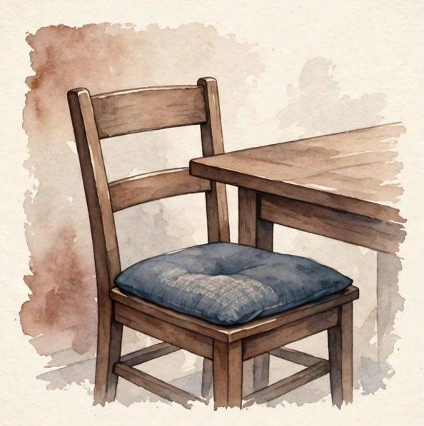
An empty chair kept at a table, a cushion on it, the place held in good order.
Among the people carried within, some are present chiefly as a voice. The face may have softened at the edges over the years, the details of dress and setting gone quiet, but the voice remains at full strength: its pitch, its patience or impatience, the sentence it can be relied upon to say when a certain kind of trouble is described. A carrier in a new difficulty hears it without summoning it, the way a tune arrives. The register files these entries under answering voices, with the understanding that the answer is memory speaking in a familiar register, and is none the less useful, or welcome, for that, in the carrier's own accounting.
What the voice usually offers is not new information. It offers the person's characteristic angle: the grandmother's priorities arriving to sort a modern confusion, the old friend's irreverence puncturing a solemn worry at exactly the joint where it needed puncturing. The carrier remains free, and often enough argues back, and the argument itself is part of the tenancy. A voice that can be disagreed with is being carried as a person. A voice that can only be obeyed has hardened into something else, and the Keeper, hearing of one, gently suggests the carrier describe it plainly at the desk, as a first step toward carrying it as a person again.
Voices kept this way change slowly across a lifetime, and the house records the change without alarm. The carried voice of a parent, heard at twenty, may sound mostly like authority. Heard at fifty, by a carrier who has since stood where the parent stood, the same voice may arrive with its uncertainties newly audible, and its old certainties softened by understanding. Nothing has been falsified in either hearing. The resident is the same; the room from which the carrier listens has moved. The Keeper counts this among the privileges of a long tenancy: that the people within can go on being learned, long after the learning was supposed to be finished.
39The Chair Kept for Someone Gone
In many inner houses there is a chair that is never given to anyone else. It stands at the table or by the window in the place a particular person used to take, and the household, without ever passing a rule about it, keeps it theirs. The chair is not a shrine and the Keeper is careful with the distinction. No offerings are made at it and no one is required to lower their voice nearby. It is furniture, kept in its accustomed place, doing the quiet work furniture does: holding a shape in the room that corresponds to a shape in the carrier's life, so that the room still makes sense when it is entered.
Keeping the chair is often misread from outside as a refusal to rearrange the house, and this room answers the misreading plainly. The carrier who keeps a chair has usually rearranged a great deal. They have learned new routes through the days, taken up new work, set new places at the table for new people, who are welcomed without the kept chair being part of the welcome's price. A house can be fully lived in and still contain one chair that is not in general circulation. The two facts stand in the register side by side, and neither is treated as evidence about the other, in keeping with the first principles of the house.
What happens to the chair across the years is left, deliberately, to each household. In some houses it is eventually drawn up to the table by a grandchild, and the moment is ordinary and right. In others it remains where it was for the whole of the carrier's tenancy, and that too is recorded without commentary. The Keeper's rounds include the chair in every house, checked like everything else: is it kept out of love, out of habit, out of a decision renewed or a decision never revisited. Any of these answers is acceptable to write down. The hall asks only that the answer, whatever it is, be the carrier's own and be true this year, not merely inherited from last.
40Hands I Can Still Describe
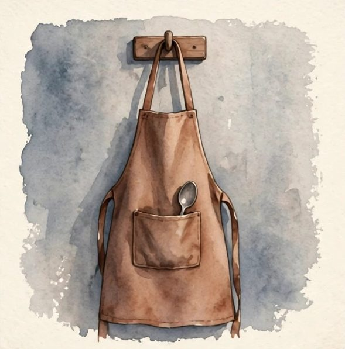
An apron hanging on a hook, its pocket holding a spoon, in kind kitchen light.
Ask a carrier to describe the hands of someone they carry, and the description often comes faster and surer than any account of the face. Hands are remembered at work, and work gives memory something exact to hold: the way flour was tested between finger and thumb, the grip on a tool, the steadiness or the tremor, the ring turned while listening. A carrier may hesitate over the colour of eyes and then describe, without pausing, how a pair of hands folded a letter or baited a hook or rested, between tasks, flat and open on a table. This room is given to that precision, which the register treats as one of memory's most honest dialects.
Hands are also where character was often most legible, and the entries here are rarely neutral. There are hands remembered for their gentleness with animals and their impatience with knots, hands that gave readily and hands that had to be asked twice and then gave double. To describe such hands plainly is to describe a person at the level where their intentions met the world, and carriers find, at this desk, that the description sometimes corrects the grander summaries they have carried elsewhere in the house. The official story says one thing about a person. The remembered hands, consulted honestly, occasionally say a truer and more complicated thing, and the register prefers them.
The hall closes by noting where these descriptions most often end: with the carrier looking at their own hands. Resemblance travels down the generations in this particular archive more faithfully than in any mirror. The same gesture, caught mid-task, the same way of holding a cup or testing a knot, arrives unbidden and is recognised as an inheritance before it is understood as one. The Keeper records such moments without ornament. A person is being carried, in the most practical sense available, in the carrier's own working hands, and is present not as an image to be visited but as a motion still in daily use. The register closes the entry there, the description complete enough for one room.
41The Teacher Who Travels With Me
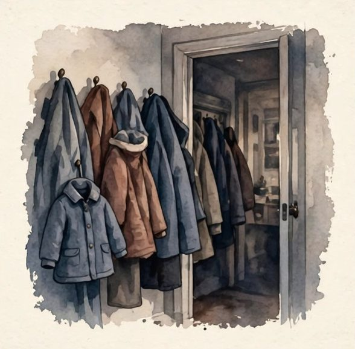
A doorway with coats of many sizes hanging along its frame, a populated house implied beyond.
A teacher can leave a classroom and still travel for decades inside a former pupil, not as a portrait on a wall but as a way of pausing before an answer. The sentence remembered may be plain, even ordinary, yet its timing returns when a difficult choice needs steadiness rather than speed. In the inner house, that presence sits near the desk where questions are sorted. It does not speak over the present or demand obedience to an old lesson. It simply keeps a standard of attention alive, reminding the carrier that careful thought was once modelled by someone who believed a young mind deserved patience, accuracy, and respect. The keeper notes it in the register, in pencil, and says nothing more.
What travels is rarely the whole curriculum. Dates and diagrams may have settled elsewhere, while a tone of voice, a habit of checking the work, or a refusal to mock an honest mistake remains close at hand. The teacher carried within is therefore not an archive of instruction but a living measure for how to treat uncertainty. When the carrier teaches another person, explains a task, or listens to a confused account, the old example quietly shapes the reply. Knowledge becomes conduct. The past is not repeated word for word; it is translated into present manners, present patience, and a present willingness to leave room for learning. It is entered in the inventory as it stands, without decoration or apology.
There is gratitude in this carrying, but not dependence. The teacher is not asked to decide a life from a distance of years, and the carrier does not pretend that every later difficulty was anticipated in that room. Instead, the figure is kept as one would keep a well made tool, used when it fits and set aside when the work has changed. On some days the memory offers courage. On others it offers correction. Both are received without ceremony. The doorway in the plate, crowded with coats of many sizes, suggests how many pupils passed through, and how one steady presence can continue travelling in many separate lives. The carrier passes that way often, and the room is the steadier for it.
42A Friend in an Inner Room
Some friendships continue inwardly long after the meetings become rare, because the friend has taken a place in the rooms where the carrier thinks and decides. Their humour may return during a tedious errand, or their blunt sentence may interrupt an exaggeration before it hardens into belief. This is not the same as imagining that the friend is present. It is the honest effect of years in which another person was allowed to know the unfinished version of a life. The inner room keeps that familiarity without requiring constant contact, and the chair there is neither shrine nor substitute, only a recognised place in the arrangement of memory. Nothing more is asked of the memory than that it be kept truthfully.
The friend carried within is allowed to remain particular. They are not reduced to encouragement, nor remembered only for the best afternoon, nor made responsible for every later rescue. The room holds their impatience as well as their loyalty, their odd preferences, the stories they told too often, and the silences that belonged to them. Such completeness protects the friendship from becoming a slogan. A real person was known, in weather fair and poor, and the carrying respects that knowledge. When advice seems to arrive in their voice, the carrier can still ask whether it is memory speaking, or hope borrowing a familiar tone. The house holds the fact quietly, the way it holds everything worth keeping.
Distance does not always diminish this room, though absence can change its light. Letters grow infrequent, cities intervene, and each life gathers new obligations, yet an old friend may still be the first person thought of when absurd news breaks or a private triumph needs witnessing. The inner room does not compete with present company. It testifies that companionship once entered deeply enough to alter the house itself. To carry a friend in this way is to admit that the self was not built alone. Other voices helped furnish it, and some of their chairs remain, rightly, where they were first pulled close to the table. That small steadiness is, in this house, considered a sufficient and honest outcome.
43Family, Carried in Several Tenses
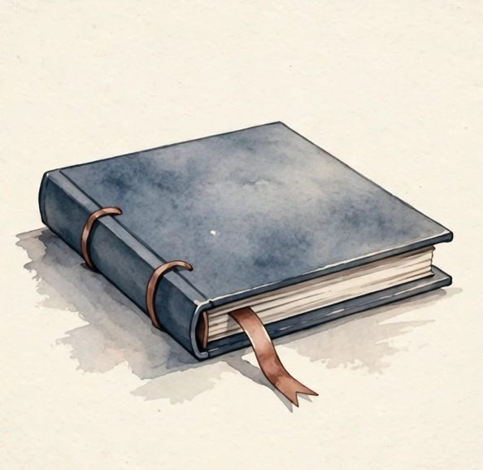
A photograph album closed on a shelf, a ribbon marking one page, no images showing.
Family is carried in several tenses at once, because the same people exist as they were, as they are, and as they were once expected to become. A parent may be remembered issuing instructions at a doorway and also pictured now, older and slower, choosing words with care. A sibling lives both in childhood quarrels and in the adult voice that telephones with practical news. The inner house does not force these versions into a single portrait. It lets them occupy adjoining rooms, sometimes open to one another, sometimes separated by a door that is closed without anger and opened when there is reason. The entry rests there, neither promoted nor hidden, in its accustomed inner place.
The closed album in the plate is a fitting emblem for this arrangement, its ribbon marking a page that is known without being displayed. Family memory often works in that way, by reference rather than constant viewing. A recipe, a warning, a turn of phrase, or a way of setting a table can summon a whole period without requiring every detail to be rehearsed. The carrier learns which pages can be visited briefly and which need time, company, or a quieter hour. Nothing is gained by pretending that all family memories carry the same weight. Some sustain the day. Some require both hands. Some are simply factual, like dates written inside a cover.
To carry family honestly is to allow change on both sides of the remembering. The people recalled were not finished when the memory formed, and neither was the person who formed it. Later knowledge may soften an old judgement or sharpen it, and either result can be truthful if it is held with care. The several tenses are therefore not a defect in the record. They are evidence that a family is a history still being interpreted by living people. The ribbon stays in the album, not to hide the page and not to advertise it, but to mark where one part of that history can be found when it is needed.
44The Stranger Who Changed the Load
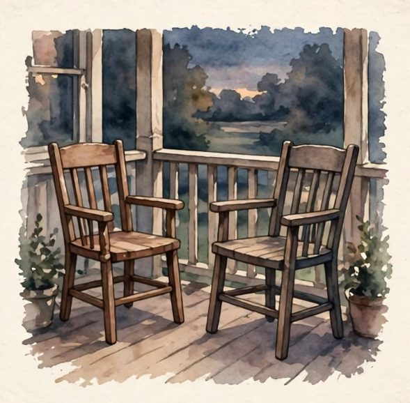
A porch in soft light, two chairs turned toward each other as if a conversation has just ended.
Now and then a stranger changes the load in a single encounter, not by taking anything away but by altering how the carrier understands its shape. A remark at a station, help offered without embarrassment, or a calm example during a confused hour can remain long after the name is forgotten. The inner house keeps such figures near the entrance, where brief meetings belong. They were not intimates and should not be promoted into more than they were. Their importance lies in timing. They appeared when an ordinary kindness, precisely because it came from outside the usual circle, could be believed without argument or obligation. The keeper leaves the door as it was found, open to the corridor.
The two chairs on the porch suggest the equality of a good brief encounter. For a few minutes, neither person is the whole story of the other. There is a shared bench, a road, a queue, a difficulty with luggage or weather, and within that narrow frame something useful passes between them. The stranger may never know that a sentence was carried for years. The carrier may never know what the stranger was carrying in return. This mutual incompleteness is part of the honesty of the room. Not every significant person is owed a biography, and not every debt of gratitude can or should be pursued across a lifetime. Such is the ordinary discipline of the room, repeated without ceremony each season.
What changes afterwards is often modest and durable. The carrier becomes more willing to accept help without treating it as defeat, or more alert to the moment when a few plain words might steady someone else. The stranger is then carried not as a miracle but as a precedent. Once, at the right hour, an unknown person behaved decently and the day altered course. That fact can travel quietly for decades, available when cynicism grows too confident. In the inventory of the inner house, the entry may be only a porch, two chairs, and a sentence remembered exactly, but its effect reaches far beyond the afternoon that produced it. The register accepts the account and closes over it with a soft sound.
45Carrying Them Is Keeping Them
To carry a person within is, in one plain sense, to keep them from vanishing out of a life entirely. The keeping is not a refusal of absence, nor an attempt to hold the past in working order. It is the maintenance of a place where their reality remains acknowledged after the meetings, letters, and shared rooms have ended. A name can still be spoken accurately. A preference can still be recalled without decoration. A story can still be told with the person as its subject rather than as a device in the teller. Such small acts of fidelity are the daily form that carrying takes when love or respect has nowhere else practical to go.
Keeping requires limits if it is to remain honest. The person carried is not available for new promises, new forgiveness, or new blame, and the carrier does damage to memory by inventing conversations that settle what life left unsettled. The inner room is therefore kept truthful. What was said is distinguished from what is wished, what was known from what was guessed, and affection is not allowed to rewrite the record into either perfection or indictment. This restraint may sound austere, but it is what allows the kept person to remain themselves. They are not improved by absence, and they are not diminished by it. They are remembered within the bounds of what a life actually contained.
The shelf in the caption is dusted, but it is not crowded with offerings. Keeping, in this house, is ordinary housekeeping rather than ceremony. The carrier returns now and then, notices what has faded, corrects a date, smiles at a detail, and goes back to the business of the present with the past neither hidden nor enthroned. That rhythm matters. A person carried within should be able to accompany a life without consuming it, as a name on an inner shelf accompanies the room without blocking the door. To keep them is to grant them a continuing place, measured carefully, inside a life that also continues. No further explanation is required, and none is attempted by anyone in residence.
The Carrying Desk
One desk receives all correspondence for this house — questions, corrections, and word of anything carried within: what weighs, what sustains, a person or a place inside, a lesson, or something set down. It is read in the order it arrives.
46They Are People, Not Lessons Only
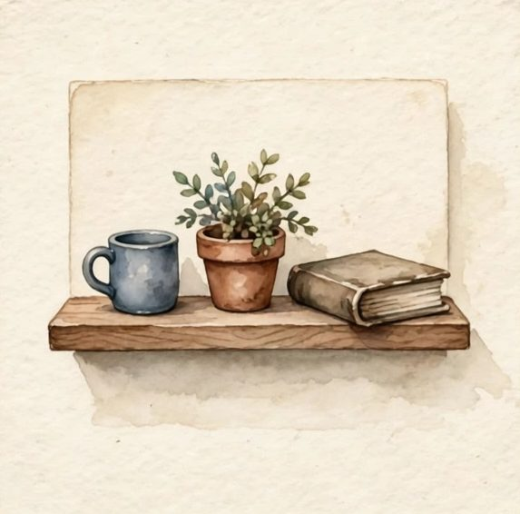
A shelf holding a mug, a small plant, and a worn book with a blank cover.
It is tempting to turn every person carried within into a lesson, as if their place in memory must be justified by what they taught. This house resists that economy. A grandmother is not only instruction in endurance, a friend is not only a chapter on loyalty, and a difficult figure is not only a warning. They were people first, with appetites, contradictions, jokes, errors, and days that had nothing to do with the carrier at all. The shelf in the plate, with its mug, plant, and worn book, keeps that ordinariness in view. A life remembered should retain the texture of a life, not be planed down into advice. The memory keeps its place, and the present day keeps its own hours.
Lessons do arise from people, and there is no need to deny them. The error begins when the lesson becomes the whole inventory entry and the person is required to stand forever beside the moral drawn from them. Memory then grows unjust in a quiet way. The generous act eclipses the tiring habits, or the failure eclipses every kindness, and the carrier begins to meet a symbol instead of a person. Keeping the whole figure is harder work, because people do not arrange themselves into tidy meanings. Yet that untidiness is exactly what makes the inner house feel inhabited rather than decorated with conclusions. It belongs in the inventory exactly there, between gratitude and plain recorded fact.
The keeper therefore asks a simple question of each entry: what was this person like when nothing was being learned. The answer may be a preference for strong tea, a hatred of lateness, a song hummed inaccurately, or a way of entering a room that changed its temperature. Such details are not trivia added for colour. They are the substance that prevents memory from becoming a court or a classroom. A lesson can be noted in the margin, in pencil, where margins belong. The page itself remains a portrait in ordinary light, of someone who existed for their own reasons and continues, within the carrier, on those terms. The carrier knows the way back to it without needing a marked path.
47Several Versions, Carried Together
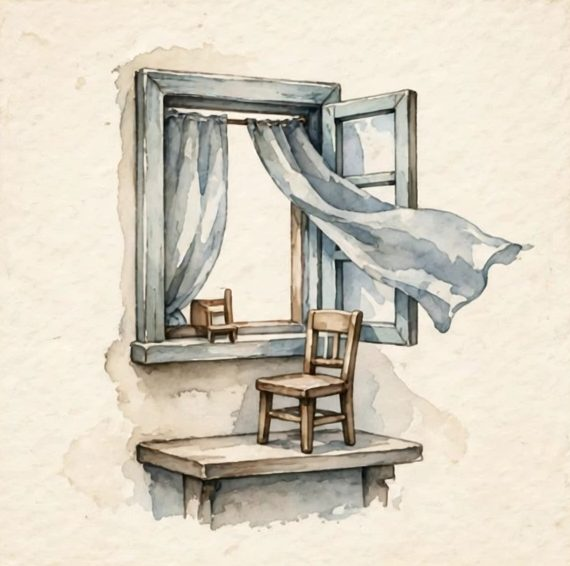
An open window with curtains moving in a light breeze, a chair set below it.
Shared years are never carried in only one version, because each person who lived them kept a different inventory. One remembers the joke and forgets the slight, another remembers the weather and the bill and the long walk home. The inner house makes room for this plurality without treating it as a defect to be corrected. Several versions can be carried together, side by side, like chairs arranged for people who will not all sit down at once. The carrier may hold their own account firmly while admitting that it is not the only honest account in existence, and that admission costs nothing except certainty. That is the whole entry, and the house considers the entry complete.
Disagreement between versions is not always a dispute about facts. Sometimes it is a difference in what mattered. A parent recalls sacrifice where a child recalls absence, and both are describing real features of the same household from different seats. The open window in the plate lets air move between such rooms. A version kept in a sealed chamber grows stale and absolute, while a version that can be aired beside others stays nearer to life. The carrier is not required to merge them into one official story. Carrying together can mean leaving the accounts distinct, labelled by whose eyes they were seen through, and resisting the urge to declare a final edition.
This practice becomes especially important as years pass and the carriers themselves change. A memory revisited at forty may not match the one defended at twenty, and the difference need not convict either age of dishonesty. Attention widens, loyalties rearrange, and details once invisible become plain. The inner house allows its entries to be revised in that light, provided the revision is owned and not disguised as what was always believed. Several versions, carried together, teach a modest discipline: to remember strongly without remembering exclusively, and to let other people keep their own rooms in the same shared past without demanding the keys. The room settles again into the quiet that suits its particular contents best.
48The Inner House Is Populated
By the end of this hall the inner house can no longer be mistaken for a solitary place. Its rooms hold teachers and friends, family in several tenses, brief strangers, and figures whose influence was larger than their time on the scene. They do not crowd the carrier or speak all at once. For the most part they keep the quiet of well kept memory, present as tendencies, standards, phrases, and affections woven into ordinary conduct. A person walking through the present day may not notice them at all, until a familiar situation opens a door and one of them is, in effect, standing there with something relevant to contribute. Nothing in the corridor changes, yet the carrier walks it slightly more steadily.
A populated inner house changes the meaning of being alone. Solitude remains solitude, and this house does not pretend otherwise, but it is solitude furnished by a history of company. The carrier has been taught, accompanied, contradicted, fed, and forgiven by real people, and those transactions leave inhabitants as well as records. Even disagreement has its residents. The figure one argues with internally for years has a room, however reluctantly granted, and honesty requires acknowledging their tenancy. The population is not chosen all at once. It accumulates, one relationship at a time, across a whole life of meetings and partings. The keeper writes the date beside it and moves on to other rooms.
The keeper keeps no census and issues no invitations on the carrier behalf. Some inhabitants fade to a name and a doorway. Others remain vivid enough to affect the shopping, the work, and the wording of letters. New people still arrive, because the house is not sealed at any age, and a late friendship can take its place beside figures carried since childhood without displacing them. The corridor in the caption, worn by many passages, is the right final image for the hall: a route walked daily, doors on either side, and behind each door a person whose reality helped make the carrier who they are. It is kept, carried, and consulted in that order, as the house prefers.
49The Places I Carry With Me
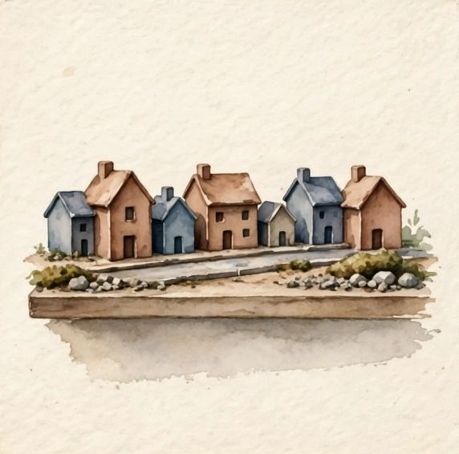
A street of small houses remembered in miniature, standing in a row on a shelf.
Places are carried as faithfully as people, and often with less warning. A street can return entire while the carrier is buttering toast in another country, complete with its slope, its shopfronts, and the exact place where the pavement narrowed. The miniature street on the shelf in the plate is an honest likeness of how such carrying works. The place has been reduced by distance to something that can be held in the mind, yet nothing essential feels small about it. Its proportions are emotional as much as architectural, and a doorway two inches high in memory can open onto years. The fact stands in the record, unadorned, and asks for nothing further today.
To carry a place is to keep a set of directions that the body still knows. The feet remember the turn before the mind names it, the shoulders remember the wind on a particular corner, and the ear retains the distance between a gate and a bell. Such knowledge survives changes of address because it was learned by repetition rather than by study. A person may forget the official history of a town and still know precisely where the light fell at four in the afternoon, which bench faced the water, and how the bakery smell announced the last street before home. The inner house files these facts under living, not geography.
Not every carried place can still be visited, and some that can be visited no longer match the version kept within. The house treats that difference without alarm. The carried place is not a claim about the present condition of bricks and roads. It is a record of where a life happened, preserved at the scale memory can manage. When the real street and the miniature diverge, both may be acknowledged: one walked by strangers now, the other still walked nightly by the person who grew there. The shelf holds the row of houses in good order, and the carrier passes it daily, neither surprised nor detained, simply aware of where they have been.
50A Street I Walk Without Leaving
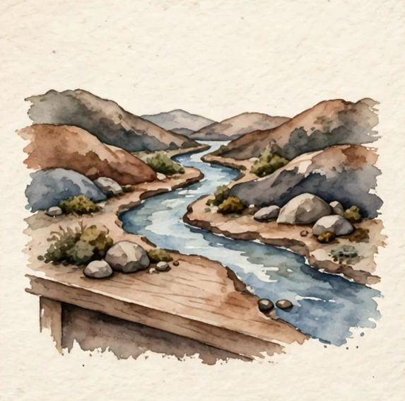
A river in miniature winding between small model hills across a table.
There is a street the carrier can walk from beginning to end without leaving a chair, and the walk is not an idle invention. It proceeds at the old pace, past the gate that stuck, the wall where messages were chalked, the shop whose window changed with the seasons, and the corner where everyone slowed without agreeing to. Each landmark arrives in sequence because the body once learned the sequence by heart. To walk it inwardly is to discover how much of a life was stored in pavements. Whole conversations seem to wait at their proper addresses, ready to resume for a sentence or two before the walker moves on. Such entries are the furniture of the place, plain, useful, and long kept.
The plate shows a river rather than a street, winding in miniature between model hills, and the substitution is apt. A remembered street behaves like water in the mind, finding its old course whenever attention loosens. It flows past present errands, sometimes so quietly that only a colour or a gradient is noticed, sometimes strongly enough to carry the walker out of the current room altogether. The house does not forbid these walks. It asks only that they be recognised as walks, taken by choice or by drift, and ended by returning attention to the street actually underfoot, where the present day is also entitled to be lived. The carrier returns to the present errand with the memory riding quietly along.
Walking the inner street has its uses beyond pleasure. It can restore proportion when the present feels narrow, reminding the carrier that they have lived in more than one arrangement of the world and can therefore imagine another. It can also rehearse gratitude, or grief, or simple recognition, depending on which houses the walker pauses beside. No conclusion is required at the end of the route. Some walks are taken the way a hand runs along a familiar banister, for steadiness rather than destination. The street remains available, entire and unhurried, and the chair by the window, when the walk is over, is still the chair in the present room. That is how such things are held here, carefully and without any display.
51The Room Where I Grew Up, Inside
The room where a person grew up is rarely lost, even when the building has been altered or demolished, because its dimensions were learned at the age when the world was measured from a bed. Its window faced a particular piece of sky. Its door made a particular sound. The distance from pillow to light switch was known in the dark, and the floor could be crossed without thought. Carried within, the room keeps that early scale. The adult who revisits it in memory is often surprised by how small it has become, and then by how much of a life was nonetheless begun inside so modest a rectangle. The house makes no comment, which in this house is a form of respect.
What the room holds is not only furniture. It holds the first privacy and the first lack of it, the sounds of the household arriving through walls, the weather of adult voices rising or settling beyond the door. A child learns the geography of safety in such a room, and also its limits: where to play, where to listen, where to hide a treasured object from general circulation. These lessons stay in the carried version long after the objects are gone. The bedside table in the caption, with its glass of water and folded blanket, stands for that nightly sufficiency, the small provision made for a person still becoming themselves. The page dries, the pencil rests, and the room keeps its settled order.
Returning to the room inwardly is not a wish to be a child again, and the house is careful to keep the two apart. The visit is an inspection of foundations. From that room the carrier first watched the world, formed its earliest map, and learned which distances could be trusted. To know the room is still carried is to know where the map began. The grown life may extend across cities and decades, with rooms far larger and better lit, yet the first one persists underneath them all, not as a rival and not as a regret, but as the original measure against which every later doorway is quietly compared. It is enough for one entry, and the keeper has always thought so.
52A River Carried in the Chest
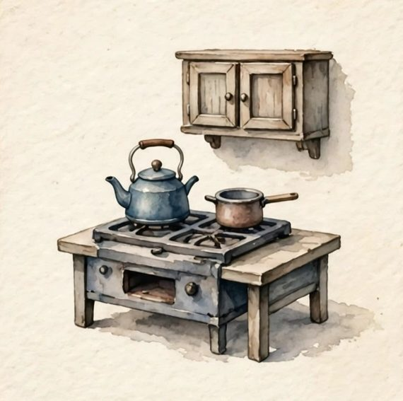
A kitchen in miniature on a table, a tiny kettle resting on its small stove.
A river, once known well, is carried in the chest rather than in the eyes. Its movement becomes a standard against which other motions are felt: traffic, weather, the pace of a working day. The carrier may live far from any bank and still know, bodily, how that water behaved after rain, where it ran shallow over stones, and which bend held the deep and slower water. The memory is less a picture than a rhythm. It surfaces when the breath needs slowing or when a present landscape seems too still, and it restores, for a moment, the sense of travelling without leaving. The inventory is richer for it, though no announcement is ever made.
The plate, curiously, shows a miniature kitchen with a kettle on its stove, and the pairing belongs in this hall. In the inner house, carried places are shelved by association rather than by category, and the river of a childhood may well sit beside the kitchen that stood near its bank. The kettle sings, the water outside moves, and the two sounds keep each other in memory. Such neighbours are not errors in the inventory. They are how places actually survive, entangled with the rooms, meals, and voices that gave them meaning. A river carried alone would be geography. A river carried with its kitchen is a home. The carrier closes the inner door softly and goes on with the day.
The chest is a good vessel for a river because both are governed by tides of attention. On most days the water runs low and unnoticed, a background current beneath the errands. On others it rises without permission, bringing the smell of wet stone and the exact green of a far bank into an unrelated afternoon. The house advises no resistance to these risings and no ceremony either. Let the river pass through its remembered course. Note the bend, the shallows, the deep place. Then let the level settle again, as rivers and carriers both do, each continuing in its own direction while remaining, unmistakably, in contact. The keeper notes it in the register, in pencil, and says nothing more.
53The Kitchen That Travels With Me
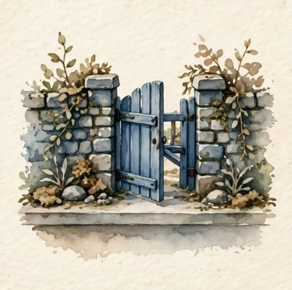
A blue gate set in a garden wall, standing slightly open in quiet light.
Every carried house seems to contain one kitchen that travels better than the rest, and it is seldom the largest or the best equipped. It is the one where the carrier learned what a household sounded like at full work: water running, lids lifting, someone calling a question from the doorway. Its table bore the marks of many years, and its window steamed in cold weather until the garden beyond became a rumour. Carried within, that kitchen reassembles instantly around a smell. A particular soup, a scorched pan, a herb crushed between fingers, and the room is standing again, complete with its arrangement of chairs. It is entered in the inventory as it stands, without decoration or apology.
The kitchen travels because so much of life was transacted there that it became a portable definition of home. News was received at its table, decisions were postponed until after its meals, and apologies were often made while washing its dishes, when hands were busy and eyes could rest elsewhere. The carrier, setting up in a new place, reproduces its habits without deciding to: the knives kept in the same order, the same chair offered to a guest, the same conviction that serious talk goes better with something warm nearby. In that sense the old kitchen is not remembered. It is practised, daily, in rooms it never saw. The carrier passes that way often, and the room is the steadier for it.
The blue gate in the plate opens from such a kitchen garden, and it is a fair emblem for the way the room travels. The gate was never locked against the carrier, and its colour remained findable across every later landscape. To pass through it inwardly is to enter the working heart of the carried house, where nourishment and conversation were prepared together. The keeper notes that visitors linger longest in this room, not from hunger alone but from recognition. Almost everyone carries a kitchen. Almost everyone, standing in its remembered doorway, understands at once why some places refuse to be left behind, and why they do not need to be. Nothing more is asked of the memory than that it be kept truthfully.
54A Town I No Longer Live In
A town no longer lived in occupies a peculiar tense in the inner house. It is neither past nor present in the simple sense, because it continues without the carrier, changing its shops, repainting its doors, and raising children who will carry entirely different versions of the same streets. The carried town, by contrast, stopped changing at the moment of departure, though the carrier did not notice the freezing at the time. Only years later, hearing news from there, does the difference become plain. Two towns now exist with one name, and honesty consists in knowing which of them a given memory belongs to. The house holds the fact quietly, the way it holds everything worth keeping.
Leaving did not cancel citizenship of the inner kind. The carrier still knows which hill the weather arrives over, which café tolerated long mornings, and where the town goes quiet on a Sunday. Such knowledge can feel like a credential no authority will ever check, and also like a key to a building whose locks have been changed. Both feelings are allowed in this hall. The house does not grade departures or returns. It simply keeps the carried town in good order, its streets swept by attention now and then, its names pronounced correctly, its seasons allowed to turn in the order they always turned. That small steadiness is, in this house, considered a sufficient and honest outcome.
News from the real town is received here with a double attention. A demolished landmark is mourned in the carried version, where it still stands, and acknowledged in the present one, where it does not. A new building is imagined with difficulty, like a word in a familiar language spelled in an unfamiliar hand. The keeper suggests that this doubleness is not a failure of adaptation but the normal condition of anyone who has lived fully in more than one place. The bench in the caption, waiting under a blank timetable, belongs to both towns at once: the one departed from, and the one that, inwardly, has never quite been left. The entry rests there, neither promoted nor hidden, in its accustomed inner place.
55Windows I Still Look Out Of
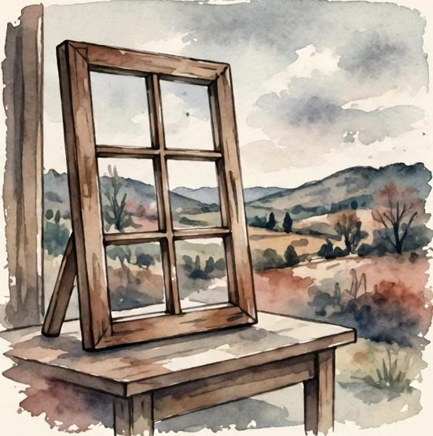
A window frame standing on a table, a quiet landscape showing beyond it.
Certain windows remain in use long after the carrier has moved away from the rooms behind them. A kitchen window over a sink, where the street was surveyed through steam. A bedroom window that framed one tree and a portion of roof. An office window on an upper floor, where weather arrived before it reached the street. Each carried window preserves not only a view but a posture: the elbows on the sill, the forehead near the glass, the habit of looking out while thinking of something else entirely. To remember the window is to resume, briefly, the outlook of the person who once stood there daily. The keeper leaves the door as it was found, open to the corridor.
The frame standing on the table in the plate, with a landscape showing beyond it, captures the strangeness of these survivals. Detached from any wall, the window still works. The carrier looks through it and sees the view in its remembered season, with the remembered neighbour crossing, the remembered washing on the line, the light at its accustomed angle. This is not a claim that the view persists unchanged in the world. It is a recognition that some vantage points become permanent instruments of thought. Long after the house is sold, a person may still consult the world from a sill that exists only within, and find the consultation useful. Such is the ordinary discipline of the room, repeated without ceremony each season.
Windows are the honest apertures of the carried house, because they admit that every view is framed. What the carrier saw from that sill was shaped by its height, its direction, and the hour at which they usually stood there. Other windows in other rooms showed other towns. Remembering this keeps the inner map modest. No single outlook was the whole place, and the view most loved was still a portion. The keeper therefore keeps the carried windows clean, as a discipline rather than a chore: glass clear, frame acknowledged, landscape allowed to be exactly as large as it was, and no larger, in the life that was lived behind it. The register accepts the account and closes over it with a soft sound.
56The Road Between Then and Now
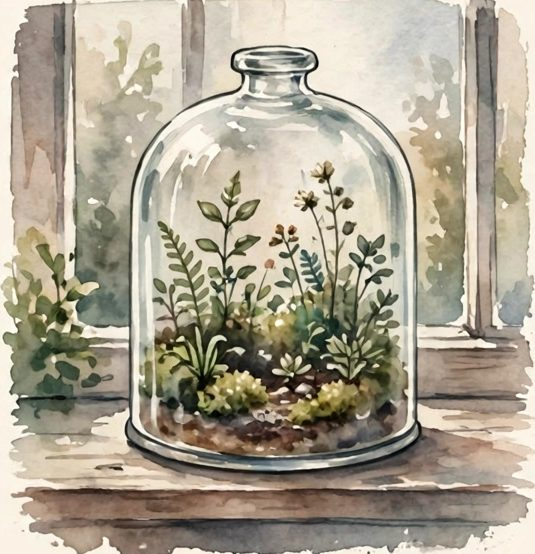
A garden held inside a glass jar, green and in season on a windowsill.
Between then and now there is a road, and the carrier has walked it in one direction only, though memory walks it back whenever it pleases. The road is paved with ordinary days more than with events. Its milestones are addresses, employments, illnesses survived, friendships begun, and the slow alteration of the walker own face in mirrors along the way. Looking back down it, the carrier can sometimes see the whole route and sometimes only the last bend, depending on the weather of the present. The house keeps the road in repair by the simple method of telling the truth about distances: some stretches were longer than they felt, and some were crossed in a single season.
The glass garden in the plate, green and in season on its sill, is a small model of what the road preserves. Along the way, certain stretches have stayed in permanent season within the carrier, neither advancing nor fading, kept at the exact green of the year they were lived. Other stretches have gone to seed or been built over by later life. Both conditions are normal along any long road. The error would be to demand uniform preservation, as if a life were a park maintained by staff. The carrier is the only staff the road has ever had, and the keeping has been done in spare hours, with imperfect tools, across decades.
What matters most about the road is that it joins the two ends of a life into one property. Then is not a foreign country requiring a passport, and now is not a summit from which then is pitied. They are connected by a route the carrier personally travelled, at walking pace, and can still describe stage by stage. On difficult days that continuity is itself a form of shelter: the person who managed those earlier miles is demonstrably the person standing here. The road does not promise where the next bend leads. It testifies, quietly and in full, to how much ground has already been honestly covered. No further explanation is required, and none is attempted by anyone in residence.
57A Garden Kept in Season Inside
Some gardens are carried entire, kept in season inside long after the carrier has surrendered the keys to the real one. Their beds open in the right order, the early flowers before the tall ones, the herbs ready in their accustomed week. Nothing in the inner garden is eaten by weather or neglected by a holiday. It exists at the moment of best attention, which is usually how gardens are loved anyway: not in their mud and failure, though those were real, but in the standing image of themselves at full intention. The carrier visits it in winter especially, when the present ground is hard and the inner beds are already green.
Keeping a garden in season is nevertheless a practice, not a spell. The inner beds are maintained by the same acts that maintained the outer ones, translated: attention, sequence, and the willingness to return. A smell of rain on soil can set the carrier weeding in memory for a quarter of an hour. A seed catalogue can reopen the whole plan. The watering can in the caption, resting beside its row of pots, suggests the scale of the work honestly. It is not the landscaping of an estate. It is the daily care of a modest plot by someone who knows that small ground, faithfully kept, feeds more of a life than acreage ever did.
The garden also teaches the carried house one of its gentler doctrines, which is that keeping something in season is not the same as keeping it forever unchanged. Even in memory, the beds are replanted. A corner once given to one planting is given, in later remembering, to another, and the gardener in the carrier accepts the revision as part of tending rather than as betrayal of the original plan. What stays constant is the care itself, and the shape of the plot, and the knowledge of where the sun arrives first. The garden persists because it is worked, inwardly, by hands that still remember exactly how. The memory keeps its place, and the present day keeps its own hours.
58Places That Exist Only in Carriers
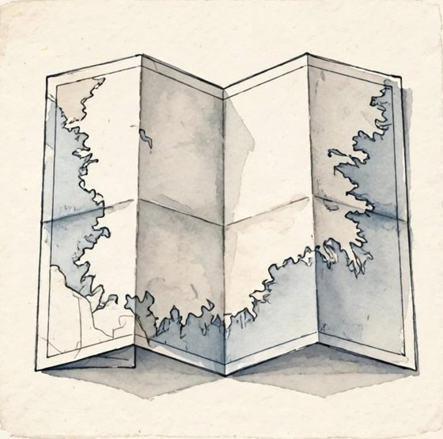
A folded road map showing coastlines only, its creases soft with use.
Some places now exist only in the people who carry them, the building gone, the street renamed, the field built over, the café replaced twice since. Their entire remaining geography is distributed among a few memories, no two of which agree in every detail. One carrier keeps the doorway, another the smell of the stairs, a third the exact wording of a notice beside the till. The place survives the way a language survives in its last speakers, partially and in good faith, with each keeper holding a province of it and none holding the whole map. The folded chart in the plate, showing coastlines only, is the right portrait of such a place: outline certain, interior entrusted to memory.
This condition is more common than the house first supposed. Demolition is only one of its causes. A school exists in its former pupils after the school itself has become offices. A holiday shore exists in one family album after the family has scattered across three countries. Even an unchanged place may exist only in carriers if its meaning was private: the corner where a promise was made looks ordinary to everyone now crossing it. The inner house therefore treats its carriers as archives of last resort, and asks them, when they meet, to compare maps without quarrelling over the coastline. Agreement is welcome. It is not required for the place to be real in the way that matters here.
There is a responsibility in being the last address of a place, and the keeper states it plainly. Describe it accurately while it is still describable. Name its streets if streets it had, its distances, its ordinary hours, and resist improving it into legend. A carried place dies a second time when its carriers begin to decorate it beyond recognition. Kept plainly, it can be handed on, at least in outline, to someone who never stood there, who will then carry a coastline of their own imagining. That is how the map in the plate outlasts its paper: by being unfolded, studied, refolded along the same soft creases, and passed on with its blank interior honestly acknowledged.
59Carrying a Place Is Not Refusing to Leave
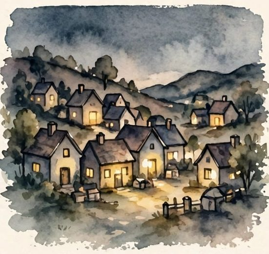
A village in miniature at dusk, its small windows lit along a quiet street.
A misunderstanding follows carried places, and this hall corrects it directly: to carry a place is not to refuse to leave it. The carrier did leave. The bags were packed, the keys returned, the last look taken from the gate, and the life since then has been lived elsewhere in full, with new streets learned and new loyalties formed. The miniature village in the plate, its windows lit at dusk, sits on a shelf in the present home. It does not stand in the doorway demanding a return. It occupies the modest space that kept things occupy, and it is visited in the evenings of the mind without disturbing the address on the letters.
Leaving and keeping are only opposites in a cruder arithmetic than this house uses. In the arithmetic of a life, a place can be fully departed and faithfully retained at once, because the two acts belong to different ledgers: one to geography, the other to gratitude and fact. The carrier owes the new place their presence, their taxes of attention, their willingness to learn its weather. None of that is diminished by the shelf at home holding an older street in miniature. Indeed, people who have carried one place well often settle more honestly in the next, knowing that arrival, like departure, will one day be a thing they do for real and remember exactly.
The keeper is firm with visitors who tease a carrier about living in the past. The evidence does not support the charge. The carrier living in the past does not learn the new bus routes, plant the new garden, or argue about the new roof. The carrier who simply carries a place does all of these, and then, at dusk, may spend a quiet minute with the lit windows of the miniature before turning back to the evening. That minute is not a defection. It is an acknowledgment, priced honestly and paid in full, that a life is larger than its current location, and that having left a place well is one of the ways a person learns to be somewhere entirely.
60The Inner Map Is Hand-Drawn
The map of the carried places is hand drawn, and it makes no apology for its methods. Distances on it are measured in importance as often as in miles, so the childhood street runs longer than a later city, and a single garden occupies more paper than an entire district lived in briefly and without love. Sketched coastlines wander where the carrier never walked, and whole regions are marked only with a smell, a colour, or the name of the person who lived there. No surveyor would pass it. No stranger could navigate by it. It was never made for strangers. It is the working chart of one life, drawn by the only person who travelled all of it.
A hand drawn map has virtues that a printed one cannot offer. It can be corrected in the margin when a returned visit changes a remembered distance. It can hold two versions of the same town in overlapping pencil, the one departed and the one still standing. It can leave a region honestly blank, with no invention rushed in to fill the space. The pencil beside the plain sheet in the caption is therefore the emblem of this whole hall: the map is unfinished, and will remain unfinished, because the carrier is still travelling and still revising. Its authority comes not from precision but from provenance. Every line on it was earned by going there, in body or in years.
At the close of the hall, the keeper folds the map once and places it where such things are kept, between the people and the lessons, in the middle of the inner house. From here the tour turns inward to what the carried past taught, and the map will be needed there too, because every lesson has an address. For now it is enough to know that the geography is complete in the only sense that matters: no place that formed the carrier has been struck from the record, and no place has been promoted beyond its truth. The houses stand in their rows. The river runs. The gates open. The map, hand drawn and heavily used, holds them all.
The Carrying Desk
One desk receives all correspondence for this house — questions, corrections, and word of anything carried within: what weighs, what sustains, a person or a place inside, a lesson, or something set down. It is read in the order it arrives.
61What the Carried Past Taught Me
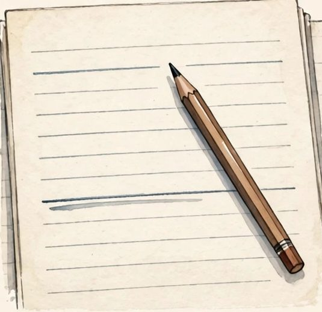
A pencil and a ruled page on a wooden table, one line underlined, no words readable.
The lessons in this house are not written on a wall for visitors to copy down. They are carried the way a pencil line is carried on a ruled page, one mark among many, useful because it was made by a particular hand at a particular hour. The Keeper of the Carried Past keeps no syllabus for other lives. What the carried past taught one carrier belongs first to that carrier, in the order it was learned, and it loses something honest whenever it is lifted out of its years and offered as a rule for everyone. The register leaves room beside such entries, because a carrier's understanding often arrives later, in quieter weeks, and deserves a place to be written without disturbing what was first recorded there.
Still, a lesson carried long enough becomes quiet knowledge rather than an event. The sharp part of the learning fades, and what remains is a steadier way of entering a room, answering a letter, or judging a risk. The carrier may no longer remember the afternoon the lesson arrived, only that they now pause where they once rushed, or speak where they once stayed silent. The house records this without surprise. Much of what the past teaches is taught by repetition, and repetition rarely leaves a single date to point to. That slowness is not treated as delay in this house, but as the ordinary pace at which carried things reveal what they are and what they ask of the person carrying them.
At the Carrying Desk, lessons are therefore entered in pencil, like everything else in the inventory. A lesson may be true and still be incomplete. It may serve for a decade and then need revising when the carrier changes. The Keeper asks only that it be described plainly, with its price remembered and its limits noted. A lesson held in that way stays useful. It does not harden into a verdict on the whole past, and it does not pretend to settle what the next year may still have to teach. In the evening the Keeper reads the entry once more, not to improve its wording, but to confirm that it still says what the carrier meant when they brought it forward.
62A Lesson in the Side Pocket
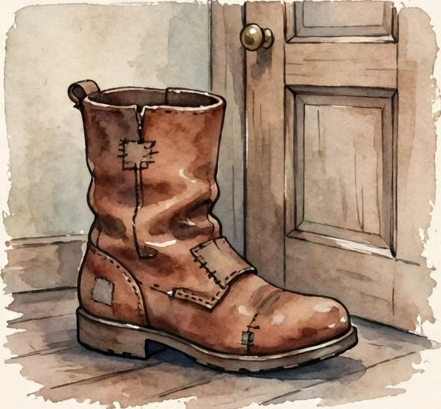
A repaired boot standing ready by a door, its stitching neat, its leather worn and cared for.
Some lessons are not kept on the main shelf at all. They travel in the side pocket of the satchel, small and close to the hand, the way a repaired boot is kept ready by the door rather than stored away in a chest. The boot has been mended where it split, and the mending is visible, and that visibility is part of its usefulness. It does not pretend the road was easy. It simply stands ready for the next road, altered by the last one. Such entries are seldom revisited in haste, and when they are revisited, the carrier usually finds the wording plain enough to trust and the feeling behind it easier to name.
A side pocket lesson is usually practical in shape. Check the weather before promising the journey. Ask the second question before signing the paper. Rest before the hill, not only after it. Such lessons are rarely grand, and the house values them for exactly that reason. They can be reached without unpacking the whole satchel, in the middle of an ordinary day, when there is no time to consult the larger rooms. The hand finds them by habit, the way it finds a familiar key. The house asks for no more than that honesty, repeated over years, until the description and the thing described rest comfortably beside each other in the same quiet room. The note stands as it was made, and the house keeps it without further comment.
The Keeper notes that a pocket has limited room, and that limit is a kindness. Only a few lessons can travel so close, and the carrier must choose them honestly. When a new lesson earns the pocket, an older one may move to a shelf, not discarded, only kept at a different distance. The inventory records the move without ceremony. Carrying well, in this house, is often a matter of placement, of knowing which knowledge needs to be at the hand and which can wait quietly until it is called for. A visitor who lingers here often notices how little is performed, and how much is simply kept in good order, dusted in passing, and left ready for ordinary use.
63Learned Once, Used for Years
There are lessons that needed to be learned only once, because the learning was complete the first time it was lived through. The hand that touched the hot latch does not need a second demonstration. The carrier who once spoke carelessly and watched the cost arrive in another person's face does not need to repeat the experiment to believe its result. Such knowledge settles early and stays settled, and the inner door it guards opens and closes afterward without sticking, bright at the point of touch. The Keeper would call that a working arrangement rather than a conclusion, since a carried past goes on living alongside its carrier and changes its emphasis as the years change theirs.
Used for years does not mean used loudly. A lesson of this kind often works in silence, preventing the errand that would have caused the trouble, so that nothing dramatic happens to prove it is still there. The carrier simply takes the other path, asks the plainer question, or leaves the sentence unsaid, and the day proceeds without incident. The Keeper remarks that the best carried lessons can look, from outside, like nothing at all, because their work is the trouble that quietly never occurs. Nothing in the entry is underlined for effect, because emphasis belongs to the carrier, who knows where the weight of the sentence falls in their own particular history. The note stands as it was made, and the house keeps it without further comment.
It is tempting to doubt a lesson that has not been tested lately, and the house advises against retesting it for reassurance. Some knowledge is kept best by trusting the original entry in the inventory. The carrier learned it at full price once, and the record stands. To reopen the question merely to feel certain would be a waste of a life that has other rooms to tend. The lesson remains in its place, neither boasted of nor apologised for, doing its small work year after ordinary year. Over time a description kept in that spirit becomes easier to carry itself, lighter not because its facts have shrunk, but because its words no longer need to be defended.
64The Expensive Lesson, Kept
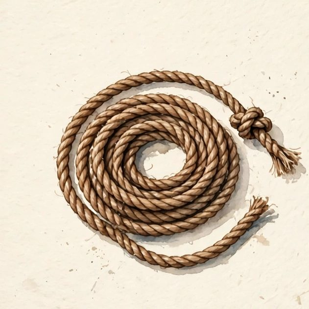
A knot untied and laid in a neat coil of rope on a table, its ends even.
Every inventory in this house holds at least one lesson that cost more than the carrier would ever have agreed to pay in advance. It arrived through a loss, a mistake, or a trust placed where trust was not returned, and its price is part of its description. The Keeper does not soften that entry. A rope that was once knotted tight and has been worked loose, coil by coil, is kept in a neat coil afterward, not hidden. The untying took time, and the coil remembers the shape of the work. That is why the pencil is never hurried here, and why the register is closed only when the light has gone and the room has had its full, unforced say.
Kept is the important word in this room. An expensive lesson can be resented so steadily that it is carried like a grievance, or it can be kept the way this house keeps anything costly, with care and without display. Kept means its fact is admitted, its price is not rewritten lower to make the story easier, and its teaching is allowed to be used without the whole event being retold each time. The carrier owes no audience the full account in order to use what was learned from it. The register leaves room beside such entries, because a carrier's understanding often arrives later, in quieter weeks, and deserves a place to be written without disturbing what was first recorded there.
The house is plain that an expensive lesson does not ennoble the expense. Nothing in the inventory claims the cost was worth it, or that it was sent for a reason, or that another carrier should seek the same road. It says only that the lesson exists, that it was paid for, and that discarding it carelessly would waste the one part of the transaction that can still serve. So it stays, coiled and even, on its shelf, neither treasured nor cursed, simply kept. That slowness is not treated as delay in this house, but as the ordinary pace at which carried things reveal what they are and what they ask of the person carrying them.
65What I No Longer Need to Relearn
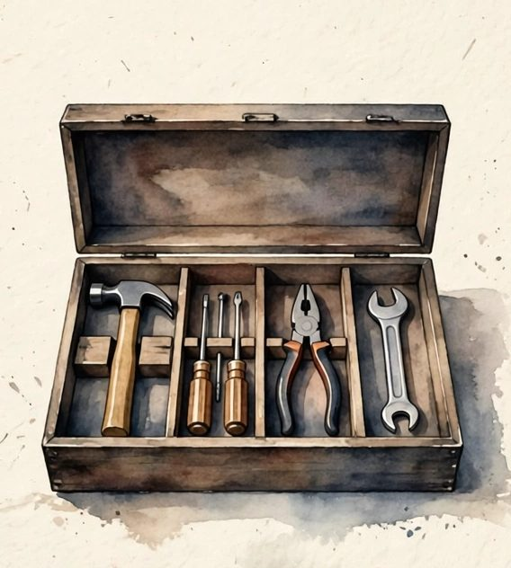
An open toolbox on a workbench, each tool resting in its own place, in kind light.
A toolbox kept in order tells a quiet story about its owner. Each tool rests where the hand expects it, not because the owner is tidy by nature, but because the search has been done too many times already and does not need doing again. So it is with certain lessons in the carried past. The carrier knows which promises they cannot keep, which rooms they should not enter tired, which old argument will produce the same result at the same cost. The knowledge is placed, and it stays placed. In the evening the Keeper reads the entry once more, not to improve its wording, but to confirm that it still says what the carrier meant when they brought it forward.
No longer needing to relearn is not the same as having become incapable of error. The carrier will still misjudge new ground, still meet situations the old tools do not fit, still add entries to the inventory. What has ended is only the repetition of the same lesson at the same price. The house considers that ending a modest and genuine form of progress, measurable not by a transformed life but by a shorter list of identical mistakes, noticed honestly over the years and recorded without pride. Such entries are seldom revisited in haste, and when they are revisited, the carrier usually finds the wording plain enough to trust and the feeling behind it easier to name.
At the Carrying Desk, such lessons are marked with a small, unemphatic note: learned, in use. They are not retired, because their work continues daily, and they are not celebrated, because celebration would make them heavier than they need to be. The carrier picks up the right tool without thinking and puts it back without thinking, and that ease is the whole evidence. Some part of the past, at least, has been carried long enough to become skill, and skill asks for very little attention in return. The house asks for no more than that honesty, repeated over years, until the description and the thing described rest comfortably beside each other in the same quiet room.
66A Warning Carried Lightly
Not every warning in the satchel deserves a heavy frame. Some are best carried lightly, the way a gardener ties a small flag where the path turns or the ground dips, a marker meant to be noticed in passing rather than feared at a distance. The carrier who has learned where a particular road becomes difficult does not need to dread the road. They need only the flag, placed honestly, and the habit of glancing at it when the turning comes into view again. A visitor who lingers here often notices how little is performed, and how much is simply kept in good order, dusted in passing, and left ready for ordinary use. The note stands as it was made, and the house keeps it without further comment.
Carried lightly is not carried carelessly. A light warning still has to be accurate, and the Keeper checks these entries with particular care. A warning that has grown larger than its fact will slow every journey and eventually be ignored, and a warning shrunk smaller than its fact is no warning at all. The inventory therefore keeps the wording plain: here, in these conditions, this tended to happen. Nothing is added for effect. The flag stays the size of the dip in the path it marks. The Keeper would call that a working arrangement rather than a conclusion, since a carried past goes on living alongside its carrier and changes its emphasis as the years change theirs.
There are seasons when the warning is not needed at all, because the carrier is walking other roads. It travels anyway, taking almost no room, asking almost nothing. That is the arrangement this house prefers for knowledge of this kind. It should be present without being prominent, available without being obeyed like a law, and quiet enough that the carrier can still enjoy the walk. A past that warns well does not shout from the satchel. It clears its throat, once, at the turning. Nothing in the entry is underlined for effect, because emphasis belongs to the carrier, who knows where the weight of the sentence falls in their own particular history. The note stands as it was made, and the house keeps it without further comment.
67Skill, Scar, and Distinction
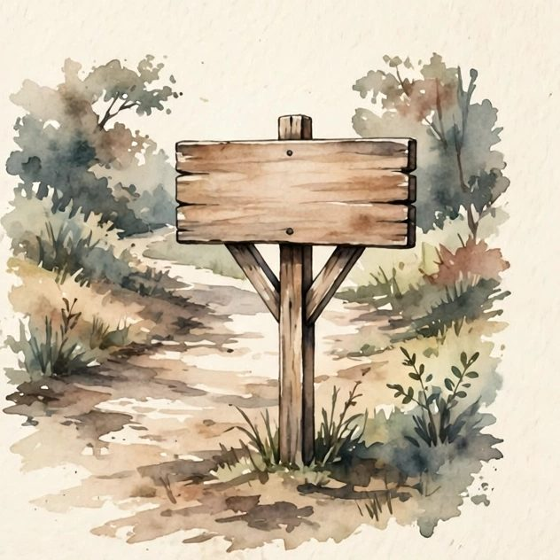
A blank wooden signpost standing where a path divides, its arms clean and unmarked.
Where a path divides, a signpost that carries no words can still do honest work, simply by standing at the place where a choice must be made. This room of the house stands at a similar division, between three things the carried past often mixes together. There is the skill, which can be used. There is the mark left by learning it, which can be described. And there is the distinction between the two, which keeps either one from being mistaken for the other in the inventory. Over time a description kept in that spirit becomes easier to carry itself, lighter not because its facts have shrunk, but because its words no longer need to be defended.
A skill is forward looking in the plainest sense. It belongs to the hands and the judgement, and it improves with use, and it can be lent to another person by teaching. The mark left behind is backward looking. It belongs to the record, and it does not improve or worsen with use, and it cannot be lent at all. Confusing them causes quiet trouble. A carrier who treats every mark as a skill expects usefulness from what can only be witnessed, and a carrier who treats every skill as a mark forgets it can still serve. That is why the pencil is never hurried here, and why the register is closed only when the light has gone and the room has had its full, unforced say.
The Keeper keeps the distinction without making a doctrine of it. In the inventory the two are entered in different columns, in the same pencil, with the same respect. The skill is carried where it can be reached. The mark is carried where it can be seen when the carrier chooses to look. Neither is ranked above the other, and neither is asked to explain the other. A life, the house notes, is long enough to hold both, and clear enough, on a good day, to know which is which. The register leaves room beside such entries, because a carrier's understanding often arrives later, in quieter weeks, and deserves a place to be written without disturbing what was first recorded there.
68Lessons Are Not the Whole Load
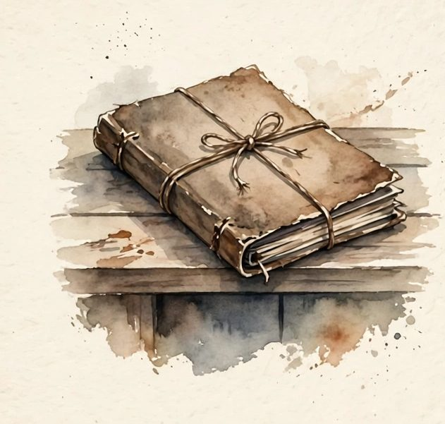
A well-worn notebook tied with string, resting on a shelf among plain jars.
A notebook tied with string can hold a great deal, but nobody would mistake it for the whole shelf. The jars beside it hold other things, kept for other reasons, and some of them hold nothing useful at all by any practical measure. This room states the same proportion for the carried past. Lessons are a real part of what a carrier carries, and an honoured part, but they are not the whole load, and the house resists any inventory that pretends otherwise for the sake of neatness. That slowness is not treated as delay in this house, but as the ordinary pace at which carried things reveal what they are and what they ask of the person carrying them.
A life carried within also holds people who taught nothing in particular and are missed anyway, places that offered no instruction and are loved anyway, and glad hours whose only value was that they were glad. If every entry had to justify itself as a lesson, half the inner house would be emptied by an accountant's logic the doctrine does not recognise. The Keeper therefore leaves wide margins in this section of the register. Some things are entered simply as carried, with no teaching extracted and none required. In the evening the Keeper reads the entry once more, not to improve its wording, but to confirm that it still says what the carrier meant when they brought it forward.
This restraint protects the lessons as well. A lesson asked to account for the entire past becomes swollen and unconvincing, and other carriers stop trusting it. Kept to its proper size, entered beside the jars and the albums and the ordinary keepsakes, a lesson stays believable. The notebook remains on its shelf, string tied, pages full, and the shelf remains larger than the notebook. The inventory is more truthful for the difference, and the carrier is less tired for not having to turn every memory into instruction. Such entries are seldom revisited in haste, and when they are revisited, the carrier usually finds the wording plain enough to trust and the feeling behind it easier to name.
69Some Lessons Expire, Honestly Noted
On a well kept shelf, a jar that has been emptied is not a failure. It held what it held for as long as it was needed, and now it stands clean, with its lid beside it, waiting to be noted in the inventory. Some lessons in the carried past end in the same ordinary way. They were true for the years that required them, and then the years changed, and the carrier changed, and the lesson quietly stopped fitting the life it was meant to guide. The house asks for no more than that honesty, repeated over years, until the description and the thing described rest comfortably beside each other in the same quiet room.
A lesson can expire because its world has gone. The careful rule learned for a workplace that no longer exists, the vigilance practised for a household that has since grown kind, the economy habits formed in a scarcity that has passed. Keeping such a lesson in force out of loyalty would be a kind of misremembering. The house asks instead for an honest note in the register: served from this year to that year, set aside when its season ended, recorded with thanks and without a ceremony of regret. A visitor who lingers here often notices how little is performed, and how much is simply kept in good order, dusted in passing, and left ready for ordinary use.
Expiring is not the same as being proved false. The Keeper is careful with the wording, because carriers often defend an old lesson as if its ending were an accusation against their younger self. It is not. The younger self learned what the younger years required, and learned it correctly. The older carrier is permitted to notice that the requirement has passed. The jar stays on the shelf a while, empty and clean, as evidence that something was once preserved there and was used, in its time, completely. The Keeper would call that a working arrangement rather than a conclusion, since a carried past goes on living alongside its carrier and changes its emphasis as the years change theirs.
70Teaching What I Carry
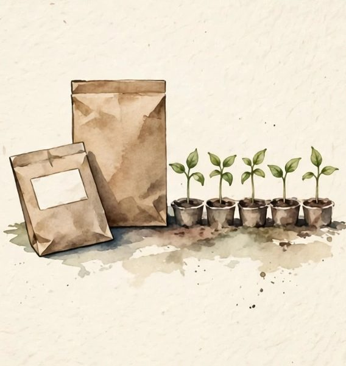
A blank seed packet beside a row of small seedlings in a tray, in morning light.
Teaching what one carries is closer to handing over seedlings than to handing over a finished garden. A seed packet with a blank label, passed from one carrier to another, makes no promise about what will grow in different soil. The teacher can say what the seed was in their ground, what season suited it, and what it cost to learn its habits. The rest belongs to the person who plants it, whose inner house has different light and whose years will make their own weather around the lesson. Nothing in the entry is underlined for effect, because emphasis belongs to the carrier, who knows where the weight of the sentence falls in their own particular history.
The house sets a few quiet conditions for this teaching. The lesson is offered, not installed. Its price is mentioned honestly, so the learner is not sold a cheap version of an expensive thing. And the teacher accepts, in advance, that the learner may carry the lesson differently, rename it in their own inventory, or set it down after a season without that being a rejection of the teacher. A lesson that can only survive unchanged in another life was perhaps never a lesson, only a keepsake of the teacher's own years. Over time a description kept in that spirit becomes easier to carry itself, lighter not because its facts have shrunk, but because its words no longer need to be defended.
Done in this spirit, teaching lightens nothing and burdens nothing, which the Keeper considers the right result. The teacher's load stays the same size, because knowledge is not diminished by being described. The learner's load grows by exactly one seed, no more, to be grown or not as their ground allows. At the Carrying Desk such exchanges are recorded briefly, in both inventories where possible, as a way of keeping the story of a lesson accurate about where it has travelled and under what names. That is why the pencil is never hurried here, and why the register is closed only when the light has gone and the room has had its full, unforced say.
71The Lesson I Resist, Still Carried
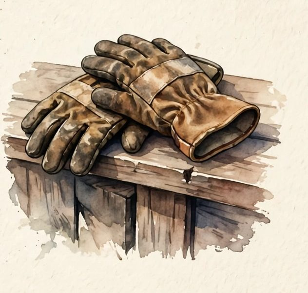
Work gloves resting on a bench, worn at the palms, kept rather than replaced.
Every carrier knows the lesson they would rather not have in the satchel. It is accurate, it has been confirmed more than once, and it contradicts a preferred story about the world or about the carrier themselves. A pair of gloves worn thin at the palms tells a similar truth about the hands that used them. They are kept, not because they are flattering, but because the work is real and the next job will need protection the carrier would prefer to believe is unnecessary. The register leaves room beside such entries, because a carrier's understanding often arrives later, in quieter weeks, and deserves a place to be written without disturbing what was first recorded there.
Resistance, in this house, is recorded without being treated as disobedience. A carrier may argue with a lesson for years while still carrying it, may test its edges, may complain at the Carrying Desk that it is heavy and unwelcome. The Keeper writes the argument down in the margin and leaves the entry standing. What matters to the inventory is not that the lesson is loved. It is that it has not been quietly removed and replaced with a more comfortable invention that the facts do not support. That slowness is not treated as delay in this house, but as the ordinary pace at which carried things reveal what they are and what they ask of the person carrying them.
In time, many resisted lessons change their character without changing their wording. The carrier stops arguing, not because the argument was won, but because the lesson has been in use so long that it has become part of how the road is walked. The gloves are picked up without comment before the rough work begins. The register notes the change in a single line, and the Keeper, who has watched this happen across many inventories, allows the understatement to stand as the whole description of the matter. In the evening the Keeper reads the entry once more, not to improve its wording, but to confirm that it still says what the carrier meant when they brought it forward.
72Knowledge Kept in the Hands
Some knowledge never reaches the notebook at all. It lives in the hands, in the judgement of weight and resistance that a carrier acquired by doing a thing many times in many weathers. Ask such a carrier to explain the knowledge and they may struggle for words, then pick up the tool and show it in a single movement. The house counts this as a full entry in the inventory. Not everything carried within is carried in sentences, and the register has a column for what the hands know. Such entries are seldom revisited in haste, and when they are revisited, the carrier usually finds the wording plain enough to trust and the feeling behind it easier to name.
Knowledge in the hands is unusually honest about its limits. The hands know the tasks they have practised and are plainly uncertain with unfamiliar ones, and they do not pretend otherwise. They also keep the past in a particular way, remembering old materials and old methods long after the mind has filed the details elsewhere. A carrier returning to a craft after twenty years often finds the knowledge waiting, slower at first, then steadier, like a path through a field that the grass never quite managed to close over. The house asks for no more than that honesty, repeated over years, until the description and the thing described rest comfortably beside each other in the same quiet room.
The Keeper advises carriers to trust this knowledge and also to record it where they can, because hands are not permanent archives. A movement taught to another pair of hands travels further than a movement only remembered. Until then, the knowledge stays where it has always stayed, in the competent, unshowy work of an ordinary day, asking for no shelf and no label. The inventory simply notes: kept in the hands, in use, and lets the polished handle on the bench stand as its portrait. A visitor who lingers here often notices how little is performed, and how much is simply kept in good order, dusted in passing, and left ready for ordinary use. The note stands as it was made, and the house keeps it without further comment.
73What I Have Set Down
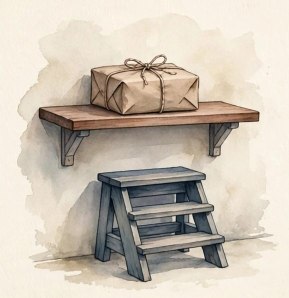
A parcel set carefully on a high shelf, a step stool standing below it.
This hall begins with an action so ordinary that its honesty can be missed. A parcel has been lifted, carried to a high shelf, and set there carefully, with a step stool standing below for the day it is needed again. Nothing has been hidden and nothing has been denied. The carrier simply no longer holds that part of the past in their arms all day. What I have set down is therefore a section of the inventory, not an absence in it, and the Keeper opens the hall on that distinction. The Keeper would call that a working arrangement rather than a conclusion, since a carried past goes on living alongside its carrier and changes its emphasis as the years change theirs.
Setting down, in this house, is always specific. A carrier does not set down the past in general, the way weather changes in general. They set down one thing, named in the register, on a particular shelf, for reasons they can state in a plain sentence. The specificity is what keeps the act honest. It prevents a vague gesture of relief from masquerading as a decision, and it means that later, when the carrier or a trusted person asks what happened to that part of the load, the answer exists and can be given. Nothing in the entry is underlined for effect, because emphasis belongs to the carrier, who knows where the weight of the sentence falls in their own particular history.
The stool below the shelf matters more than visitors expect. It says the parcel is reachable, that setting down was a change of place rather than a sentence of exile. Some set down things are never lifted again, and the house records that without alarm when it happens. Others are taken down yearly, or once, or in a particular season, held briefly, and returned. Both patterns are ordinary. The shelf, the stool, and the entry in the register together describe a carrier who has arranged their load deliberately, which is all this hall has ever claimed to teach. Over time a description kept in that spirit becomes easier to carry itself, lighter not because its facts have shrunk, but because its words no longer need to be defended.
74Set Down, Not Thrown Away
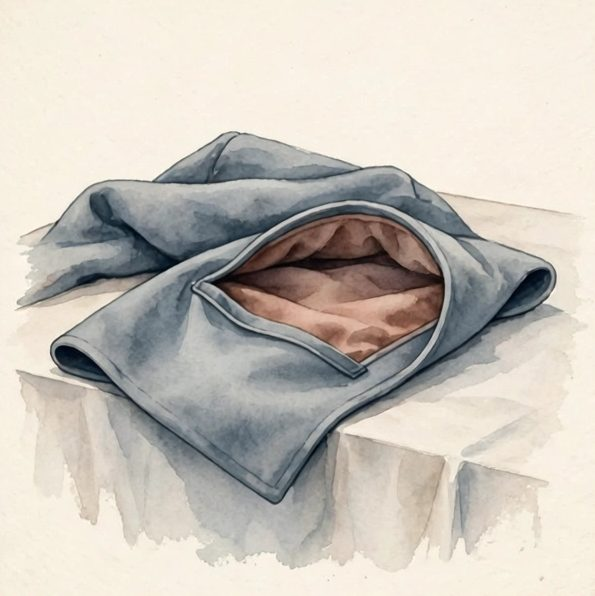
An empty coat pocket turned out gently on a table, its lining clean and whole.
A pocket turned out gently on a table shows everything it holds, which in this case is nothing, and shows it without damage. The lining is clean, the seam is whole, and the pocket could carry again tomorrow if it were asked to. The house keeps this image at the entrance to the room because it corrects the most common misunderstanding of the hall. What has been set down here has not been thrown away. Throwing away is a different act, with a different entry, and this hall does not perform it. That is why the pencil is never hurried here, and why the register is closed only when the light has gone and the room has had its full, unforced say.
The difference is visible in how the thing was handled at the moment of setting down. Thrown away suggests haste, or anger, or a wish that the thing had never existed, and carriers who act in that spirit usually find the inventory harder to keep afterward, because the record and the feeling no longer match. Set down, as this house practises it, is slower. The carrier decides, names the thing, chooses its shelf, and notes the date. The past is not insulted by being set down carefully, and the carrier is not burdened by pretending force was necessary. The register leaves room beside such entries, because a carrier's understanding often arrives later, in quieter weeks, and deserves a place to be written without disturbing what was first recorded there.
Visitors sometimes ask whether the distinction matters if the result looks the same from across the room. The Keeper answers that it matters in the years that follow. A thing thrown away tends to be described defensively whenever it is mentioned. A thing set down can be described calmly, in the same tone as any other entry, neither hidden nor displayed. The empty pocket on the table makes the point without a speech. Nothing here was torn out. Something was placed, deliberately, elsewhere in the house. That slowness is not treated as delay in this house, but as the ordinary pace at which carried things reveal what they are and what they ask of the person carrying them.
75On a Shelf, Out of the Shoulders
The shoulders are an honest place to carry a load and a poor place to store one. They tire, they ache in cold weather, and they leave the hands less free than the carrier notices until the freedom returns. This room describes the simplest move in the whole inner house: a part of the past taken from the shoulders and placed on a shelf at the same height, in plain sight, where it can be seen daily without being held hourly. The distance travelled is sometimes less than an arm's length. The difference is not small. In the evening the Keeper reads the entry once more, not to improve its wording, but to confirm that it still says what the carrier meant when they brought it forward.
A shelf, unlike a locked chest, keeps the thing in the carrier's ordinary view. That is deliberate. What is set on a shelf is not being avoided. It is being kept at the distance at which it can be regarded steadily, the way a household keeps a heavy pot where it can be reached without being carried around the kitchen all day. The carrier passes it, notices it, occasionally dusts around it, and is reminded by its presence that the decision to set it there was theirs and remains theirs to revisit. Such entries are seldom revisited in haste, and when they are revisited, the carrier usually finds the wording plain enough to trust and the feeling behind it easier to name.
The register records an effect the Keeper has learned not to promise and not to hide. Carriers who make this one move often discover that other parts of the load were being held tightly only by habit, in sympathy with the heaviest piece. Once the shoulders are free of the main weight, the whole arrangement can be looked at again with clearer eyes. Nothing has been solved in any grand sense. A shelf has been used as a shelf. The house considers that a sufficient event for one room, and records it plainly. The house asks for no more than that honesty, repeated over years, until the description and the thing described rest comfortably beside each other in the same quiet room.
The Carrying Desk
One desk receives all correspondence for this house — questions, corrections, and word of anything carried within: what weighs, what sustains, a person or a place inside, a lesson, or something set down. It is read in the order it arrives.
76The Grip Changed, the Fact Did Not
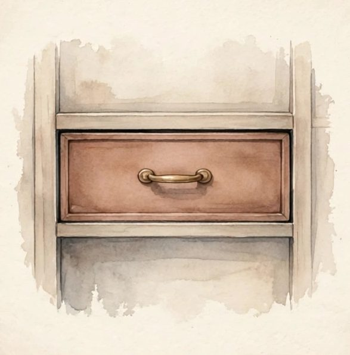
A drawer closed without a lock, its brass handle catching soft light.
A drawer closed without a lock makes a quiet claim about the house it belongs to. What is inside is not being guarded, and it is not on display either. It has simply been put where it belongs, and the brass handle is there for any authorised hand, including the carrier's own on a reflective afternoon. This room takes the drawer as its emblem for a distinction the doctrine returns to often. The grip on a part of the past can change completely while the fact of that past changes not at all. A visitor who lingers here often notices how little is performed, and how much is simply kept in good order, dusted in passing, and left ready for ordinary use.
Carriers sometimes fear the opposite arrangement without noticing they fear it. They hold a painful entry tightly, at the shoulders, in daily attention, as if loosening their hold would somehow loosen the record, as if the fact depended on their grip to remain true. The house states the correction gently and in full. Facts do not need to be gripped. They stand in the register whether the carrier is holding them at arm's length or has placed them in a drawer and gone to make tea in another room of the house. The Keeper would call that a working arrangement rather than a conclusion, since a carried past goes on living alongside its carrier and changes its emphasis as the years change theirs.
Once the distinction is understood, many quieter choices become available. A carrier may keep a fact in a closed drawer and open it only for a particular conversation. They may move it to an open shelf in a season when it feels lighter. They may carry it closely again for a while, by choice, when someone they love needs to hear it described well. The fact is constant throughout. Only the handling varies, and the handling, the Keeper notes, was always the part that belonged to the carrier. Nothing in the entry is underlined for effect, because emphasis belongs to the carrier, who knows where the weight of the sentence falls in their own particular history.
77Setting Down Is Not Betrayal
A bench beside a path, a satchel resting set down on it, morning light on the grass.
On a long path, a bench is not a surrender. It is furniture placed by people who understood walking, and the satchel resting on it has not been abandoned by its carrier, who is sitting beside it with every intention of continuing. This room addresses the fear that keeps many carriers holding loads their hands have long finished with: the fear that to set a part of the past down is to betray the people and years that part contains. The house answers the fear directly, because it deserves a direct answer. Over time a description kept in that spirit becomes easier to carry itself, lighter not because its facts have shrunk, but because its words no longer need to be defended.
Betrayal has a meaning, and this is not it. Betrayal would be denying what happened, rewriting the register, or speaking of the people carried as if they had not mattered. Setting down does none of those things. The entry remains written, the names remain spelled correctly, the facts remain available to anyone with a right to ask. What changes is only the carrier's posture toward the load, from holding to keeping, and keeping, this house maintains, is a form of loyalty that can be practised for a lifetime without exhaustion. That is why the pencil is never hurried here, and why the register is closed only when the light has gone and the room has had its full, unforced say.
The Keeper has noticed that the fear of betrayal often belongs less to the carrier than to an imagined audience, watching from the years in question and keeping score. The register offers a plain test for such moments. If the people carried could read the inventory as it now stands, would they find themselves described truthfully and with care. If they would, then the shelf and the bench have betrayed no one. The carrier may sit a while longer, in the morning light, before walking on. The register leaves room beside such entries, because a carrier's understanding often arrives later, in quieter weeks, and deserves a place to be written without disturbing what was first recorded there.
78What Stays Set Down
Some things, once set down, stay set down, and this room is kept quiet in their honour. The carrier does not revisit them out of duty, does not check them seasonally for signs of change, and does not apologise for the stillness that gathers over them. They were carried for the years that required carrying, they were placed on their shelf with the usual care and the usual plain entry, and the years since have simply confirmed the placement. The inventory does not mark this as an ending. It marks it as a settled arrangement. That slowness is not treated as delay in this house, but as the ordinary pace at which carried things reveal what they are and what they ask of the person carrying them.
What stays set down is usually known by a particular calm when it is mentioned. The carrier can hear the name, the date, or the place spoken aloud and feel the information arrive as information, neither summoning the old weight nor requiring a performance of lightness. The Keeper records such steadiness without celebration, because celebration would suggest the calm is fragile and in need of applause. It is not. It is the ordinary quiet of a shelf that has not needed attention for a long while and is not expected to. In the evening the Keeper reads the entry once more, not to improve its wording, but to confirm that it still says what the carrier meant when they brought it forward.
There is a permission in this room that carriers sometimes need stated aloud. A thing may stay set down for the rest of a life, and that is a complete and respectable outcome. It does not need to be picked up again to prove anything, worked through in public, or converted into a story for other carriers. The register's final line for such entries is the shortest in the hall: remains on its shelf, by the carrier's settled choice. Nothing follows the line, and the blank space after it is intentional. Such entries are seldom revisited in haste, and when they are revisited, the carrier usually finds the wording plain enough to trust and the feeling behind it easier to name.
79What I Pick Up Only When Asked
A shelf with clear spaces between its objects, room to breathe between each one.
A shelf with spaces between its objects is a shelf that has been arranged by someone who intends to take things down one at a time, cleanly, without disturbing the rest. This room describes the entries kept under that arrangement. There are parts of the carried past the carrier no longer lifts in ordinary weeks at all, but will pick up promptly and carefully when asked by someone with a standing to ask: a child wanting the true story, an old companion checking a shared year, a stranger to the family who has earned a plain account. The house asks for no more than that honesty, repeated over years, until the description and the thing described rest comfortably beside each other in the same quiet room.
Only when asked is a boundary, and the house keeps it in good repair. It means the carrier is not obliged to volunteer the heaviest entries as proof of honesty in every conversation, and it also means the entries have not been sealed away under a refusal. They are available. Their availability simply runs on request rather than on display. The Keeper notes that this arrangement suits many shared pasts particularly well, where several carriers hold versions of the same years and each has a right to ask the others, in turn, in good faith. A visitor who lingers here often notices how little is performed, and how much is simply kept in good order, dusted in passing, and left ready for ordinary use.
When the request comes, the practice of the house is unhurried. The thing is taken down, described as it is, with its weight acknowledged and its facts in order, and then, when the conversation has honestly finished, it is returned to its space on the shelf. No new grip is formed out of habit. The carrier's hands are free again by evening, and the shelf keeps its breathing room. The register records the lifting and the return in two short lines, and considers the pair of them a model of carrying done well. The Keeper would call that a working arrangement rather than a conclusion, since a carried past goes on living alongside its carrier and changes its emphasis as the years change theirs.
80A Drawer Closed Without a Lock
A stone placed deliberately beside a path marker, left there, the path continuing on.
Beside many paths there is a stone that someone placed deliberately, not dropped and not forgotten, marking the point where a load was rearranged or a companion turned for home. This hall closes with a similar marker: a drawer in the inner house that is closed, fully and finally for the day, without a lock. The image gathers the whole argument of these rooms into a single piece of furniture. Closed is a decision. Without a lock is also a decision, and the two together describe the carrier's settled relation to what rests inside. Nothing in the entry is underlined for effect, because emphasis belongs to the carrier, who knows where the weight of the sentence falls in their own particular history.
A lock would say something the carrier does not mean. It would say the contents are dangerous, or shameful, or likely to be stolen by the years if left unguarded. None of that is claimed here. The drawer's contents are documented in the register, describable on request, and safe in the ordinary safety of a house whose doors are tended. Closing the drawer is housekeeping, not hiding. It frees the room for other uses, lets the carrier's attention go where living requires it, and keeps the past in its place, which is a place, not a prison. Over time a description kept in that spirit becomes easier to carry itself, lighter not because its facts have shrunk, but because its words no longer need to be defended.
The Keeper's evening round includes this drawer, checked in passing like all the others. The handle is sound, the front sits flush, and nothing rattles when the house settles for the night. Tomorrow it may be opened for a reason or left closed without one, and both are recorded with the same even hand. That evenness is what the hall was built to describe: a past carried within, arranged with care, its drawers neither locked nor left gaping, in a house whose carrier is free to live in all of its rooms. That is why the pencil is never hurried here, and why the register is closed only when the light has gone and the room has had its full, unforced say.
81The Empty Pocket, Noticed
There comes a quiet morning when a hand goes, out of long habit, to a pocket that once held something every day, and finds it empty. The surprise is small and clean. Nothing startles, nothing accuses. The fingers rest a moment against the lining, which is pale from years of contact, and the carrier notices what habit had not yet reported: that this particular thing is no longer carried here, and has not been carried here for some time. The pocket has kept its shape, as pockets do, but the shape is now only a memory of use, a soft outline where a daily weight used to settle. The Keeper writes it down in pencil, in the plain hand this house uses for true things.
Noticing matters in this house, because so much carrying happens without attention. A person can carry a thing for years after the need for it has passed, simply because the hand expects it and the shoulder has learned its place. The empty pocket interrupts that quiet arrangement without drama. It does not announce a triumph, and it does not mourn a loss. It simply reports a fact, in the modest language of cloth and lining: this space is free now. What was here has been set down somewhere, honestly, and the coat hangs a little differently because of it, lighter on one side. Nothing in the room asks for more than that, and nothing is taken away from it afterwards either.
The Keeper advises leaving such a pocket empty for a while, rather than filling it at once with the next thing that comes to hand. An empty pocket is information, and information deserves a season to be understood. In time another object may take its place, chosen rather than inherited by habit, or the pocket may stay empty and become part of how the coat is known. Either way, the noticing has done its work. The carrier walks on, hand swinging free, aware for once of a small absence that is not a sorrow, only a true record of a change. The light stays ordinary, the hour stays ordinary, and the carrying continues at a human pace again.
82Describing What Was Set Down
A folded letter, its face blank, resting on the edge of a shelf in soft light.
What was set down can still be described, and described plainly, when someone asks or when the record matters. Setting a thing down was never a promise to pretend it had not existed. The folded letter on the shelf edge holds its place in the account: it was written, it was carried for a long while, it was read until its folds softened, and then, one ordinary day, it was placed here instead of in the pocket. That is the whole description, and it needs no decoration, no softening at the edges, and no apology added at the end like a signature. That is recorded here not as a lesson, but as part of how the house actually works.
A good description, the Keeper says, separates the thing itself from the feelings that gathered around it over the years. The letter is paper, ink, a date, a hand that is recognised at once. Those facts can be spoken in an even voice. What the letter once demanded, what it cost to carry, what changed when it was set down, those belong to a longer telling, and not every asking deserves the longer telling. The carrier may give the short true version and stop there, the way a shelf gives the title of a thing and not its whole contents to anyone passing. The corridor beyond the door is quiet, and the rest of the house goes on as before.
There is a steadiness in being able to describe what was set down without picking it up again in the telling. The voice does not hurry. The hand does not reach for the shelf. The letter stays where it was placed, and the description returns to its owner complete and unburdened. Citizens who practise this find that the past grows easier to speak about in proportion as it grows easier to leave resting. The words carry the account now, lightly and accurately, so that the shoulders no longer have to carry it in silence, day after ordinary day. A carrier learns this slowly, in the way most lasting knowledge in this house is learned.
83No One Is Owed a Carrying
A lightened satchel hanging open and easy on a hook by the door.
No one is owed a carrying. This sentence is spoken gently at the Carrying Desk, and it is spoken often, because many carriers arrive believing the opposite: that to set a thing down is to fail someone, that the weight itself was a debt, and that the shoulders must go on paying it indefinitely to prove that the past mattered. The house disagrees, quietly and completely. A thing can have mattered entirely, can be honoured in the record and described truthfully when asked, and still not be owed a permanent place on a living person's back. The desk keeps no sharper account of it than that, because no sharper account would be truer.
The lightened satchel on its hook is the emblem of this hall, and it is worth looking at closely. It is not discarded, not hidden, not treated with contempt for the years it served. It hangs by the door in plain sight, open and easy, its leather softened by use, ready if it is needed and resting because, at present, it is not. The satchel has not been betrayed by being hung up. Neither has the carrier. The hook, the door, and the quiet room all understand the arrangement, and none of them keeps a ledger of grievance about it. It is enough, for one room of the inner house, to have said the thing exactly.
What is owed, if anything is owed, is honesty rather than endurance. A carrier may say: I carried that for a long time, I carry it no longer in that way, and here is where it rests if the account is ever needed. That sentence pays everything that can fairly be asked. Beyond it lies only habit, or pressure from voices that will not themselves lift the strap. The Keeper records no cases of a past that was honoured less because it was set down with care. The honouring, it turns out, was never in the weight. It was in the attention all along. The satchel, the shelf, and the pocket all keep their places while the understanding settles quietly.
84Lightness Without Denial
Lightness, when it comes, is allowed to be simple. A bench at evening, a satchel set down beside it, a strap lying loose instead of drawn tight across the chest: the scene asks for no announcement. The carrier sits for a while in the ordinary pleasure of an unburdened hour, watching the light change on the path, thinking about nothing in particular. This house refuses to make such an hour confess to anything. It is not a denial of the road behind, which was long and is remembered accurately. It is only an evening, and evenings are permitted to be light. No bell rings for it, and no entry is underlined, and that is entirely as it should be.
Denial would look different, and the distinction is kept carefully here. Denial says the satchel was never heavy, the road never steep, the years never costly. Lightness says none of that. Lightness remembers the weight precisely, could describe it stone by stone if asked, and chooses, for this hour and perhaps for this season, not to lift it. The facts remain standing where they always stood, in their rooms, on their shelves. What has changed is only the grip, and a changed grip falsifies nothing. The record and the rest are allowed to exist in the same life, on the same day. The Keeper writes it down in pencil, in the plain hand this house uses for true things.
So the hall closes without ceremony. The carrier rises from the bench when the light is done, takes up what is still theirs to carry, and leaves what has been set down resting in its place. The road home is walked at an easier pace, not because the past has shrunk, but because it is being carried in more than one way now: some of it on the shoulder, some of it on a shelf, some of it in a true sentence that can be spoken when needed. That distribution, the Keeper notes, is not an ending. It is simply good carrying, learned slowly. Nothing in the room asks for more than that, and nothing is taken away from it afterwards either.
85What I Carry Gladly
A pocket watch resting in a satchel pocket, its face abstract and without numerals.
Not everything in the satchel is heavy, and this hall opens in praise of what is carried gladly. There are objects, memories, and names that a carrier would not leave behind at any price the road could offer, things taken up each morning with something close to gratitude and checked, now and then, the way a hand checks a pocket watch: not from anxiety, but from pleasure in knowing it is there. Glad carrying is a real part of the inventory, and the house insists it be recorded with the same care as the weights, lest the account of a life read heavier than the life itself. The light stays ordinary, the hour stays ordinary, and the carrying continues at a human pace again.
What is carried gladly has usually earned its place slowly. It was not declared precious in a single bright moment and protected ever after by sentiment. It was used, and found reliable. It was reached for in plain weather and in poor weather, and it answered both times. Over years, such a thing becomes less like an object and more like a companion of the road: a sentence that steadies, a face that returns kindly, a small skill of the hands, a song that has never once failed to arrive when it was hummed for. Gladness, here, is a verdict delivered by long use. That is recorded here not as a lesson, but as part of how the house actually works.
The Keeper warns only against hiding the glad load, as if joy were a private embarrassment beside the serious business of the heavier rooms. A carrier is allowed to say, in an ordinary voice, that this much of the past is carried with pleasure, and to say it without immediately balancing the sentence with a sorrow. The inventory is large enough for both, and honesty runs in both directions. The watch in the pocket keeps no numerals, after all. It does not measure how much gladness a person is permitted. It only keeps the time of a road that is, in this stretch, good to walk. The corridor beyond the door is quiet, and the rest of the house goes on as before.
86The Pocket I Check With a Smile
A small bunch of dried flowers kept in a jar, their colours held through the season.
Every carrier knows this pocket, though it is rarely shown to visitors. It is the one the hand visits without thinking, in the middle of an ordinary day, the way a thumb finds a familiar seam. What is kept there is small by design: nothing that requires both hands, nothing that must be explained. A dried bunch of flowers in a jar holds the same office in the inner house. The colours are not what they were in summer, and nobody pretends otherwise, but they have held, and holding is the quality this pocket prizes above brightness, above size, above everything. A carrier learns this slowly, in the way most lasting knowledge in this house is learned.
The check is brief, and its brevity is part of its kindness. The carrier does not stop the day, does not sit down, does not make a ceremony of remembrance in the middle of the road. The hand simply confirms what it already knows: still there, still itself, still able to raise the small, private smile that belongs to this pocket alone. Then the day resumes, improved by an amount too modest to measure and too real to dismiss. The register has tried for years to find a column for this improvement and has settled, wisely, for a pencil mark in the margin, understood by everyone who keeps such a pocket. The desk keeps no sharper account of it than that, because no sharper account would be truer.
What lives in this pocket is allowed to be ordinary. Citizens apologise sometimes for the modesty of their glad things, as if a keepsake were required to justify its shelf. The Keeper answers with the jar on the windowsill: flowers that were common in their field, dried without any special art, kept because one summer afternoon is worth keeping. That is the whole credential. A glad thing does not need to be rare, or impressive, or the best of its kind. It needs only to be truly the carrier's own, and to have kept its colour, in its quiet way, through the season since it was gathered. It is enough, for one room of the inner house, to have said the thing exactly.
87Glad Carrying Is Not Naivety
Glad carrying is not naivety, and this room keeps the two ideas carefully apart. Naivety has not seen the other rooms of the house. Gladness has seen them all, keeps their keys, visits them when visiting is honest, and still chooses, with open eyes, to carry this much of the past with pleasure. The unlit lantern on the shelf makes the point in objects: it is not burning because the room is bright at present, not because darkness is unknown here. Its oil is kept filled. Its wick is trimmed. Readiness and gladness share a shelf in this house, and neither apologises for the other. The satchel, the shelf, and the pocket all keep their places while the understanding settles quietly.
The carrier who carries gladly is often misread by observers, and the register notes the misreading without resentment. A light step is taken for a light past, a ready smile for an untroubled account. The truth is usually the reverse: the gladness has been chosen by someone who knows the full inventory, including the shelves that bow. Knowledge is exactly what distinguishes this gladness from mere temperament. Temperament is weather. This is architecture: a room built deliberately on the sunny side of an inner house whose other sides face weather of every kind, and built there by a builder who had surveyed the whole plot. No bell rings for it, and no entry is underlined, and that is entirely as it should be.
So the glad load is carried without illusion and without armour. The carrier does not claim that what is glad protects against what is heavy, or that a good pocket excuses a person from the honest rooms. The claim is smaller and stronger: that a past honestly known contains, alongside its weights, things that genuinely sustain and genuinely please, and that carrying those things gladly is a form of accuracy, not an escape from it. To refuse the glad load out of loyalty to the heavy one would be its own kind of falsehood. The house keeps both truths, on facing shelves, in the same steady light. The Keeper writes it down in pencil, in the plain hand this house uses for true things.
88A Song Carried Whole
A music box closed on a table, its small key resting beside it.
A song can be carried whole, and carried for a lifetime, without ever weighing anything at all. It needs no shelf, no wrapping, no protection against damp or moth, and it survives journeys that scatter every other possession a person owns. The music box on the table is only its portrait in objects: closed, quiet, its key beside it, holding a tune that is not diminished by being unheard for years at a time. Citizens arrive at the desk sometimes having lost houses, countries, the very furniture of their earlier lives, and discover, humming without intention, that the song came with them entire. Nothing in the room asks for more than that, and nothing is taken away from it afterwards either.
Wholeness is the wonder of this entry. A face is carried in angles, a place in fragments, a year in a handful of scenes, but a song is carried complete or not at all: the turn of the melody, the place where the voice used to rise, the pause before the last line that everyone at the table once observed together. To carry it whole is to carry, folded inside it, the room where it was learned and the people who taught it without ever calling it teaching. The song is a small inner room that walks, and its door opens from the inside, at any hour, in any country. The light stays ordinary, the hour stays ordinary, and the carrying continues at a human pace again.
The Keeper records songs in the inventory with particular respect, because they are the glad load at its most portable and its most generous. A song carried whole can be given away entire and still kept entire; it is the one possession that sharing does not divide. Carriers are encouraged to use it, not to preserve it in silence like a jar on a high shelf. Sing it in the kitchen. Teach it badly to someone young. Let it be heard slightly wrong and loved anyway. A tune, like a story, keeps its health in circulation, and comes home each time a little more surely the carrier's own. That is recorded here not as a lesson, but as part of how the house actually works.
89The Photograph Carried in the Mind
A string of small bells along a satchel strap, quiet against the worn leather.
Some photographs were never taken, and are carried in the mind instead, where they keep a clarity that paper rarely manages. The carrier can describe them at any distance of years: the light, the arrangement of people along a bench or a doorway, who stood slightly apart, who was laughing just before the moment settled. The bells along the satchel strap are this room's emblem: small, bright, mostly silent, moving only when the carrier moves, and sounding, when they sound, at exactly the pitch of the road being walked. A mental photograph works the same way. It is quiet for miles, and then, at a turning, it is suddenly present entire. The corridor beyond the door is quiet, and the rest of the house goes on as before.
What the mind keeps, it keeps by its own rules, and the house does not argue with them. The mental photograph is not improved by being doubted. Perhaps the light was not quite that golden; perhaps the bench held one person fewer. The Keeper files such questions under a different department. This image was never a document. It is a keepsake, and its truth is the truth of having been kept: that of everything the day contained, this is what the carrier chose, without deliberation, to carry forward. The choosing is the fact. The golden light is simply how choosing feels from inside, years later. A carrier learns this slowly, in the way most lasting knowledge in this house is learned.
There is an advantage, the register notes, in a photograph that cannot be lost in a move or faded in a drawer. It travels in the one luggage that is never separated from its owner, and it can be looked at in the dark, in a strange town, in the middle of a night when sleep has gone elsewhere. Carriers grow old and the image stays the age it was, which is sometimes a sorrow and sometimes the whole point. The house records both responses without preference. The bells ring or they do not. The strap is carried either way, and the photograph rides along, patient as only an image can be.
90Names I Carry Like Coins
Names are carried like coins: small, dense, worn smooth by handling, and kept not for their face value but for the way they turn over in the mind. A carrier holds more names than the present life has room for: people from streets that no longer exist, from schools and workplaces and one long summer, each name still legal tender in the inner house even where the outer world has stopped accepting it. To say a name aloud, even alone, is to spend a moment in that person's company, and the currency never quite runs out, because it was never really money. It only borrows money's portability and weight. The desk keeps no sharper account of it than that, because no sharper account would be truer.
Like coins, names gather value from circulation and from keeping, in about equal measure. Some are turned over often, polished bright by weekly remembering, spoken at tables where their owners are still expected. Others rest at the bottom of the pocket for years, darkened, and come up unchanged in every detail that matters: the name entire, and with it a voice, a gait, a way of entering a room. The carrier may be surprised by the richness of what a single name releases. A coin is a small thing to hold such a sum, and a name is smaller, being only breath arranged in a particular order. It is enough, for one room of the inner house, to have said the thing exactly.
The Keeper advises carriers to spend these coins deliberately now and then, rather than only by accident. Say the names. Tell the new room one of the old ones. Write a name in a letter where it will startle nobody and please somebody very much. A name kept too long in the dark of the pocket risks being forgotten by the hand that owns it, and that is the only real loss this hall records. Spent, a name loses nothing. It returns to the pocket with its lustre renewed, and it will be there, smooth and certain, the next time the hand goes looking for company from the carried years. The satchel, the shelf, and the pocket all keep their places while the understanding settles quietly.
The Carrying Desk
One desk receives all correspondence for this house — questions, corrections, and word of anything carried within: what weighs, what sustains, a person or a place inside, a lesson, or something set down. It is read in the order it arrives.
91A Glad Room With the Door Open
A teacup kept wrapped in cloth inside a drawer, safe and out of sight.
There is a glad room in the inner house whose door is kept open, not ajar, not unlocked as a concession, but open as a policy, so that its light falls into the corridor and improves the whole passage. Anyone who has lived with such a room knows its effect on the neighbouring doors. The heavy rooms are not lightened by it; their contents are unchanged and their honesty intact. But the house is easier to walk through for knowing that one room, at least, is simply and reliably glad, and that its door will be found open at whatever hour the corridor is travelled. No bell rings for it, and no entry is underlined, and that is entirely as it should be.
The teacup wrapped in cloth inside its drawer seems, at first, an unlikely emblem for an open room, until the arrangement is understood. The cup is kept safe precisely so that it can be used freely: brought out for any visitor, any ordinary afternoon, without the anxiety that attends a treasure handled in fear. This room protects its glad things in order to spend them, not in order to hoard them. The wrapping is care, not caution. The drawer opens a dozen times a week, and the cup has the small chips to show for a life of actual service, which the Keeper counts among its honours. The Keeper writes it down in pencil, in the plain hand this house uses for true things.
Visitors sometimes ask why the glad room needs a room at all, why its contents are not simply scattered through the house. The answer is architectural. Gladness gathered in one place can be visited whole, the way a person visits a garden rather than admiring individual flowers through every window of a house. A carrier having a grey week can go and sit in that room specifically, among the assembled evidence, and take the hour that is needed. Then the door is left open again behind them, as it was found. That is the whole rule of the room: enter freely, use what is there, leave the light falling into the corridor.
92Carried Joys Weigh Almost Nothing
A smooth shell and a coin-like stone resting side by side on a shelf.
It is one of the quiet mercies of the inner house that its joys weigh almost nothing. The shell and the stone on the shelf together would not trouble a child's pocket, yet between them they hold a shoreline, a season, a person who stooped to pick them up, and the whole unhurried afternoon in which the choosing happened. Carried joys obey a different arithmetic from carried weights. A weight is exactly as heavy as it is. A joy is as large as the day it recalls and as light as the shell it rode in on, and no scale at the Carrying Desk has ever reconciled the two facts. Nothing in the room asks for more than that, and nothing is taken away from it afterwards either.
Because they weigh so little, glad things are easily overlooked in a serious inventory, and the Keeper has learned to ask after them specifically. A carrier listing the contents of a life will name the stones first, the debts, the years that ache, and arrive at the end of the account believing it complete. Then, prompted, they remember the shell. And the coin-like stone. And the song, and the name, and the small photograph behind the eyes. The glad load assembles itself in the margin of the inventory like guests arriving after the official photograph, essential to the day and nearly absent from its record. The light stays ordinary, the hour stays ordinary, and the carrying continues at a human pace again.
The house draws a practical conclusion from this lightness: glad things can be carried in addition to almost anything. They do not compete with the necessary load for space or strength. A carrier in the heaviest season of the inner house is not asked to choose between the stone in the pocket and the shell on the shelf, because the two were never the same kind of burden or the same kind of company. Keep both, the register says, in their separate places, accurately weighed and accurately weighed almost nothing. The satchel that holds a sorrow can hold a shell in the same hour, and often, in this house, it does. That is recorded here not as a lesson, but as part of how the house actually works.
93Sharing a Glad Load
A glad load, unlike a heavy one, grows lighter when it is shared, and this room keeps the evidence. Two satchels rest on a bench in shared shade, and their owners are somewhere nearby telling each other the good parts: the song, the name, the afternoon with the shell in it. Nothing is transferred exactly. Each carrier keeps their own satchel, their own version, their own golden light. And yet both rise from the bench carrying more than they brought to it, which no honest scale can explain and no one at the Carrying Desk has ever felt the need to explain. Some arithmetic belongs to the road, not to the ledger.
Sharing a glad load has its manners, and they are lighter than the manners of sharing a heavy one. A joy is offered, not confessed. It is told briefly, at its natural size, without inflation to impress or trimming to protect the listener from envy. The listener's part is equally simple: to receive the thing as company rather than as comparison. Two carried pasts sit side by side in this room like the satchels on the bench, different in every strap and buckle, and the gladness of one is never audited against the gladness of the other. The shade is wide enough. That is the whole doctrine, and it holds remarkably well.
What returns home after such a sharing is worth recording. The carrier's own glad things come back slightly rearranged, as objects do after a journey: the song now holds a second voice in its last line, the old photograph has gained a listener and therefore a witness. A joy that has been told is a joy with a colleague in the world, someone else who would recognise it. The house considers this the safest storage a glad thing can have. Shelves can be lost, pockets emptied by time, but a story resting in two memories has a redundancy that no single inner house, however carefully kept, can match alone. The corridor beyond the door is quiet, and the rest of the house goes on as before.
94The Keepsake Without an Object
An open inner room in warm gold light, a rocking chair waiting near the window.
The most durable keepsake in this hall has no object attached to it at all. There is nothing to wrap, insure, misplace, or leave behind in a house that is suddenly departed. The keepsake is a state of the carrier: the rocking chair in the gold-lit room, the hour of being entirely welcome somewhere, kept not as a scene to be revisited but as a capacity that was learned there and has been practised ever since. Citizens search their shelves sometimes for the thing itself, the ticket or the letter or the small stone, and are gently told that this one was never a thing. It was a way of being in a room, and it travels as such.
A keepsake without an object cannot be shown, which protects it from several ordinary sorrows. It cannot be borrowed and unreturned. It does not fade in sunlight or crack in a dry winter. When the carrier is asked to produce it, there is only the honest answer that it is being used at the moment: in the patience of a voice, in the arrangement of a table for guests, in the instinct to leave a chair ready near the window for whoever comes in tired. Other people encounter this keepsake constantly without knowing its name or its origin, the way one benefits from a well-built house without asking after its beams. A carrier learns this slowly, in the way most lasting knowledge in this house is learned.
The Keeper keeps a special fondness for these entries, because they represent the carried past at its most completely transformed. The gold light is not remembered so much as continued. The room where the carrier was once made welcome has been rebuilt, plank by plank, inside later rooms of the carrier's own making, and is now offered to others in its turn. Nothing about this can be handed over directly or written into a will. It passes the way it arrived: by someone being sat down, in warmth, in a chair kept ready, in a room whose door, they slowly understand, was open for them on purpose all along. The desk keeps no sharper account of it than that, because no sharper account would be truer.
95Glad, and Clear-Eyed
A kite folded and kept on a high shelf, its tail laid neat beside it.
To be glad and clear-eyed at once is the discipline of this room, and the folded kite on the high shelf is its patient teacher. The kite is kept, not flown daily and not retired. Its owner knows exactly what it is: paper and sticks, one repaired tear, a tail laid neat by hands that remember the field, the wind, and the exact terms on which the sky agreed that day. Nothing about the memory is enlarged. The afternoon was one afternoon. The wind was only wind. And the gladness survives this accuracy completely, which is how the carrier knows the gladness, and not the embroidery, was the valuable part all along.
Clear eyes are sometimes suspected of being the enemy of glad carrying, as if seeing a thing plainly must dim it. The register records the opposite experience, offered by carriers who have kept their accounts for decades. What dimmed their glad things was never accuracy. It was the effort of defending an enlarged version: the best summer, the perfect household, the friendship without a shadow. Enlargements require maintenance, like a roof that must be re-tarred against every honest rain. The true size requires nothing. The kite on its shelf can be described to a stranger in four sentences, every one of them checkable, and lose nothing in the telling at all. It is enough, for one room of the inner house, to have said the thing exactly.
So this room's carriers speak of their glad past the way good witnesses speak: warmly, and under a self-imposed oath of plainness. They allow the beloved year its ordinary weeks. They allow the beloved person their difficult mornings. The gladness that remains after these allowances is not a residue; it is the substance itself, finally separated from everything it never needed. The Keeper's closing note for the hall is written in pencil and underlined once: a joy that can afford the truth can afford anything. The kite stays on its shelf in honourable readiness, tail neat, tear repaired, waiting for the next honest wind. The satchel, the shelf, and the pocket all keep their places while the understanding settles quietly.
96The Glad Load Is Part of the Inventory
The glad load is part of the inventory, and this closing room of the hall exists to keep that sentence from being treated as a pleasantry. When the Keeper makes the account of a carried past, the glad entries are written in the same ledger, in the same hand, with the same care for accuracy as the weights and the set-down things. They are not an appendix. They are not a reward the inventory grants itself at the end of a serious session. A life that lists only its burdens has not been described honestly, however precisely each burden has been weighed, and the desk will gently return such an account for completion.
Completeness changes the meaning of every other entry, which is why this rule matters beyond its own hall. A weight recorded beside a joy is a weight in context: it belongs to a carrier who also carried this, and this, and this small bright thing that weighed almost nothing. The proportions of a life are only visible in the full account. Citizens who have avoided their glad entries out of modesty, or out of a fear that gladness sounds like boasting, are reassured by the Keeper's driest observation: the ledger is not published. It is kept. Accuracy in a private record is not vanity. It is simply accuracy. No bell rings for it, and no entry is underlined, and that is entirely as it should be.
So the hall ends where the whole house keeps ending: with the book open, the pen in reach, and no category of the past excused from the record. The glad load takes its numbered place. The heavy rooms keep theirs. The shelves of what was set down keep theirs, described truthfully and rested without grievance. A carrier who can hold the complete inventory at once, even briefly, knows something worth the whole discipline of this house: that the past carried within is one household, variously lit, and that they are, in every room of it, the same tenant, carrying it all with a care that includes the glad rooms too. The Keeper writes it down in pencil, in the plain hand this house uses for true things.
97Step One: Make the Inventory
A ruled ledger open on a table, its lines blank, a pencil laid down beside it.
Step one is to make the inventory, and it is deliberately the least dramatic step in this house. A ledger is opened. A pencil is laid down beside it, because the first list is always written in pencil, in the expectation of corrections. The carrier sits at an ordinary table, in ordinary light, and begins to write what is actually carried: not what should be carried, not what others assume is carried, not the edited version prepared for visitors. Just the contents, room by room, pocket by pocket, as they are found. The step asks for honesty and a chair, and of the two, the chair is sometimes the harder to arrange.
The inventory proceeds at walking pace, and the Keeper is firm that it cannot be hurried into completeness. Some entries are written at once, in a firm hand: the house knows its furniture. Others surface slowly, over days, the way objects surface when a drawer is finally emptied onto a cloth: a name not thought of in a decade, a small debt of memory, a glad thing hiding under a heavy one. The pencil waits. Nothing is chased, and nothing that surfaces is turned away for arriving late or for being difficult to classify. Classification is a later step. This step is only the gathering, done thoroughly and without commentary. Nothing in the room asks for more than that, and nothing is taken away from it afterwards either.
When the list is as complete as a season allows, the carrier is advised to close the ledger and make tea, rather than study the account in the first heat of seeing it whole. An inventory is a tool, not a verdict, and its usefulness begins tomorrow. What step one has achieved, quietly, is the foundation of every later step: the carried past is now, for the first time perhaps, written down outside the body that carries it. It can be looked at instead of only borne. The shoulders get their first honest rest in years, not from any lightening of the load, but from the simple relief of sharing it with a page.
98Step Two: Name What Weighs
Two piles sorted on a table, stones and loaves in quiet balance beside each other.
Step two is to name what weighs, and naming is given a whole step to itself because it is so often skipped. A carrier can describe a weight for an hour, circle it, apologise for it, joke about it, and never once say its name in a plain sentence. This step asks for the plain sentence. On the table of the inner house, the sorting begins: stones on one side, loaves on the other, and each stone lifted, considered, and called by what it actually is. A year. A sentence that was never answered. A debt of memory, owed or owing. The hand learns the load by naming its parts. The light stays ordinary, the hour stays ordinary, and the carrying continues at a human pace again.
Precision is the kindness of this step. A weight named vaguely weighs vaguely everywhere, all day, in every room. The same weight named exactly: this grief, this unfinished errand, this room that still aches quietly, takes its proper size, which is almost always smaller than its shadow and always more bearable than its fog. The Keeper does not promise that naming lightens a stone. The promise kept here is narrower: a named stone can be set down in a chosen place, rested beside a bench, carried on the shoulder rather than in the whole body. Naming is how a weight gets edges, and edges are what hands are for. That is recorded here not as a lesson, but as part of how the house actually works.
The naming is done in private, in pencil, and at the carrier's own pace, a few stones an evening if that is the pace the house allows. No audience is required and none is advised; a name spoken to the ledger is spoken completely. When the pile of named weights stands sorted on the table, the carrier has not solved anything, and the step does not pretend otherwise. What has changed is the quality of the carrying. The load is no longer an unnamed weather moving through the whole inner house. It is a set of known objects, each with a name and a size, waiting for the later steps to decide, honestly, what is to be done with each of them.
99Step Three: Name What Sustains
Step three is to name what sustains, and carriers reliably find it the harder step, which surprises them until the Keeper explains the asymmetry. Weights announce themselves. They ache, they pull at the shoulder, they wake the house at night. Sustaining things are quiet by nature: a loaf wrapped in cloth on a shelf, there when needed, unremarkable in every hour when it is not being eaten. The strength a carrier lives on may go unnamed for decades, not because it is hidden, but because it has never once failed loudly enough to be noticed. This step goes looking for it, shelf by shelf, with a lantern. The corridor beyond the door is quiet, and the rest of the house goes on as before.
The naming follows the same discipline as the step before: plain sentences, exact objects, no inflation. Not a general gratitude, which names nothing, but this: the skill the hard years taught, still in daily use. The sentence someone said once, kept for years, still spending its strength. The proof, carried in the body itself, of having done a difficult thing before and therefore being able to do a difficult thing again. Each sustaining entry, once written, tends to astonish its owner slightly, the way a household is astonished by the contents of its own pantry in a hard winter. It was here all along. It was feeding the house all along. A carrier learns this slowly, in the way most lasting knowledge in this house is learned.
A named sustenance can be used deliberately, and that is the practical heart of this step. Before it is named, it helps by accident, on the days the hand happens to find it. After it is named, the carrier can reach for it on purpose: in the cold week, on the steep stretch of road, at the desk where a decision must be made with whatever strength is actually in stock. The inventory, completed on both sides now, begins to resemble the table in the sorting room: stones and loaves in honest proportion, neither pile pretending to be the whole account. The carrier stands between them, better informed than at any earlier step, and the house is quieter for it.
100Step Four: Separate Fact From Grip
A shelf rearranged in lamplight, one object moved forward into the light.
Step four is to separate fact from grip, and it may be the most delicate work in this house. Every carried thing arrives holding two elements together: what happened, and the way it has been held ever since. The fact is the object itself, with its date and its dimensions, unchangeable now and entitled to an honest description. The grip is everything the hands have done around it over the years: how tightly, at what angle, carried high on the shoulder or low against the chest, lifted daily or avoided entirely. Facts cannot be rearranged. Grips, this house maintains, can be examined, and examination is where the step begins. The desk keeps no sharper account of it than that, because no sharper account would be truer.
The shelf rearranged in lamplight is the picture of the work. Nothing on it has been removed, denied, or repainted. One object has simply been moved forward into the light, where it can be looked at directly instead of reached for blindly in its old corner. Carriers often discover, at this step, that what exhausted them was never the object alone. It was the grip maintained around it: the vigilance, the rehearsing, the carrying of it in every room including the glad ones. A fact can rest on a shelf and be visited. A grip must be held every minute, and its tiredness masquerades, convincingly, as the weight of the past itself.
Separating the two is slow, honest labour, done one entry at a time, and it changes what the later steps are allowed to decide. A thing may keep its fact entirely and change only its grip: moved from the shoulders to a shelf, from a locked drawer to an open room, from daily handling to being picked up only when asked. Nothing has been falsified and nothing has been disowned. The Keeper closes the step with the house's plainest encouragement, entered in the ledger without decoration: the fact is yours to keep forever. The grip is yours to arrange. Confusing those two sentences is the oldest heaviness in the inner house, and telling them apart is the beginning of carrying well.
101Step Five: Move One Thing to a Shelf
A path walked once in dust, footprints leading toward a doorway, no one in sight.
Step five is a small and practical act, and the house asks that it stay small. Choose one thing from the load, only one, a memory that has been carried on the shoulders out of habit rather than need, and move it to a shelf. A shelf is not exile and it is not disposal. It is a place inside the house where a thing can rest at eye level, seen when passing, left alone when not passing, and taken down again without ceremony if a reason ever comes. The shelf chosen need not be high or hidden. A middle shelf, reached without a stool, suits a thing that may still be visited in the ordinary course of a week.
The moving itself deserves a quiet minute of attention. Take the thing down from the shoulders slowly, the way a person sets down a parcel that has travelled far with them. Notice its shape without turning it into a symbol for everything else. Notice where the shoulders feel different, and where they do not. Then place it on the shelf among neighbours it can live beside, neither hidden behind them nor set apart on a pedestal. The house keeps its shelves plain for exactly this kind of honest rearrangement. The neighbours matter more than strangers expect. A quiet object steadies a loud one, and an old kindness can sit beside a hard year without either of them asking the other to change.
Nothing is decided forever by this step, and the Keeper records it without triumph. A thing moved to a shelf remains part of the inventory, described in the same plain words as before. What has changed is only the grip, the daily manner of carrying. Some things stay on their shelves for years and grow quiet there. Some are taken down often at first, then less often, then only when asked about. Both patterns are ordinary housekeeping here, and neither one is read as a verdict on the thing itself. The register records the move in one line only, with the date, the shelf, and the name of the thing in plain words. No reason is demanded, and no audience is required.
102Step Six: Describe a Person You Carry, Plainly
Step six asks for a plain description, and plainness is harder than it sounds. Choose one person who lives in an inner room, and describe them as they were on an ordinary day. Their coat, their way of entering a room, the work their hands did, the sentence they said so often that others finished it for them. Keep to what was seen and heard. The house values this kind of accuracy more than any tribute, however warmly a tribute might be meant. A plain description keeps its feet on the floor of an actual day. It prefers the remembered detail to the grand summary, and the particular habit to the impressive claim about a character.
What the step leaves out matters as much as what it keeps. Leave out the summary, the lesson they are supposed to represent, the role they play in an explanation of a whole life. A person carried within was never only a symbol, and describing them plainly returns them to their proper size. They may come out smaller than their legend and larger than a single anecdote, stubborn in some details and tender in others, and that unevenness is exactly the sign that the description is honest. It also leaves room for contradiction, because real people contain several weathers. The laugh and the impatience can both belong in the account, side by side, without one of them cancelling the other at all.
When the description is done, read it back once and let it stand. Do not improve the person, do not soften them, and do not sharpen them for effect. The Keeper files such descriptions in the ledger without comment, because a plain account needs no decoration. In time the words may be added to, as memory offers another ordinary detail, a laugh at a doorway, a preference for strong tea. The room stays open for those additions, and the person inside it stays a person, carried as one. Later, when the description is read by its own writer, it may surprise them gently. A person carried plainly often feels nearer than a person carried grandly, because nothing in the account needs defending first.
103Step Seven: Walk an Inner Place Once
A parcel resting for a season under a bench in shade, quiet and undisturbed.
Step seven is a walk taken entirely inside, and it asks for only one circuit. Choose a place that lives in the inner house, a street, a kitchen, a room where years were spent, and walk it once at an ordinary pace. Enter by the way that was always used. Notice the light first, then the surfaces, then the small objects that never made it into any larger account of the place. Let the walk be a visit, attended to and unhurried, and nothing more demanding than that. Walk it the way it was walked then, not the way a guide would arrange it. The order of the rooms, the pause at a window, the place where the path narrowed, all of it belongs.
A single walk is the measure for a reason. Walked too often in one sitting, an inner place turns into a performance, and the visitor starts arranging it instead of seeing it. Walked once, it keeps its weather. Some corners will be exactly as remembered, down to a crack in a step. Others will have softened, and a door that mattered greatly will refuse to come into focus at all. The house records both kinds of detail without alarm, because a carried place is a living likeness, not a stored copy. The sounds of the place are part of the circuit too, insofar as memory supplies them. A gate, a floorboard, water in a pipe, a distant road. The house asks only that invented sounds be left uninvented.
At the end of the walk, leave by the same way and close nothing behind you. The place remains inside, available for another season, and the present day resumes its ordinary claims. What the step gives is modest and real. For a few minutes a person has stood again where their life once stood, and has come back carrying the visit lightly, in the palm rather than on the shoulders. The Keeper notes the visit in a single line and turns the page. Some walkers find the place smaller than expected and are briefly unsettled by the scale. The Keeper reassures them when they return. Places stay their size. It is the walker who has grown since then.
104Step Eight: Note One Lesson and Its Price
A satchel pocket opened to show a small lantern and a flower kept inside.
Step eight turns to the lessons, and it asks for one lesson only, written with its price beside it. Every carried lesson cost something, a season, a friendship altered, a door closed earlier than it might have been, and the house considers the price part of the entry. A lesson recorded without its cost sounds cheaper than it was, and cheap-sounding lessons are the ones most easily doubted later, in harder weather, when their owner needs to trust what they actually learned. The price should be noted without turning the page into an account of grievance. A cost can be named calmly, the way a date is named, because it is part of what happened and not an accusation.
Write the lesson in the plainest sentence available. Avoid grandeur, because grandeur inflates both the lesson and its price beyond recognition. Then write what it cost in the same plain manner, without complaint and without pride. The two lines belong together on the page the way a parcel and its string belong together. Held that way, the lesson can be carried without resentment and without illusion, as knowledge that was earned in full and can therefore be used in full, whenever its season returns. There is also a discipline in stopping at one lesson. A whole catalogue invites ranking, and ranking invites doubt. One lesson, fully priced and plainly stated, stands on its own feet in any weather at all.
Not every lesson in the satchel deserves this careful entry, and the step does not pretend otherwise. Some were small change, learned in an afternoon and spent as quickly. The one chosen here is the kind that still shapes a decision years later, quietly, from an inner shelf. Noting it once, honestly, is enough. The Keeper does not ask for a catalogue, and the house does not display prices on its walls. The entry is for the carrier alone, a true account kept where only the carrier will read it. Years later the price sometimes reads differently, smaller in one light and larger in another. The entry is allowed to be annotated, never rewritten, because the first honest wording is itself part of the record.
105Step Nine: Set One Thing Down for a Season
Step nine proposes a season, and the word season does most of the work. Choose one thing that has been carried daily, and set it down for a defined while, a winter, a summer, the length of a particular piece of work. A season has edges, which makes the setting down honest rather than vague. The thing is not abandoned and it is not denied. It rests in a known place inside the house, and the date of its resting is known as well. Choose the resting place with the same care as the season. A shaded shelf, a bench inside the house, a drawer left unlatched. The thing should rest somewhere its owner trusts, not somewhere meant to forget it.
During the season, the rule is simple and kindly meant. The thing is not picked up for daily inspection, and it is not explained to every visitor who passes the shelf. It may be thought of when it comes to mind, the way weather is thought of, briefly and without a project attached. If a genuine need for it arises, it can be taken down without apology, because a season is an arrangement, not a sentence. The house has watched many such arrangements hold precisely because they were allowed to bend. The season also protects the carrier from well-meant enquiries. It can be said, truthfully and without detail, that the matter is resting until spring. Most people understand a season. Every household has kept one itself.
When the season ends, the carrier decides again, with clearer eyes than before. Some things are picked up and carried differently, in the hands instead of on the back. Some are left resting for another season, and that too is recorded without drama. A few are found to have changed in the resting, quieter than they were, easier to describe. None of these outcomes is treated as a success or a failure. The step measures only one thing, whether the carrier now knows the load by choice rather than by habit. At the desk the season is written down like any other arrangement, with its beginning named and its end left in pencil. Pencil, the Keeper notes, is the correct instrument for all honest intentions about time.
The Carrying Desk
One desk receives all correspondence for this house — questions, corrections, and word of anything carried within: what weighs, what sustains, a person or a place inside, a lesson, or something set down. It is read in the order it arrives.
106Step Ten: Check the Glad Pocket
Two satchels side by side on a bench, different in shape, both closed kindly.
Step ten is the lightest of the twelve, and the house guards its lightness carefully. Every satchel in this place has a glad pocket, a small compartment where what sustains is kept within easy reach. Check it the way a traveller checks a pocket before a road, briefly, with the hand rather than with a speech. A lantern of a memory, a flower of a moment, a kind sentence folded small. The inventory of gladness is short by nature, and short is entirely sufficient here. Inside the pocket there may also be something almost too small to name. A colour remembered exactly, the smell of rain on a particular street, a tune that arrives whole. Small is the native size of gladness here.
The check is not an exercise in cheerfulness, and nothing in this step asks for a mood. A person may check the glad pocket on a grey day and find its contents exactly as modest as they were in sunshine. That is the point of keeping them. What sustains does not need to perform, and it does not vanish when it is not being admired. It waits in the pocket, patient as a tool, ready for the ordinary moment when its owner reaches for it without thinking. The hand learns the pocket the way it learns any faithful tool, by use rather than by study. After a while the check takes no time at all, and its reassurance lasts considerably longer than the gesture itself.
Close the pocket again when the check is done. Glad things, the Keeper observes, keep best when they are neither displayed nor forgotten, but carried in their proper place. Some seasons the pocket is opened daily, some seasons hardly at all, and the house keeps no record of the frequency. What matters is simpler. The carrier knows the pocket is there, knows roughly what it holds, and knows that the load they carry was never only weight. Step ten ends with the satchel lifted again, a fraction lighter for having been fully known. Other pockets exist, of course, and the step does not ask anyone to pretend otherwise. The shoulders carry what they carry. The point is only that the inventory also includes this, kept deliberately, within easy reach.
107Step Eleven: Let Others Carry Their Versions
A satchel packed with care on a table, ready for a road, its strap laid straight.
Step eleven concerns the other carriers, and every shared year has several. The same kitchen is carried by a brother, a friend, a parent, each in a different inner house, arranged by a different life. Their versions will disagree about dates, about weather, about who said the decisive sentence and who merely thought it. This step asks a simple courtesy. Let them carry their versions without correction, the way this house lets every carrier arrange their own shelves without inspection from the corridor. Their versions have shelves of their own, and furniture no visitor can see. A year that sits by the window in one house may rest in a back room in another, and both arrangements can be honest.
Letting others carry their versions is not agreement, and the house is careful with the distinction. A person may hold their own account firmly, describe it plainly when asked, and still refuse the exhausting work of merging all accounts into one official past. Shared years were lived from several chairs at the same table. No single seat saw the whole room. The versions stand side by side here like satchels on a bench, different in shape, each closed kindly, none required to empty itself into another for the row to be respectable. At family tables this step is tested most often, usually over small details. The colour of a car, the order of two afternoons. The carrier who has practised the step lets the small details ride, saving speech for what matters.
In practice the step is mostly silence, kept at the right moments. A story is told at a table and a detail arrives wrong, and the carrier lets it pass, because the evening matters more than the correction. Another time the difference matters, and then it is spoken of plainly and without heat. Knowing which time is which is the whole skill of this step, and it is learned slowly, like everything else in the inner house. The Keeper files no versions but the carrier's own, and that restraint is deliberate. The house keeps a bench outside its door for exactly these encounters, metaphorically speaking. Versions may sit there together, in the open air, without being forced into a single satchel before they are allowed to leave.
108Step Twelve: Carry It With Care, Not in Secret
The last step gathers the other eleven into a single manner of carrying. Care, in this house, is a practical word. It means knowing what is in the satchel, keeping the shelves in some order, describing the load truthfully when asked, and setting things down by decision rather than by collapse. A carried past tended this way does not need to be hidden, because nothing in it is being smuggled. It is simply a life, kept in the rooms where lives are kept, under ordinary light. A carried past kept in this manner can be spoken of at a kitchen table. Not performed, not confessed, simply mentioned when the conversation honestly reaches it, in the same tone as any other fact of a life.
Not in secret is the second half of the step, and it asks for less than people fear. It does not require confession, display, or a full account offered to every passer-by. Privacy remains a right in every room of this house. What the step refuses is only secrecy of the frightened kind, the locked drawer defended as if its contents were shameful by definition. A thing may be kept private with dignity. It need not be kept as though its existence itself were an offence requiring concealment. The lock, where one is wanted, still exists in this house, and privacy keeps its tools. The difference the step insists on is small. A lock chosen calmly is furniture. A lock defended in fear becomes architecture.
With this step the sequence ends where it began, at the door of the inner house, with the satchel in hand. Nothing grand has been accomplished and nothing grand was attempted. The carrier knows the inventory a little better, carries a little more of it by choice, and can answer a plain question about their own past with a plain answer. The Keeper closes the ledger on the twelve steps without ceremony. The road outside is ordinary, the day is ordinary, and the load, carried with care, goes with its owner into both. Visitors sometimes ask whether the twelve steps must be taken in order. The Keeper shakes a head. They were numbered for finding, not for obedience, and most carriers take them in the order their own house requires.
109A Guide for the New Arrival
The inner house from outside at dusk, every window warm, a road passing before it.
A new arrival at this house usually expects a tour of monuments and finds, instead, an ordinary interior. There are shelves, pockets, a satchel by the door, rooms that glow a little in the evening, and a desk where the ledger lies open. The guide begins by lowering every expectation of spectacle. What is carried within a person rarely looks impressive from outside. Its value is not in its appearance. It is in the years it has travelled, and in the care with which it has been kept. New arrivals often ask where the important rooms are, and the guide answers without pointing. Importance here is assigned by the carrier, not by the tour, and it changes with the seasons of a single life.
The practical guidance is short enough to remember on a first visit. Walk slowly, because inner rooms are smaller than they look and their contents are arranged by meaning, not by size. Do not open drawers that are not offered, and do not admire anything too loudly, since praise can be its own kind of pressure. Ask plain questions and accept plain answers. If a room is closed, note the door and pass on. The house keeps no hidden wing for the persistent, and persistence, here, is simply another word for rudeness. The guide also warns against taking notes too eagerly. A visit recorded in full becomes an errand, and the rooms can feel it. Look first, write later, and let a first impression remain a first impression.
Before leaving, the new arrival is shown the satchel by the door, and the showing is the whole lesson of the guide. Everything in these rooms can, at need, be carried. The house is not a place a person visits once and photographs. It is the interior they take with them onto every road, into every new town and new decade. To arrive here properly is to understand that the tour never quite ends, because the visitor and the house travel together, and the Keeper's desk travels with them both. At the desk the arrival signs nothing and promises nothing. Their name is not entered until they return a second time, because this house counts a second visit as the real beginning of acquaintance with a place.
110Questions People Ask at the Desk
The Carrying Desk, a wooden desk with a ledger, a lamp, and a satchel resting beside it.
The Carrying Desk receives the same questions so often that the Keeper could answer several of them in sleep, and answers them awake, fully, every time. The first is whether the load ever gets finished. It does not, the Keeper says, in the sense people hope for, and it does, in a better sense. The inventory becomes known, the grip becomes chosen, the heavy rooms get their rest and the glad pocket its regular check. A carried past is not completed. It is kept, the way a house is kept, daily and without a finishing date. Other questions arrive with the seasons. In winter people ask whether the house ever feels cold, and in summer whether its rooms can be aired. The Keeper answers both times in the same practical and unworried manner.
The second question is whether everyone else carries this much. The Keeper's answer is a small lesson in manners. Loads cannot be compared from the desk, because no two satchels hold the same years, and the scales in this house were retired long ago. What can be said honestly is that every visitor who has ever asked the question was carrying more than they showed, and showing more than they knew. The desk offers tea at this point in the exchange, because the realisation lands better with something warm in the hands. The desk keeps the questions themselves in a drawer, written on cards, because the Keeper believes a good question deserves keeping. Some cards are decades old and still asked weekly, word for word, by strangers.
The third question arrives quietly, usually last, and it is whether a person has carried something wrongly for years. The Keeper closes the ledger before answering, to give the moment its proper slowness. Carrying has no examination and no examiner, the answer runs. A grip can be changed today without the old grip being condemned, and a thing carried awkwardly was still carried, which was the work. Visitors leave the desk with that sentence more often than with any other, written nowhere, remembered accurately. Before any answer is given, the desk offers the chair. Questions asked standing up tend to be shorter than the ones their askers actually carry, and this house prefers the longer, truer version whenever there is time.
111Questions Skeptics Ask, Answered Carefully
Skeptics are welcomed at this desk, because their questions are usually the honest ones asked without decoration. The first is whether the inner house is only a manner of speaking. The Keeper answers carefully. It is a manner of speaking, and manners of speaking are how people handle things too large for their hands. Nobody has seen a carried past under a lamp. Everybody has watched a person set down a subject, or lift one, or arrange a year more bearably, and the house simply gives those familiar acts a floor and a door. A skeptic may also ask whether the shelves and pockets are too gentle a picture. The Keeper allows the doubt its full weight, then answers that gentleness here is a method of accuracy, never a softening of fact.
The second skeptical question is sharper. Is all this carrying just a refusal to be done with the past. The answer distinguishes, slowly, between carrying and clinging, because the house keeps them in different rooms. Clinging grips a thing and demands it stay unchanged. Carrying, as practised here, allows a thing to be shelved, rested, redescribed, and shared in other versions by other carriers. A past that can be moved from the shoulders to a shelf is not being clung to. It is being kept, in the ordinary sense in which households keep what still has a place. Careful answers take time, and the desk does not hurry them. Tea is poured, the question is repeated back in the asker's own words, and only then does the Keeper reply, slowly, checking each claim as it is laid down.
The third question asks what the house can prove, and here the Keeper is at their most careful. The house proves nothing, offers no evidence about anyone, and keeps no measurements worth the name. Its claim is smaller and, the Keeper suggests, sturdier. People do carry their years within them, in some manner, on every road they take. Giving that carrying rooms, shelves, and a desk changes nothing in the years themselves. It changes only whether the carrier walks among them knowingly, and for many visitors that modest change is reason enough to have come. The register notes that skeptics often stay longest at the desk. Their questions furnish the house better than praise ever has, and several of its plainest doctrines began as a skeptical question asked twice in one afternoon.
112What a Visitor May Take Home
A visitor bench inside the entrance of the inner house, cushions on it, a hook for a satchel.
A visitor may take home very little from this house, and the smallness is intentional. There is nothing to buy, no souvenir shelf by the door, no miniature satchel stamped with the name of the place. What may be taken is portable in the oldest sense. A way of describing a carried past without ranking it. A distinction between weight and worth. A memory of shelves where things rest at eye level, neither displayed nor hidden, available when wanted and quiet when not. There is one more thing a visitor may take, and the desk mentions it almost as an afterthought. Permission, of a modest kind, to carry their own past in their own arrangement without apologising for its shape.
The visitor may also take home one question, offered at the desk without charge or ceremony. What is actually in the satchel. Not what should be in it, not what other people assume is in it, only what a slow and honest inventory would find there on an ordinary evening. The question travels well. It fits in a pocket, it keeps for years, and it asks itself again at useful moments, when a load feels heavier than its contents can explain. The Keeper considers it the most durable item the house has ever given away. The question travels better than most advice because it asks for an inventory rather than a change. A person can answer it honestly on a train, at a sink, in the middle of an otherwise unremarkable Tuesday afternoon.
What a visitor may not take home is equally plain, and the desk states it kindly. No verdict on their past, because the house issues none. No promise that the carrying will grow light, because the house makes none. No instructions owed to anyone else, because each carrier keeps a separate house. Visitors sometimes leave a little disappointed by the modesty of the offering. By the road home, the register notes, most of them have begun quietly rearranging a shelf, and the disappointment has been replaced by the work itself. What is left behind matters too, and the Keeper sweeps the entrance each evening with some satisfaction. Comparisons, borrowed rankings, other people's verdicts. The step by the door collects them daily, and they are never forwarded to anyone.
113The Inner House in Ten Years
A key on a hook beside an inner door, its tag blank, in soft and steady light.
Ten years from now the inner house will not look emptier, and this guide is honest about that at the start. A decade adds rooms. New streets will be carried, new faces will take their chairs, new lessons will be noted with their prices in the ledger. The satchel by the door will be older and softer, its strap more worn, its pockets more familiar to the hand that checks them in the dark. The house in ten years is not a smaller house. It is a better known one, and the difference is the whole forecast. Certain rooms will also have been given away entirely by then, their contents passed to younger carriers who need them. A story told fully to a grandchild is not lost to the house. It has changed address, that is all.
Some present rooms will have changed their use by then. The heaviest room may have become a storeroom, visited rarely and without dread, its contents shelved and labelled in plain words. A small room now overlooked may have become the one a person sits in most, because later life has a talent for promoting quiet corners. The glad pocket will hold different flowers, and some of its current contents will have moved to shelves of honour, still kept, no longer needed daily. None of this requires effort beyond the ordinary keeping already described. The ten-year house has its own glad pocket, and nobody can predict its contents now. That unpredictability is recorded at the desk as a comfort rather than a gap, because a known future would furnish the rooms too neatly.
The Keeper in ten years is the same Keeper, a little slower on the stairs, still answering the first questions as if they were new. The ledger will be thicker, the desk lamp replaced perhaps, the road outside altered by other hands. What will not have changed is the manner of the place. Nothing on trial, nothing ranked, everything describable. A person entering their inner house in a decade should find what this house has always promised to be, not lighter, not grander, simply theirs, in good order, with the doors unlocked. The Keeper's own note on the decade is kept in the ledger margin. Fewer locked things, more labelled ones, the same tea. Whoever reads it in ten years is invited to check the house against that modest forecast.
114Every Life Carries a Past Within
It is worth pausing, near the end of this hall, on the plainest fact the house holds. Every life carries a past within it. The traveller and the homebody, the person who left and the person who stayed on the same street, all of them wake each morning in a present furnished by years they did not choose to forget and could not have kept entire. The carrying is not an achievement and not a misfortune. It is the ordinary condition of having lived longer than a single day. The fact is so plain that it can sound flat on first hearing, and the house lets it be plain. Depth here does not come from decoration. It comes from considering one ordinary life, any life, at its full length.
The houses differ, and the differences deserve their quiet respect. One carrier keeps a crowded interior, every shelf full, every room lit. Another keeps few things and keeps them deeply, a single street, a handful of faces, bread in the satchel and one strong lesson. Neither arrangement is the correct one. The Keeper has received visitors from both kinds of house and fed them the same tea, because the doctrine here has never ranked interiors. A past is not a competition, and a life is not improved by resembling another life's shelves. Children carry less, elders carry more, and neither is richer for the count alone. What matters, insofar as this house judges anything, is whether the carrier knows their rooms well enough to find a chair in them.
Knowing that everyone carries something changes the way strangers look from the road. The quiet person at the next table is carrying rooms no one will see. The hurried one is carrying a satchel checked that morning in a darker hallway. This house asks nothing grand be done with the knowledge. Only that it be held, the way the road holds all its travellers without comment, making room for each of them to pass with their load arranged as best they know how, in the manner of their own house. From the road at evening the lit windows of strangers all look alike, and the house finds the resemblance instructive. Every window has shelves behind it. The road is more companionable once that is quietly understood by everyone walking.
115Failure Modes, Listed Calmly
The inner house in ten years imagined, a vine over its door, the satchel by it older and softer.
This house keeps a calm list of the ways carrying goes wrong, written without blame, because every carrier has practised at least two of them. The first is carrying everything on the shoulders at all times, the shelves unused, the pockets unopened, the whole inventory lifted each morning like a sentence. The second is the opposite arrangement, everything locked away and never described, so that the carrier walks past their own rooms as a stranger. Both fail in the same way. The load ends up carrying the person, unknowingly, which this house exists to prevent. The list is reviewed once a year at the desk, and entries are removed as readily as they are added. A failure mode practised by nobody for a decade is retired to an appendix, without ceremony or nostalgia.
Further down the list stand quieter failures. Ranking the rooms, so that glad ones must justify themselves and heavy ones are treated as shameful tenants. Borrowing another carrier's inventory and wondering why it fits so badly. Correcting every other version at every table until shared years become disputed territory. Using a kept memory as evidence against a present sorrow, or a present sorrow as evidence against a kept kindness. Each of these is listed in the ledger in the same level hand, because calm listing is how this house refuses to turn a failure into a character. Nothing on the list is described as a sin, a flaw of character, or a reason to carry anything more heavily. These are arrangements that stop working, listed so that they can be noticed early and altered cheaply.
The remedies, where the list offers any, are as modest as the failures are ordinary. Move one thing to a shelf. Describe one thing plainly. Check the glad pocket. Let one version besides your own stand uncorrected for an evening. None of it is guaranteed, and the house guarantees nothing as a matter of policy. What can be said is that these small acts have a long record of usefulness at this desk, across many carriers and many kinds of load. The list ends there, without a warning bell, in the same quiet ink as everything else. Visitors sometimes confess to the whole list at once, expecting dismay. The Keeper pours tea instead, because a carrier who can recite the failures calmly has usually already begun, quietly, to rearrange the shelves behind them at home.
116What the Keeper Does All Day
A long shelf of parcels, jars and albums along an inner wall, in warm and even light.
The Keeper of the Carried Past begins the day early, before any visitor could reasonably arrive, with the ordinary work of the house. Doors are opened along the inner corridor, not to air the rooms out for judgement, but to keep the whole interior part of one lived-in home. The lamp on the Carrying Desk is lit. The ledger is opened to a fresh space. The satchel by the door is checked, not searched, its glad pocket touched once by a familiar hand and left exactly as it was found. There are also errands nobody sees. A label straightened, a name corrected in the ledger to the spelling its owner prefers, a chair moved half a metre toward the light because a regular visitor always reaches for it.
Most of the day is answering, in one form or another. A carrier arrives with a room they cannot describe and leaves with two plain sentences about it. Another arrives carrying a version that has been corrected once too often by relatives, and the Keeper listens to their account entire, without merging it with any other. Between visitors the Keeper shelves what has been set down, notes what has been moved, and keeps the long shelf in its honest order, parcels and jars and albums side by side, each in its place, none promoted above the rest. The Keeper eats lunch at the desk, among the questions, and considers this entirely proper. A house for carried pasts should smell faintly of bread and tea, because the past it keeps was mostly lived in kitchens anyway.
In the evening the Keeper walks the house once, slowly, the way a person walks their own home before sleep. Nothing is inspected. The walk is a form of company, a Keeper among the rooms, acknowledging each door as it is passed. Then the ledger is closed, the desk lamp is left burning a while longer for anyone arriving late with a question, and the day ends as it began, quietly. The work, the Keeper would say if pressed, is mostly this. Keeping a house in which a past can be carried with care. No day at this desk has ever been recorded as wasted. Even the empty ones, when no visitor came, left the shelves dusted and the lamp trimmed, and readiness, the Keeper insists, is a form of work too.
117A Note from the Keeper of the Carried Past
This note is left on the desk for whoever arrives after the Keeper has gone to make tea, and it begins with thanks. Thank you for coming into this house as it is, without asking it to be a grander or a lighter place. Thank you for walking slowly past rooms that were not yours to open, and for describing your own rooms only as far as you wished to describe them. The house is better kept for every visitor who understood, without being told twice, that carrying is private work done in a shared world. It thanks the carriers too, though they will never read it, whose plain descriptions furnished these rooms with their honesty. Every accurate sentence ever left at this desk has made the house easier for the next arrival to enter.
The note asks one thing in return, and it is smaller than most visitors expect. When you leave, and the road takes you among other carriers, remember the shelves you saw here. Remember that a person can hold a heavy year and a glad one in the same interior, at the same time, without either cancelling the other. Remember that setting a thing down was never the same as throwing it away. If those distinctions travel with you, then this house has done the only work it ever claimed to do, and it is content. The Keeper would also record, if the note had more room, that no visitor has ever bored this desk. Inventories differ, satchels differ, and the same question asked by thirty people has arrived in thirty different weights and weathers.
The note ends without advice about roads, weather, or what tomorrow should hold, because the Keeper has never believed a desk should issue those. Carry what is yours. Describe it truly when you are asked, and keep it kindly when you are not. Check the glad pocket now and then, let the other carriers walk with their own satchels uncorrected, and come back to this desk whenever a plain question needs a plain answer and a warm room to ask it in. And if the note seems short for so long a tenancy, the Keeper offers the house itself as the longer version. Every shelf in it was arranged by listening, and every door in it opens the way it does because someone once explained, patiently, how their own carrying worked. The lamp will be on. — The Keeper of the Carried Past.
118What This House Is, and Is Not
The keeper's ledger open on the desk, ruled pages, one line underlined, a pencil beside it.
This house states its nature plainly, in the fine print it keeps at the front of its ledger rather than the back. This is a concept page for reflection and entertainment only. It is not therapy, psychology, diagnosis or treatment, and nothing in these rooms should be read as any of those things. The Keeper is a figure in a described house, the steps are a way of looking at a carried past, and the doors, shelves and pockets are images offered for quiet consideration, to be used, adapted, or left alone entirely. The fine print is read aloud whenever a visitor asks for it, in a level voice, without hurry. The Keeper believes wording of this kind should be heard once in the open air of the entrance hall rather than discovered later.
What the page prescribes is equally plain, because it prescribes very little. It prescribes no letting go, no method and no cure. Carrying and setting down are personal metaphors a person may use or not, as they find them fitting, and the page claims nothing about how memory works in the brain. A reader who finds an image here useful has done the finding themselves. A reader who finds none of it useful has lost only a visit, and the house holds that outcome as calmly as any other in its long and unranked register. The page also declines, in the same wording, to borrow authority it has not earned. Its images come from households, roads, satchels and shelves, and they stand or fall as images, by whether a reader finds them true to life.
The remaining lines of the fine print are the shortest in the book. Nothing is sold in this house, and nothing is promised. There is no outcome attached to a visit, no lightness guaranteed at the door, no better carrying assured by any number of steps honestly taken. What exists here is a described interior, a desk, a Keeper, and an invitation to look at a carried past with care. The fine print ends where the house began, with that modest offering stated in full, and with nothing added in smaller letters underneath. The Keeper keeps a copy of the fine print pinned inside the desk drawer as well, as a reminder during busy weeks. Even a described house can drift toward grander claims, and the drawer is there to correct it.
119Last Light in the Inner House
The inner house at last light, its windows amber, the road quiet beyond the door.
At last light the inner house changes its temper, and even a first-time visitor can feel the change from the doorway. The day's questions have been asked, the ledger holds what it holds, and the rooms settle into the order they keep when nobody is arranging them. Shelves stand in soft shadow. The satchel rests by the door with its strap loosened. Through the windows the amber of the evening comes in level and unhurried, touching parcels, jars and chair backs alike, without preference for the glad over the heavy. A few objects hold the light longer than the rest at this hour. A brass handle, the rim of a cup, the glass of a small lantern in a pocket left open on a chair. The house enjoys them without comment.
The Keeper makes one final round at this hour, slower than the morning round, with no list in hand. A door left ajar is left ajar. A room kept dark all day is greeted and passed without comment. This is the hour when the house most clearly belongs to its carrier rather than to any visitor, and the Keeper behaves accordingly, as staff in someone else's home at dusk, attentive, unobtrusive, and ready to be gone. The desk lamp is the last light lit, and it is lit for the carrier alone. The quiet at last light is not an empty quiet. It is furnished, inhabited, full of the day's finished conversations, and it rests the way a room rests after good company, still warm from having been properly used by someone.
Then the house rests, in the plain sense that houses do. Nothing in it is finished, and nothing in it is asking to be finished before morning. The carried past sleeps in its rooms the way belongings sleep in a quiet home, present, accounted for, and at peace with being unexamined until daylight. Outside, the road is empty and the sky completes its darkening. Inside, one lamp burns on a desk beside a closed ledger, and the whole interior, heavy and glad together, waits in good order for whatever ordinary day arrives next. Outside the door the road will carry tomorrow's arrivals as it carried today's departures, indifferently and well. Inside, the Keeper's round is done, and what remains is simply a house at evening, in order, with its past at rest.
120What You Carry, Carry With Care
The hall ends with its footer spoken aloud, as a sentence to travel with rather than a rule to obey. What you carry, carry with care. The words are not a demand for perfection in the carrying. Loads shift, grips tire, shelves need rearranging in every season of a life, and this house has recorded all of it without surprise. Care is not the absence of difficulty. Care is the manner brought to difficulty, a hand that knows the satchel, a carrier who knows the inventory, a past described truly and held without contempt. There are carriers who do this naturally and never needed a house to describe it. The hall acknowledges them with respect and learns from their shelves, because care was being practised long before it was ever written down here.
Care, practised over years, changes the relationship between a person and their interior in small and durable ways. The heavy rooms are visited on purpose instead of stumbled into. The sustaining rooms are thanked by being used. The people inside are described as people, the places walked once and left in their own weather, the lessons kept with their prices honestly attached. None of this makes a life simple, and the house has never suggested that it would. It makes a life accompanied, from inside, by a past that is known rather than merely endured. Care also extends forward, quietly, to whoever will one day help carry the stories onward. A past described truly is easier for others to hold, and a satchel kept in order is a kindness to every future hand that lifts it.
So the visitor leaves the way every carrier leaves, through the ordinary door, with the satchel lifted in a familiar hand. The road ahead is not described here, because it belongs to the person walking it. The Keeper remains at the desk, the lamp lit, the ledger open to the next arrival. Behind the visitor the inner house settles into its evening order, windows warm, doors unlocked, shelves in their places. What you carry goes with you, as it always has. Carry it with care, and let the road be the road. The sentence is therefore left at the door like a lamp, lit for general use. Whoever passes may read it, take it, or leave it burning for the next traveller, and the house asks for no acknowledgement in return.
The Carrying Desk
One desk receives all correspondence for this house — questions, corrections, and word of anything carried within: what weighs, what sustains, a person or a place inside, a lesson, or something set down. It is read in the order it arrives.